| 溺愛王子の甘やかな誘惑 ―ブリシア・マリッジ―【SS付】【イラスト付】 (ロイヤルキス文庫) | |
| 舞姫美 | |
| (2014) | |
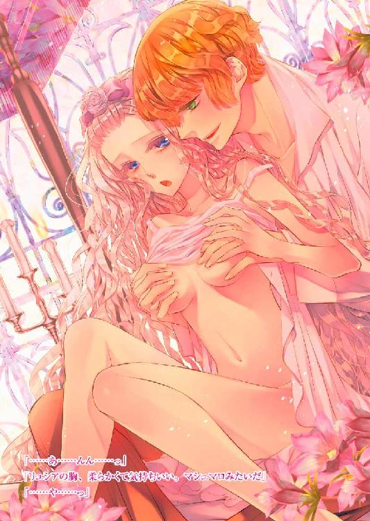
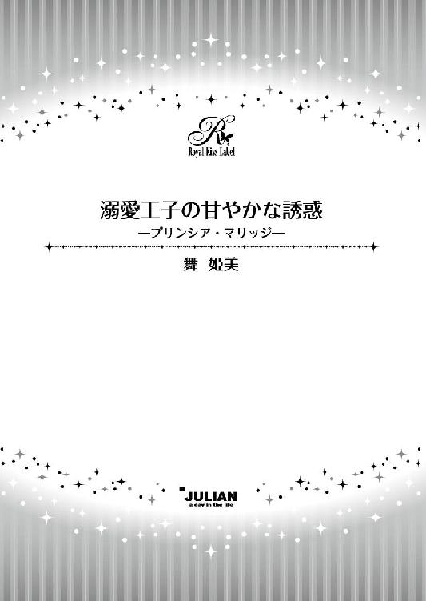
この物語はフィクションであり、実在の人物団体・事件等とは、いっさい関係ありません。
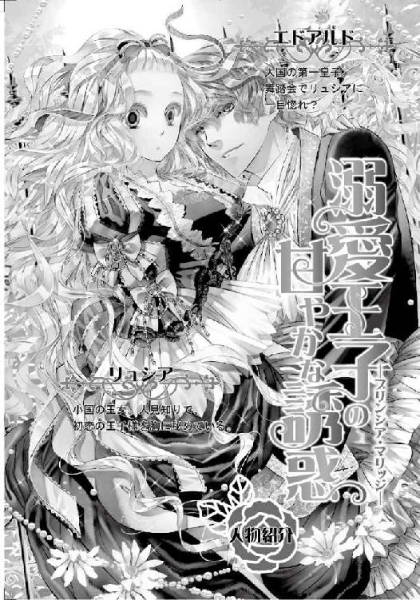
イラスト・坂本あきら
第一章 運命は薔薇の咲く庭園で
「どうしよう......」
ぽつりと呟いたあと、リュシアは身動きが取れずにその場に膝をついてしまった。
腰まで長い白銀の髪のひと房が、薔薇の枝に絡まり、ほどけなくなってしまっている。
リュシアの髪は一本一本が細く柔らかいため、少しの動きでもふわふわと揺れる。一度絡まると、早めにほどかなければ難しくなってしまう。
先程からリュシアなりに頑張っているのだが、慣れている侍女のようにはいかず、結局絡まる髪の量が増えてしまい、泥沼状態になっていくだけだった。そしてここには召使いどころか、通りがかる者もいない。
屋敷の者たちは今宵の仮面舞踏会を楽しんでいて、召使いたちはその対応につきっきりだ。大ホールからはずいぶん離れてしまっているため、リュシアが大声を上げても気づいてもらえないだろう。
耳に届く楽団のワルツの音楽は、思った以上に小さい。リュシアは大きくため息をついた。
（......パーティを抜け出したのがいけなかったのかしら......）
隣国フレディアス大国との国境領を治めるモンテ公は、リュシアの叔父で自分の娘のように可愛がってくれている人物だ。社交的な彼はパーティを開くことが多く、今回もリュシアと兄を誘ってくれた。
とはいえ、大抵においてリュシアは誘いを丁寧に断ってしまう。不特定多数の者たちが集まるパーティは、トラウマを持つリュシアにとって、行きたい場所ではない。
──幼い頃、権力を得るために自分を利用しようとした一族の一人によって、リュシアはよく知らない相手と話すことが苦手になってしまった。リュシアと接する者たちは貴族が多く、そのためまた誰かが自分を利用するのではないかと恐怖にも似た感情を抱いてしまうからだ。
（......でも、いつまでもこれじゃいけないもの）
小国とはいえ、リュシアはこのコルディーナ王国の王女だ。年頃になった今、兄とともに国のため、外交的な役目も担わなければならない。王女として、自国の民がより良い生活ができるように尽力するのは当然だ。
だからこそこの対人恐怖症的な性格を何とかしなければと、今回は思い切って叔父のパーティに参加してみた。特に今夜のパーティはモンテ公夫人の意趣による仮面舞踏会であることも、リュシアの背中を押してくれている。
仮面によって誰だかすぐにわからなければ、自分の正体も知られる可能性は低くなり、近づく者に片端から怯えることもなくなる。それに、今夜はさらに心強い後押しもあった。
自分を変えようとするリュシアの心意気を応援してくれた祖母から、緊張しない『おまじない』を授けてもらい、今夜のパーティが終われば少しは自信が持てると期待していたのだが──甘かった。甘すぎた。なぜだかさっぱりわからないのだが、パーティが始まって早々に男性陣から次々とダンスを申し込まれ、その多さにびっくりしてしまい、結局ここまで逃げてしまった。
「......はあ......」
（せっかくおばあさまがおまじないを授けてくださったのに、使うことも考えつかなかったなんて......）
同行してくれた兄とモンテ公夫婦が助け船を出してくれる前に逃げ出してしまった自分に、ため息しか出てこない。......その耳に、こちらに近づいてくる足音が届く。
（だ、誰......っ？）
知らない人間がやってくる気配にリュシアは肩を震わせ、身を硬くした。だが、ふと思い直す。
今こそ、祖母が与えてくれたおまじないの効果を試してみる機会かもしれない。あのおまじないがあれば、よく知らない相手でもひとまず普通に話すことができるはずだ。
（おばあさま......お願い......！）
リュシアは両手を胸の前で、祈りのかたちにきつく握りしめる。そして口の中で、古代魔法語による呪文を小さく呟いた。
かつてこの世界の住人は、魔法の力を普通に持っていたと言われている。だが今ではコルディーナ王国のごく限られた者しか持ち得ない。リュシアの祖母は稀に見る大魔法使いとして尊敬されていたが、リュシア自身はペンを軽く浮かせられる程度の魔力しか持たなかった。
おまじないの言葉の意味など、ほとんどわからない。だが大魔法使いの祖母が、効果のないおまじないを授けるわけがない。
呪文を唱え終えると、耳の下で壊れそうに脈打っていた鼓動が、鎮まった。
リュシアは大きく息をついて、指をほどく。......見知らぬ相手に声をかける勇気が、不思議と湧いてきた。
（おばあさまのおまじない......すごいわ......!!）
「......あれ。こんなところでどうしたの？」
柔らかく温かい声が、リュシアの頭上から降ってきた。おまじないが効いているおかげで、見知らぬ異性の言葉に跳び上がってしまうほどには驚かない。だが、すぐに声を発せられるほどにもなっていなかった。
「......どうしたの？」
声が、もう一度呼びかけてくる。先程よりももっと優しい。
リュシアは小さく息を呑んだあと、少し震える唇を動かした。
「......あ、あの......髪を、取ってもらえませんか？」
「髪？ ......ああ」
リュシアの状況を理解して、青年は小さく笑った。
「ちょっと待ってて」
「......っ？」
ぬくもりが、背中から覆い被さってくる。青年はリュシアの隣ではなく背後から腕を伸ばして髪をほどき始めた。
「......君の髪は細くて柔らかいんだね。ふわふわだ。まとめないでこんなところを歩いたら、また同じ目に遭うよ。気をつけないと。こんなに綺麗な髪なんだから、切ったりするのはもったいない」
優しい忠告を与えながら、青年の指は丁寧に髪をほどく。異性に──しかも見知らぬ相手にこんなふうに髪を触られるのは初めてなのに、嫌な感じはしなかった。指の動きが本当に優しかったからだろう。
「......気、気をつけます......」
「うん、そうして。......ほら、取れたよ」
青年の指が離れ、髪も元の位置に戻る。リュシアは安堵の笑みを浮かべた。
「ありがとう！ 私一人じゃどうしようもなくて......」
「どういたしまして」
青年がリュシアの両腕を掴んで、立たせてくれる。自然とくちづけも可能なほど近くに、端正な顔があった。
蜂蜜色の髪は少し癖を持って、精悍な額にこぼれ落ちている。さらさらの髪の間から覗く瞳は、月の光を含んで美しく深みのあるエメラルドグリーンだ。綺麗な男の人だ、とリュシアは思わず見惚れてしまった。
けれど、女性的ななよなよした雰囲気はない。よく研ぎ澄まされた細身の剣のような感じを受ける。背が高くてかっちりとした身体つきをしているからだろう。この感じは、剣の稽古をきちんとしている兄に通じるものがあった。
整った顔には、今宵の趣向である仮面は着けられていない。代わりに盛装の白いジャケットの胸ポケットから、仮面の端が少し覗いていた。叔父の招待客ならば、身元不明の怪しい者ではなく、改めてリュシアはほっとする。
「どうしてこんなところにいるの？ パーティの招待客だよね？」
「え、ええ......その......」
普段ならばリュシアは緊張でガチガチになってしまって事情を説明することなどできないが、今はおまじないの力がある。心の中で思っても言葉にうまくできないものたちを、唇に乗せることができた。
「パーティに参加していたら、次々と男の方から声がかかって......私、知らない方とお話しするのが苦手なもので、びっくりしてしまって......逃、逃げてきてしまったの......」
あまりにも子供っぽい対応だったのではないかと、思い返すと恥ずかしくなる。リュシアは頬をほんのりと赤く染めて、俯いた。
だが青年は笑ったりしない。代わりに、至極納得したように頷いた。
「今日の招待客は、見る目があるね。君みたいな可愛くて可憐な子だったら、ダンスを申し込みたくなっても仕方ないと思うよ」
「......可愛くて、可憐......？」
突然そんな誉め言葉を口にされて、リュシアは驚きの声で反復したあと──耳まで真っ赤になった。
......こういうときはどうすればいいのだろうか!? いや、誉めてもらったのだからやはりここはこれしかないはず!!
「......ど、どうも、ありがとう......!!」
「......ふ......ふふ......っ」
青年が、軽く握りしめた拳で口元を押さえながら、低く笑う。その様子に、リュシアはさらに真っ赤になった。
「わ、私、何か変なことを言ってしまったかしら!? ご、ごめんなさい、初対面の人と、こんなふうにお話しするの、初めてで......っ」
「いや、違うよ。すごく可愛いなぁって思ったんだ。君はとても素直だよね。今時珍しいよ」
「......す、素直......かしら......？」
「素直だよ。誉め言葉にありがとうを返してくれるなんて、俺は久しぶりに聞いたかなぁ」
柔らかな物言いは、こちらに呆れているわけでも嫌悪しているわけでもないことがよくわかる。リュシアはほっと胸を撫で下ろした。
その安心感が、笑みを浮かべさせる。青年はどこか眩しげにリュシアを見下ろした。......少し細められたエメラルドグリーンの瞳に甘さが滲んでいて、どきりと鼓動が震える。
「そんなことがあったんなら、パーティに戻る気はしないんじゃない？」
「......え、ええ......ほとぼりが冷めたら戻ろうと思って......」
「可愛いレディが一人で人気のない庭を散歩するのは、パーティに参加するより危険だよ。俺がナイト役をしても構わないかな？」
「......えっ!?」
今ここで初めて会った異性と、ひとときを共にする──そんなこと、できるわけがない。緊張で話もできなくなってしまう！
（......う、ううん、今は大丈夫なんだわ。おばあさまのおまじないが効いているんだから）
いつもとは、違う。そのことを思い出して、リュシアはドキドキと高鳴る胸を片手で押さえつつ、頷いた。
「じゃ、じゃあ......よろしくお願いします」
「こちらこそ、よろしく。俺はエドアルド」
隣国フレディアスの王子と同じ名だ。まさかこんなところにいるとは思わないが、やはり王子の名にあやかって名付けられたのだろうか。
「私はリュシア。あなたはフレディアス国の御方？」
「どうしてそう思うの？」
「フレディアス国の王子と同じ名だから。その方にあやかって、同じ名をご両親はつけられたのかと思って......国民の人気も高い王子でいらっしゃるそうね？」
「......可愛いだけじゃないね、君は」
リュシアの名に、エドアルドの方は姫だとは思いつかなかったらしい。それも仕方ないだろう。この引っ込み思案な性格のため、外交的な場にはまだ一度として出ていないのだ。
リュシアは誉められたのかよくわからず、小首を傾げるようにしてエドアルドを見上げた。 蜂蜜色の前髪の奧で、エドアルドは甘く笑う。
「歩こうか」
エドアルドはリュシアの手を取って、歩き出す。温かい掌のぬくもりにびくっと一瞬震えてしまったリュシアに、エドアルドは微笑みかけた。
「ごめん。いやだった？」
「......う、ううん。驚いて......しまっただけ。いやじゃないわ」
「そう、よかったよ」
「ごめんなさい。私の方こそいやな思いをさせてしまった......？」
「そんなことないよ。こうして君の可愛くて小さな手を取るのは、もしかして俺が初めてなのかなって思ったら嬉しくなるよ」
どきどきしてしまうことを、エドアルドは日常会話のように言ってくれる。戸惑いはしたが、いやな気持ちはしない。心がくすぐったいような、甘くなるような──そんな気持ちがする。
柔らかな月の光にしっとりと濡れた庭は、様々な種類の薔薇によって埋め尽くされていた。 庭師の腕もさることながら、持ち主がこの場所をとても大切にしているのがわかる。
エドアルドは周囲を眺めながら歩を進めつつ、感嘆の吐息をついた。
「ここの庭は、とても素晴らしいね」
リュシアも祖母から話は聞いていたが、実際に見るのは初めてだ。
「ええ、薔薇が本当に素敵だわ。モンテ公夫人がお好きなのよ。だからモンテ公も夫人のためにいろいろな薔薇の品種を集めていらっしゃるの。夫人をとても愛していらっしゃるからだと思うわ」
「愛して......ね。仲睦まじいんだ、モンテ公夫婦は」
「ええ！ それはそれは素敵なご夫婦よ！ 私もいつか結婚したら、あんなご夫婦になりたいと思っているの。お父さまとお母さまみたいな感じも好きだわ」
リュシアは満面の笑みを浮かべて、頷いた。
モンテ公だけではなく、コルディーナ国王夫婦も恋愛結婚だ。リュシアも両親たちから、想う相手と結ばれるのがいいのだとよく聞かされていた。祖母が国政の関係上、恋愛結婚できなかったこともあるのだろう。
薔薇の甘い香りが、夜闇に広がっている。時折風が吹くと、香りが強くなる。なんだか別の世界に迷い込んでしまったような感じがした。
（初対面の人と、こんなふうに話せるなんて）
話しているだけではなく、手をつないで歩いている。......だからだろうか。心の中に大切にしまい込んでいる思い出に、重なった。
（『王子さま』と一緒に、こんなふうに手をつないで歩いたわ）
幼い頃に出会った、初恋の人。だが記憶は成長していくにつれて薄れていき、はっきりと顔を思い出すことができなくなってしまっている。
（王子さまも、きっとこのくらいの歳になられているわ。エドアルドさんみたいな感じになられているのかしら......）
リュシアの視線に気づいているエドアルドは、くすくすと笑った。
「そんなに気になるなら、もっとじっくり見てくれて構わないよ？」
「じ、じっくりって......!?」
「うん、こうやって」
エドアルドはリュシアの腰を抱くと、視線の先にあるガーデンセットに導いてくれる。エスコートは完璧で、リュシアが戸惑っている余裕すら与えられない。
あっという間に透かし彫りの椅子に座らされる。エドアルドももう一つの椅子を引き寄せ、向かい合うように座った。
「......あ、あの......っ」
「こうすれば、顔をよく見れるよね？」
「そ、そうだけど......」
じっと見られるのが、恥ずかしい。それでなくともエドアルドは端正な顔立ちをしているのだ。こんなふうに見られると、おまじないが効いていてもまた緊張してしまいそうになる。
だがエドアルドの話術は巧みで、リュシアが言葉を詰まらせないようにしてくれた。同時に時折こちらをからかうような会話も挟んでくれるため、いつのまにやら彼の思うままに声を立てて笑っている自分に気づく。
話し声に気づいて様子を見に来た召使いに、エドアルドが軽い食事と飲み物を命じてくれた。
「あなたはパーティに参加しなくてもいいの？」
「うん、いいんだよ。リュシアと話している方が楽しいんだ」
リュシアはシャンパングラスを両手で抱きしめて、頬を染めてしまう。
「た、たいしたことは何も話してない、けど......」
リュシアは慌ててグラスの中身を一気に呷る。口当たりがよくてしゅわしゅわとした喉ごしのシャンパンを、もう三杯も飲んでいたことに気づいたときには遅かった。
くらり、とリュシアの視界が揺らいだ。そのまま身体が傾いでしまうが、エドアルドに慌てることなく受け止められる。
「......ご、ごめんなさい......」
「君はお酒に弱いんだね。少し飲みすぎたかな」
確かに、強い方ではない。けれど会話が弾んで楽しくて、シャンパンのフルーティな味も美味しくて、気がつかない間に自分の酒量を上回っていたようだ。
エドアルドは予想していたのか、召使いに水差しも用意してもらっていた。氷と一緒に入っている水を、空のグラスに注いでくれる。
「はい、どうぞ」
グラスを差し出されたが、身体がふわふわしてうまく受け取れない。エドアルドは小さく笑うと、水を一口含み、リュシアに唇を寄せる。酔ってはいても、仲睦まじい人々を見てきたリュシアは、何をされるのか何となくわかった。
意識の端を通り過ぎたのは、顔がもう思い出せなくなってしまった『王子さま』の姿だ。リュシアは反射的に片手を上げて、エドアルドの唇に押しつけた。
「......だめ」
「何が、だめ？」
柔らかい微笑すら含んだ声で、エドアルドは問いかけてくる。酔ってぼんやりとした意識でも、リュシアは続けた。
「私には、王子さまがいるの......」
「......そう」
答えるエドアルドの声は、どこまでも優しげなものだ。
「大丈夫、王子さまも怒らないよ。これは君の酔いを冷ましてあげるもので、邪な気持ちはないんだからね」
「......そう......なの？」
「そうだよ。だから安心して」
うん、と小さく頷くと、エドアルドの唇がそっとリュシアの唇に押しつけられた。水を含んだ唇が柔らかく動き、リュシアの唇を薄く開かせてくる。
「......ん......っ」
ひんやりとした感触が、口中に広がって喉を滑り落ちていく。火照った身体にそれはとても甘く冷たく感じられ、リュシアは思わずもっと、と遠のくエドアルドの唇を求めてしまった。
エドアルドはすぐに新たな水を口に含んで、リュシアに与えてくれる。水を与えるだけだった唇が大きく動き、リュシアの口中に舌を忍ばせてきた。
「......んん......」
少し冷たく感じられる舌が、リュシアの舌に絡みつく。その冷たさも心地よくて、応えるように喉を鳴らした。
エドアルドの舌が、リュシアの舌を擦るように動く。互いの唾液でぬめった舌が、やがて本能のままに蠢き、貪り始めた。
「......ん......んぅ......」
どこか浮遊しているような感覚は、シャンパンのせいだけではないだろう。エドアルドとのキスが、リュシアの心をとろかす。
舌を奥まで差し入れられ、口腔内を隅々までまさぐられる。歯列はもちろんのこと、上顎や頬の内側の柔らかい部分までも探られて、リュシアの身体からはますます力が抜けていった。
（あ......駄目......力が、もう入らない......）
互いの唾液が混じり合い、熱い滴りとなる。反射的に飲み込むが、うまくいかずに端からこぼれてしまった。熱い雫が滴り落ちる感触にも、肌が粟立った。
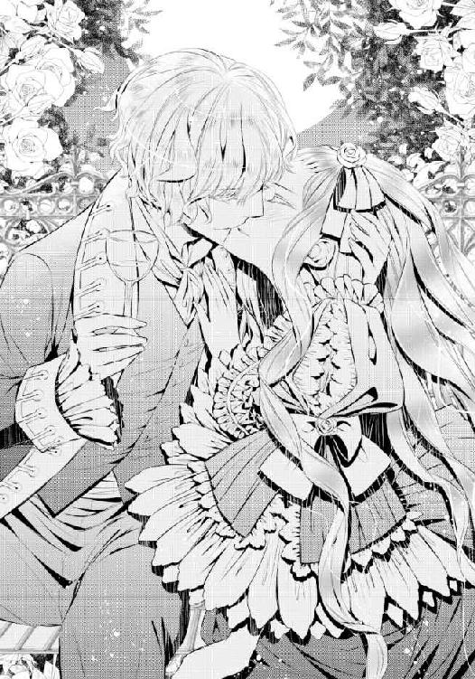
「......ふぁ......っ」
あまりにも深く激しいくちづけに、息が詰まって苦しくなる。空気を取り込もうとしても、うまくできない。
リュシアの眉根が、寄せられた。エドアルドはそれに気づき、喉の奥で笑って唇をわずかに離した。
空気を大量に吸い込むことができて、リュシアは大きく胸を上下させる。
「......は......ぁっ」
「......キスは、初めて？」
「......え、ええ......」
「俺のキスは、どうだった？」
なぜ、そんなことを聞くのだろう。リュシアは内心で小首を傾げながらも、素直に答えている。
「胸が、どきどきして......気持ち、よかった、わ......」
「そう。じゃあもう一回、してもいい？」
ええ、とリュシアが答えるよりも先に、エドアルドの唇が再び重なった。押し開かれた唇の中にまた舌が奥深くまで入り込んで、絡みついてくる。
「......可愛い。まいったな......キス、やめられなくなりそう......」
「......ん......んん......っ」
いったいどれだけくちづければ気が済むのだろうかと、リュシアが少し怖くなり始めた頃、ようやくエドアルドの唇が離れた。だがそのときにはもうリュシアの意識は酔いとくちづけの心地よさにとろとろにとろけていて、落ちる寸前だった。
吸われてぷっくりと赤くなった唇を、エドアルドの指先がそっと撫でる。その感触にも、リュシアは身を震わせた。
「そろそろ帰らないとね。お兄さんのところに連れていってあげる」
（私......兄さまのこと、話したかしら......？）
疑問に思ったものの、もう考えるのすら億劫だ。エドアルドが身体をふわりと抱き上げて、歩き出してくれる。
厚い胸に頭をもたせかけてエドアルドに身を任せながら、これだけは聞かなければと、リュシアは尋ねた。
「あの......また、会える......？」
「また会いたいと思ってくれる？」
こくん、と小さく頷く。エドアルドはリュシアの前髪に優しいくちづけを落とした。
「じゃあ、また会えるようにするよ。待ってて」
「......ええ、待ってるわ......」
そう答えたのが最後だ。リュシアの意識はぷつりと途切れてしまった。
☆☆☆
幼い頃の記憶に残る少年が、リュシアの王子さまだ。歳を重ねていくにつれて記憶はどんどん曖昧になり、顔がもうよく思い出せなくなってしまっている。けれど、優しくてあたたかい雰囲気だけははっきりと覚えていた。
そして何よりも、少年の勇気を忘れることはない。
王子さまと一緒に庭で遊んでいたときに、大きな犬が迷い込んできた。飼い主と離れて不安にでもなっていたのだろうか──ひどく殺気立っていて、子供心にも、相手を刺激したらとても危険な目に遭うとわかった。
逃げよう、と王子さまは言って、リュシアの手を強く握ってくれた。だがほんのわずかな動きにも犬は敏感に反応し、リュシアたちに飛びかかってきた。王子さまはリュシアの前に立ちふさがって守ってくれ、代わりに腕を噛まれてしまった。
リュシアが驚いてしまわないように、王子さまは痛みの悲鳴を必死に堪えてくれた。リュシアは小さな背中に庇われぺたんと座り込んだまま、何もできずに泣きじゃくるしかなかった。
そのあとすぐに大人が駆けつけてくれて、助かった。噛まれた腕を応急処置される王子さまの傍でただただ泣いているリュシアの頭を、そのとき少年は優しく撫でてくれた。
「大丈夫だよ、大丈夫。ちゃんと君を守れて、よかった。僕にも、誰かを守ることができるんだよね。教えてくれてありがとう」
お礼を言わなくてはいけないのは、自分だ。なのに声は涙のせいでうまく出てこない。
何も言えないでいる間にリュシアは気を失ってしまった。......それが、記憶に残る初恋の思い出だ。
（大人になった王子さまは、きっと素敵な人になっているわ）
初恋の美化された想いだとわかっていても、リュシアはそう思ってしまう。あの優しさを核にして、立派で、誰かを守れる人になっているはずだ。
（どんな人に、なっているかしら......？）
『......可愛い。まいったな......キス、やめられなくなりそう......』──そう言ったエドアルドの顔が直後に思い出され、リュシアは声にならない悲鳴を上げながら身を起こした。
☆☆☆
「......っ!!」
危うくもう少しで頭をぶつけ合うことになるのを避けられたのは、ひとえに兄の素晴らしい反射神経のおかげだろう。
リュシアよりも色が薄い蒼の瞳と、同じ白銀の髪を持つ兄のユリウスは、妹の目覚めにほっと安堵の息をついた。
「ああ、よかった。大丈夫か？」
「......え、ええ......」
体調に思わしくないところはない。リュシアは素直に答えると、周囲を見回した。
花の刺繍が入った厚手のカーテンは、どの窓のものもぴったりと閉ざされていたが、陽光はわずかな隙間から素早く入り込んで室内を淡く満たしている。カーテンとは別の花刺繍が入った繻子織りの布が天蓋から落ちて、リュシアの眠りを包み込んでくれていた。
白色を基調とした調度品たちは、間違いなくリュシアの部屋のものだ。ここはコルディーナ国王宮だ。エドアルドとの逢瀬が急に途切れたこともあり、どうして自分がここにいるのかすぐにはわからない。
（えっと......エドアルドさんとお喋りをしながら、シャンパンを飲んで......）
そうだ。自分の酒量のことを考えずに飲んだため、酔って倒れたのだ。エドアルドはユリウスを探してくれて、あとのことを頼んだのだろう。
あまりの失態に、リュシアは真っ赤になってしまう。
「リュシア、大丈夫か。まだ酒が抜けてないか？」
サイドテーブルに置かれていた水差しを取り、ユリウスはグラスに注いで手渡してくれる。礼を言って受け取ると急激な喉の渇きを覚え、中身を半分ほど一気に飲み下した。
ほうっと息をついたリュシアの額に、ユリウスが掌を当てる。
「大丈夫か？」
「ええ。お水を飲んだら落ち着いたわ」
「そうか。ならもういいな」
うおっほん、と実にわざとらしい咳払いをすると、ユリウスは雷を落とした。
「お前は！ 知らない男の前で酒なんか飲むんじゃない!! たまたま今回は無事だったからよかったものの、酔ったところで貞操を奪われてもおかしくなかったんだぞ!! 今回の相手が若いわりには理性的で紳士的だったことに感謝しろ！ まったく、世間知らずにもほどがある!!」
怒濤の叱責はどこで息継ぎをしているのかと感心してしまうものだ。だが心配してくれたことがわかるため、リュシアは反論もできずにしょんぼりと肩を落としてしまう。
「......ごめんなさい......」
「......まあ、はぐれたお前を見つけるのに手間取った俺も悪い」
リュシアが小さく笑って首を振ると、ユリウスも軽く肩を竦めて苦笑した。そして枕元に腰を下ろし、言いにくそうに続ける。
「......あー......何も、なかったんだよな？」
再度確認を取られると、酔いのために薄ぼんやりとしていた記憶が、徐々にはっきりしてきた。思い出されたのはエドアルドとのキスで、リュシアは改めて真っ赤になってしまう。
（酔、酔っていたとはいえ、な、なんてことを......!! わ、私には王子さまがいるに......!!）
昨夜のキスはとても気持ちがよかった。初めてなのに気持ちいいなどと思ってしまうのは、はしたない。
（いやだわ、私！ どうしてしまったの......っ）
「......おい、まさかリュシア、お前......っ!!」
「いえ、何もありません!! 着、着替えるから！ お兄さま、出ていってください!!」
これ以上何か言われないようにと、リュシアはベッドから下りて兄の背中を押す。ユリウスに退くつもりはなかったようだが、空気を読んで入室してきた召使いたちによって、うまく追い出されてしまった。
「ユリウスさま。リュシアさまはお召し替えをされますの。いくらご兄妹とはいえ、レディの着替えを見たいなどと、おっしゃいませんよね？」
リュシア付きの召使いの中で一番の古株であり、もっとも信頼しているリザが、追い打ちをかける。リザだからこそ許される不思議な威圧感に圧されて、ユリウスは妹の部屋を出ていくしかなかった。
兄を追い出したあとは、リザをはじめとした数人の召使いたちがリュシアを取り囲み、朝の支度をしてくれる。王宮内だからといって普段から豪華なドレス姿ではなく、高価で肌触りのよい生地を使用したワンピースなどだ。
今日は白を貴重とした膝上丈のワンピースで、スカートはシフォン生地を幾重にも重ね、ギャザーがたっぷりと寄せられた軽やかなものだ。胸元が大きくえぐれたデザインでも、鎖骨の部分は繊細なレースで覆われて、滑らかな肌はほどよく隠されている。
絹のストッキングを履かせ終えると、リザ以外の者たちはリネンとネグリジェを回収し、一礼して退室した。残ったリザはリュシアをドレッサーの前に座らせて、長い銀髪に丁寧に櫛を入れてくれる。
櫛の動きに気持ちよくなりながら、リュシアはリザにヘアスタイルをすべて任せた。姉のように幼い頃から傍にいるこの召使いは、わざわざ言葉にしなくともこちらの思いを汲み取ってくれる。
「今日の朝食にはリュシアさまがお好きなパンケーキがありますよ。召し上がりますか？」
「ええ、もちろん！ お酒は身体にまったく残ってないの」
「美味しいお酒だったんですね？」
シャンパンの味のことだけを聞かれているわけではないと、すぐに気づいた。
昨夜のエドアルドとのひとときを思い出し、鏡に映るリュシアは真っ赤になる。リザは主を微笑ましげに見つめた。
「そんなふうに楽しく過ごされたのは、とても喜ばしいことです！ リュシアさまの内気すぎる性格も、これで克服できたってことですね！」
「......あ、あの......ね。それは......」
喜んでくれるリザの気持ちをがっかりさせてしまうことがわかっていても、嘘はつけない。リュシアの髪を整え終えたリザは、ヘアスタイルの完成度に満足げに笑った。
「今日もとても可愛いですわ、リュシアさま！ ......で、違うんですか？」
「......あ、あの夜は、おばあさまのおまじないを使ったの」
「大魔法師カーラさまの？」
リュシアは頷く。
「私が緊張して話せなくなりそうなときにやってごらんなさいって......だから、エドアルドさんとも話せたのよ」
「さすが大魔法師カーラさまです！ 素晴らしいおまじないですわ！」
リザの素直な感嘆の言葉に、リュシアは満面の笑みを浮かべた。大好きな祖母のことを誉められるのは、やはりいつだって嬉しい。
昨今では魔法の力を継ぐ者たちがだんだん減りつつある。強大な力を持って生まれたカーラは、先代女王としてコルディーナ国を導き、息子が国王として充分な力量を発揮できると判断したあと、国民たちに惜しまれながらも女王の座を退いている。
畏敬の念を込めて大魔法師と呼ばれるカーラは今、王宮から馬車で三日はかかるところにある森の奥深くで隠居生活をしていた。
とはいえ、会いたくなったり話したくなったりしたら、王宮に残されている彼女の私室に行けばいい。
クローゼットの扉を開ければカーラの屋敷につながり、ドレッサーの鏡に呼びかければそこに彼女の姿が映し出されて、会話もできる。だからこそ、リュシアは緊張しないためのおまじないを仮面舞踏会の前に授けてもらえたのだ。
だが、結局のところ、根本的な解決にはなっていないように思える。おまじないがなければ、きっと、エドアルドとは話せもしなかったのだ。
（駄目ね......私）
少し落ち込んでしまいそうになるが、リザを心配させるわけにもいかず、リュシアは改めて笑った。
「でも、おまじないの効果はとてもすごかったの。素直になりすぎちゃうくらいだったわ。だから、ほどほどにしないといけないわね」
「まあ、そうなんですか。じゃあそのおまじないは、ここぞというときだけにされた方がいいのかもしれませんね」
「ええ。でもおばあさまには、あとで改めてお礼をお伝えするわ。おまじないのおかげで、とても楽しいひとときを過ごせたんだもの」
エドアルドとの会話は、とても楽しかった。変に押しつけがましいところはなく、リュシアが次の会話に困らないようにいろいろな話をしてくれた。リュシアを手に入れようとする強引さもなく、別れのときのキス以外はとても紳士的で、居心地のいい相手だった。
初対面で、しかも異性に対してこんなふうに思うのは、初めてだ。
（また、会いたいな......）
別れの挨拶を思い出し、リュシアは自覚なく願ってしまう。
自分が会いたいと願うならば、会えるようにしてくれるとエドアルドは言ってくれた。願い続けていれば、もう一度会えるかもしれない。
今のリュシアには、そのくらいしかできない。彼の名を知ってはいても、どこの誰かは知らないのだから。
第二章初恋の君がいるのに
他人との接触に緊張しすぎてしまうリュシアだったが、相手が子供となると別だ。
彼らの心や仕草には、リュシアが苦手とする大人の嘘や打算はない。だから教会や学校などの慰問には、比較的積極的に参加している。
この日は庭の花々を小さなブーケにして教会の子供たちにプレゼントするため、庭師の指導のもと、自らの手で花を摘んでいた。
そこに、召使いの一人がリュシアを呼びにやってきた。父親からの呼び出しを訝しげに思いながらも導かれるままに謁見の間に行けば、父とユリウスと──もう一人見知らぬ青年がいた。
青年は父たちよりも離れた場所で片膝をつき、頭を垂れている。外套を纏った姿から、使者だとわかった。
「ああ、来たか、リュシア」
国王の呼びかけに、使者が顔を上げる。リュシアの姿を認めると、親しみのある笑みを浮かべてきた。
一気に緊張するが、リュシアは王女としての笑みを浮かべてやり過ごす。
「こちらへ来なさい」
父王の傍に歩み寄ると、銀のトレーに載った一通の封書が差し出された。伝令の彼が持ってきたものだ。だが、封が開いていない。
赤い封蝋はぴったりと封筒に貼りついたままだ。そして封蝋にくっきりと刻み込まれた紋章は、隣国フレディアスのものだった。
「お前宛だ」
「え......!?」
フレディアス国とは、祖母の過去にまつわる交流があってかなり友好的な間柄だが、それは外交レベルのため、まず自分は関係ない。
フレディアス王家に関わる者から手紙をもらう心当たりがさっぱりないため、リュシアは驚きの声を上げてしまい、ユリウスが少々たしなめるかのように、咳払いをしてきた。家族だけならばよいが、今はここに使者がいる。
リュシアは慌ててトレーから手紙を取り、中を開いた。丁寧に書かれた文字を瞳で追いかけていき──すべてを読み終わったあと、大悲鳴を上げてしまいそうになる。
『薔薇の庭でのひとときは、とても楽しく忘れがたいものでした。あの夜に交わした約束を貴女がまだ覚えていて、願ってくれているのならば、ぜひ、我が国にご招待したいと思っています。ちょうど二週間後に我が国のとある町で、花祭りが開かれます。とても美しい祭りです。いかがでしょう？ 私が直々に案内いたします。返事をお待ちしています』
優しくて押しつけがましくない招待文のあとには、署名がされている。エドアルド・フレディアス。名前のあとの刻印も、フレディアス国のものだ。間違いなく正式な招待状である。
（あ、あのエドアルドさんが、フレディアス国の王子......!?）
衝撃が強すぎて、リュシアは招待状を持ったまま硬直してしまう。ここですぐに返事をするわけでもない。伝令の青年に労いの一言を与えなければと思うのだが、うまく言葉が出てこない。
代わりに、国王が続けてくれる。
「わざわざのご招待、大変嬉しく思う。後日、正式な返事を送らせていただこう。まずはそなたから、エドアルド殿下に礼を伝えておいてはくれまいか？」
「謹んで承ります。殿下は姫にお会いできるのをとても楽しみにしていらっしゃいました」
「そうか、それは我が国としても光栄だ。別室に食事を用意してある。しばし休んでから帰るとよい」
淀みない会話のあと、使者は出入口に控えていた召使いたちによって案内され、出ていく。
ぱたん、と扉が閉まったあと、リュシアは弾かれたようにユリウスに詰め寄った。
「お兄さまっ!!」
叔父のパーティに誘ったのはユリウスだ。そしてエドアルド王子は兄の友人だ。あのパーティの逢瀬は、ユリウスが仕組んだということか！
呼びかけたものの、どう罵倒すればいいのかわからず、リュシアは口をぱくぱくさせてしまう。ユリウスはすべてわかっているとでも言うように、深く頷いた。
「......言っておくがな。場は用意したがお前とエドアルドの逢い引きまでは仕組んでないぞ。というかできん。俺がエドアルドを紹介する前に、お前はホールから消えていたんだからな」
「しれっと言わないでください!!」
「そうは言っても事実なんだから仕方がないだろう？ お前とエドアルドは、俺がわざわざ引き合わせなくても、会えた」
まるで運命のようじゃないか？ と続けられて、リュシアは言葉に詰まる。
「......で、でも、私には王子さまがいるもの......」
「わかってる。けどな、その王子さまが誰かわからなかったら、お前に協力してやることもできん。もういつだって輿入れできる花の時代に入ったんだぞ。童話みたいな恋物語を追いかけ続けて、独り身のままになったらどうする」
「......そ、それは......っ」
ユリウスの言葉は妹の行く末を心から心配しているものだった。おかげでリュシアは何も反論できずに、俯いてしまう。
恋に恋するような、夢見がちな恋愛観を持っていることは、十二分に自覚している。しかし乙女ならばやはり、一度や二度は物語のような恋を夢見るものだ。しかも今のところ、コルディーナ国は政略結婚を必要としていない。だったら想う相手と結ばれたいと願うのが、乙女心というものだろう。
初恋の王子さまが、どこの誰かわからなくても。
「だがなあ、ユリウス。私は別にリュシアが一生独身でもかまわんぞ。可愛いリュシアを持っていかれるのは好かん」
「頭から却下です、父上。わがままを主張しないでください」
バッサリとユリウスは父親の願いを切り捨てる。一国の王とは思えないほどにしょんぼりと肩を落とした父親を完全無視して、ユリウスは続けた。
「とにかく、会ってみるだけ会ってみたらどうだ。エドアルドは誠実な男だぞ。......少し、意地の悪いところがあるけどな」
ユリウスにはめられたことは悔しいが、エドアルドに会える機会は素直に嬉しい。
「......わかりました。ご招待をお受けします。エドアルドさ......エドアルド殿下とのひとときは、確かに楽しかったもの」
「返事はリュシアが自分で書くか？」
招待状は自筆と思われた。ならばこちらも同じだけの好意を返さなければ。
リュシアは頷き、早速返事を書くために自室に戻ることにする。
「書き上がったらまた声をかけますね」
「リュシア、無理して書かなくてもよいのだぞ！ まだまだ嫁ぐのは早い！」
父親のどこか悲鳴のような言葉を背中で聞きながら、リュシアは自室に向かう──ふりをして、カーラの部屋へと向かった。その歩みは次第に駆け足になり、たどり着いたときには飛び込むかたちだった。
室内はかつてカーラが過ごしていたときとまったく変わらない。主がいなくともここは丁寧に掃除されている。リュシアは見慣れた部屋の中で、祖母が使っていたドレッサーへとまっすぐに向かった。
ドレッサーの鏡には、縁に白刺繍が施されたレースのカバーがかかっている。リュシアが数年前、祖母の誕生日のために手作りしたものだ。何か贈り物を考えようとすると得意な刺繍のものを作ってしまいがちだった。
カバーを外すと、鏡には戸惑いと不安で少し泣きそうな顔になっている自分が映っている。この顔を見たら、カーラはきっと心配するだろう。
リュシアはぎゅっと目を閉じ、しばしのあと再び目を開けて──鏡に映っている自分が一応は普段通りの顔になっていることを確認した。そして、小さく鏡面に向かって呼びかける。
「おばあさま」
次の瞬間、鏡面が淡く輝いた。柔らかい光が走ったあと、そこには一人の女性が映っている。
老女と言うにはためらってしまうほどに、品のある美しさを持つ人だった。リュシアによく似た面影を宿す祖母は、鏡越しに優しい笑みを見せてくる。
「おや、リュシア。どうしたんだい？ 何か困ったことでもあったのかい？」
まだ何も言っていないのに、見抜かれてしまっている。せっかく心配をかけないようにしても、意味がない。
「もう......おばあさまったら。私、困った顔をしないようにちゃんと確認してからお声をかけたのに......」
「それは仕方のないことだよ。私は私の家族をとても大切にしているからね」
カーラは満面の笑みを浮かべる。
「私に力になれることがあるなら、なんでもしてあげるよ。言ってごらん」
祖母の言葉はとても頼もしくて嬉しい。だがここで頼りきってしまうばかりなのはどうかと思う。だからまずは、自分がどうしたらいいのかを『相談』することにした。
「あの......おばあさま。お伺いしたいことがあって......」
カーラは少し驚いたように軽く目を見開いたあと、どこか満足げに微笑んだ。
「何があったんだい？」
リュシアはエドアルドに招待を受けたことを話す。必然的に舞踏会で会ったことも話したが、キスのことまでは恥ずかしくて教えられなかった。
「フレディアス国......エドアルド王子か。前王にはあまり似てないんだよ。どっちかと言えば弟の方が似てるね」
「お、おばあさま......」
そこが問題ではないのだと、リュシアはこめかみを軽く押さえてしまう。だが仕方ない。カーラのフレディアス国への思い入れは、自国への愛情とは別の意味で深いのだ。
（──フレディアス前国王アルフレッドさまは、おばあさまの、愛した方）
エドアルドの祖父に当たるアルフレッドとカーラは、若き頃、大恋愛をしたという。だが当時フレディアス国は自国の南に位置するマーラジア国と緊張状態にあり、マーラジア国第一王女との政略結婚で全面戦争を回避した。
カーラが身を引くことによってその恋は終わった。その後カーラは自国の大貴族だった祖父と結婚し、どういう経緯かは教えてもらえていないが、アルフレッドとその妻、カーラとその夫の四人は親友のような絆を育み、両国とマーラジア国は実に安定した友好関係を結んでいる。......四人の中で生きているのはもうカーラしかいないが。
だからこそカーラは、国に問題がないならば、恋愛結婚を勧めるのだろう。
「ああ、悪かったね。つい昔のことを思い出してしまってね」
「いいえ、大丈夫です。おばあさまがおじいさまたちのことを、今でもとても大切にしているということです」
「お前はいい子だね。エドアルド王子もなかなか見る目がある」
「......あ、あのときは、おまじない効果があったから......!!」
「アルフレッドの孫だ。そこまで馬鹿ではないだろうよ」
低く笑ったカーラに、リュシアは小さな不安を口にする。
「でも、期待外れって思われたら......」
「リュシア。駄目かもしれないと考えて前に進めなくなるのはもったいないことだよ。お前はもしかしたら掴めるかもしれなかったチャンスを、自ら手放していることになるのだからね。駄目になったときに初めて立ち止まるがいい」
カーラの優しい助言に、ほんの少し、勇気が湧いてくる。リュシアは強く頷いた。
「ありがとう、おばあさま。私、エドアルド殿下にお会いしてくるわ！」
カーラの笑顔が、再び淡く生まれ始めた光に包まれて、消える。ただの鏡に戻ったそれにカバーをかけたあと、リュシアはエドアルドに返信の手紙を書くべく、自室へと戻った。
エドアルドの招待を正式に受け、リュシアはフレディアス国に入国した。
友好国で小国とはいえ王女の来訪とあって、中央の王城の歓迎ムードはリュシアが戸惑ってしまうほどだった。
「まああぁぁ、可愛いわ!! 陛下、見てくださいませ、この可愛らしくて小さな姫を!!」
「娘がいたら、さぞ楽しかっただろうになぁ......王妃よ、もう一人つくるか？」
「......父上、母上!! お客様の前ですよ!!」
招待したエドアルドよりも国王夫妻の方がリュシアを晩餐だ、お茶会だ、と到着早々引きずり回してしまいそうな勢いだった。まるで子供のようにはしゃぐ国王夫婦を、エドアルドの弟であるマシューがたしなめるほどだ。
その様子をある程度予想できていたようで、エドアルドは楽しそうに笑っている。
「よかったね、リュシア。大歓迎されているよ」
確かに嬉しいことかもしれないが、対人恐怖症ぎみのリュシアは対応をどうすればいいのかわからず、エドアルドの背中に隠れることしかできない。
その様子を見て、王妃が残念そうに呟く。
「あら......リュシアはエドアルドが大好きなのね。すぐに背中に隠れてしまうなんて」
「......好き......っ!?」
そんなことはないと言おうとしたのに、真っ赤になって何も言えなくなってしまう。動揺におまじないを使うことすら思いつかず、リュシアは小さく固まった。
エドアルドはそんなリュシアを包み込むように、肩を抱いてくれる。リュシアはほっと安堵の息をついた。
「あらあら、本当に仲がいいのね。ちょっと羨ましいわよ、エド」
「いいでしょう、母上。たっぷり羨ましがってください。しかも明日からリュシアは俺が独占させてもらいますから」
花祭りが行われる領地までは大国ゆえの不便さがあり、明日には出発する予定だった。
エドアルドはリュシアに向かって笑いかける。
「だから今日一日だけ、我慢してね」
「......い、いえ......大丈夫、です......」
近すぎるエドアルドにハッとし、背中から少しだけ離れて、リュシアは答えた。
「......まあ......!!」
馬車の窓から望むことのできる景色に、リュシアは子供のような感嘆の声を抑えられない。見渡す限りの花、花、花だ！
緩やかな丘が連なってできている畑は、種類と色を畑ごとに固められている。今日は抜けるような蒼天であるため、花の色がはっきりとして、一枚の絵のようだった。
しかも小さな額に納まった絵ではない。視界全部がこの鮮やかさだ。壮大すぎて、興奮してしまう。
「素敵......!! 見える世界が全部、絵みたい！ すごく大きな絵よ！」
そう言ったあと、堪えきれないとでも言うように、小さな笑い声が上がる。リュシアははっと我に返ると、真っ赤になって椅子に座り直した。
あまりにも素晴らしい景色に我を忘れてしまったが、この馬車には自分一人だけではなく、エドアルドも同席していたのだ。
（は、はずかしい......私、これじゃ小さな子供みたいじゃないの......）
エドアルドは頑張って笑いを堪えようとしているのか、軽く握りしめた拳を口元に当てている。リュシアはますます身体を硬くし、スカートの膝辺りをきつく握りしめて俯いてしまった。
「ずいぶん気に入ってもらえたようで、よかったよ。君は喜び方も全力で、見ていて厭きないなあ」
一応誉めてくれているようだが、これではからかわれているのと大差ない。
花祭りが行われるエルザ地方に向かう王族の代表はエドアルドだったため、三つ連なるうちの真ん中の馬車には二人だけだ。
馬車の中にはサイドテーブルがあり、そこに飲み物と菓子が用意されている。
「......あ、あの......ご、ごめんなさい。子供みたいで......」
「どうして謝るのかな。俺は普通に可愛いと思ったんだけど？」
今度はリュシアも疑いようのない直球の誉め言葉で、再び顔が赤くなってしまう。エドアルドはそんなリュシアの様子に、苦笑した。
「君はすぐに恥ずかしがって赤くなるなあ......俺の言ってること、変？」
「......そ、そんな、こと......ない......た、ただ......言われ慣れていないから......」
おまじないを唱えていないため、言葉を途切れさせながら言う。自分の態度でエドアルドが傷ついたりしないでほしい。
エドアルドはサイドテーブルに片肘を置き、頬杖をつく。もう片方の手が伸びて、リュシアの頬に触れた。
一瞬だけ、びくっと反応してしまう。だがエドアルドは指で、優しくリュシアの頬を撫でてきた。......その感触が、気持ちいい。
「慣れてないだけなんだ？ だったらこういうことにも慣れた方がいいと思うよ。王族は、大抵誉められるものだから。口先だけの誉め言葉にいちいちそんなに可愛い反応してたら、頭からばっくり食べられちゃうよ？ 心配だなあ」
「そ、それは......たぶん、大丈夫」
リュシアは恥ずかしげにしながらも、笑いかけた。
「おべっかか、そうじゃないか......何となくわかるの。小さい頃に怖い目に遭ったから、かもしれないけど」
「誰かに何かされたわけ？」
エドアルドの声が、低くなる。底にかすかに怒りの色が見えた。本能的にビクリと大きく震えると、エドアルドははっとしたように瞳を瞬かせる。
「ごめんね。怯えさせるつもりはなかったんだよ。ただどんなひどいことをされたのかなって思って」
再びエドアルドの指が頬を優しく撫でる。身を乗り出して、瞳を覗き込んできた。先程一瞬とはいえ肌に突き刺さるように感じた怒りは、もうそこにはなかった。
知らず、リュシアは安堵の吐息をついている。ほっとしたせいか、リュシアはエドアルドとの距離に慌てた。
「......あ、あの......エドアルド......殿下？」
「うん、何？」
「ち、近すぎです......っ」
エドアルドの瞳が、ぱちくりと瞬く。言われていることにしばしのあと気づいてくれたのか、笑われた。
「ごめんね。そうだね、リュシアにはまだ近すぎたかな」
馬車が緩やかに減速した。
エドアルドが残念そうにため息をつき、リュシアから身を離す。そして小窓の外を見た。
「......ああ......もう着いちゃったんだ。ほら、あそこに見えるのが、滞在中の宿代わりの館だよ」
エドアルドの言葉に促されて、リュシアも小窓の外を見た。
三階建ての館は、壁面の白い立派なものだった。窓も多く、光が館内にたっぷりと入りそうだ。半円状に囲む庭は、区画ごとに花が咲き乱れ、館がそれらに抱かれているようにも見える。
館の背後には、緑豊かな森が広がっている。森林浴の散歩などしたら、とても気持ちよさそうだ。
「あの森の奧には、エルザ湖があるよ。ボート遊びとかもできるから、滞在中に一度は行ってみようか。水も綺麗でね、泳ぐこともできるよ。姫は、泳げるのかな？」
リュシアはふるふると首を振った。
コルディーナ国には海や湖といったものはなく、河や泉が水源だ。涼を取るために足を浸す程度のことはするが、泳ぐという感覚はあまりない。
「私、泳いだことがないわ」
「そうなんだ？ じゃあ是非一度は湖で遊ばないとね。ちゃんと俺がエスコートするよ」
御者が控えめに扉をノックしてくる。エドアルドが許可の声を上げると扉が開き、踏み台を置いた召使いたちが並んで待っていた。
エドアルドが先に降りて、リュシアに手を差し伸べる。傅かれるような仕草は自分がとても大切にされているようで、心がなんだかくすぐったい。馬車を降りたら手が離れてしまうことが少し残念に思えたが、エドアルドはそのままリュシアと手をつないで歩き出してしまう。
強く振り払うわけにもいかず、されるがままになる。エドアルドと並んで歩くリュシアに、あとに続いた召使いたちの視線はずいぶんと微笑ましげだったが、恥ずかしいことに変わりはない。
「あ、あの、エドアルド殿下......？」
「うん。何？」
「......手、手を......みんな、見てるから......」
おまじないの効果がない状態では、ひとまずこれだけ言うのが精一杯だ。
「リュシアは、こうされるのは嫌い？」
「そ、そういうわけじゃ......」
「じゃあこのままでいいよね。俺はこうしている方が好きだから。それに俺は今、リュシアのエスコート役だよ。このくらいはしちゃうよ、どうしても」
思いきりエドアルドの持論に流されている。だが不思議なことにその強引さを嫌だとは感じない。これではエドアルドに好意を持ってしまっているようではないか。
（私が好きなのは、『王子さま』なのに......）
☆☆☆
エルザ地方領主によって館の管理はされており、歓迎を受けた。
基本的に花祭りのこの時期しか訪れることがないらしいが、領主は普段からの手入れもきっちりしていて、リュシアは何の不満もなく滞在初日を過ごすことができた。
歓迎の食事を終えると急激な眠気に襲われ、湯あみも危なっかしくなんとか終えたあと、泥のようにベッドに沈みこんだ。
だがそのおかげか目覚めはすっきりとしていて、翌日はずいぶん早い時間に起きた。
リザが起こしに来てくれる時間よりも早い。リュシアは少し迷ったあと、ベルを鳴らした。
しばらくの沈黙のあと、ノックとともにリザの声が上がる。
「リュシアさま？ もう起きられたのですか？」
入ってきたリザは、ベッドから降りたリュシアの早起きに驚きながらも手早く朝の支度をしてくれる。盛装のドレス姿では何かと不便なため、レースを裾や袖口にたっぷりとあしらったワンピースを着た。髪もヘアピンで軽く留めただけで、長い銀髪は背中に流す。
昨日教えてもらった朝食の時間までには、まだ一時間ほどあった。
「リュシアさま、お茶でもお持ちしましょうか？」
しばし考えたあと、リュシアはドレッサーから立ち上がりながら言った。
「館の裏手に湖があると聞いたの。そこまでお散歩、してくるわ！」
「では、お供を......」
「一人でのんびり行きたいわ。駄目？」
エドアルドへの気持ちについてじっくり考えたい。
昨日の食事のときにエルザ領主は、館周辺には厳重な警備が敷いてあると言っていた。姿は見えなくとも精鋭たちがこの館を──次期国王の立場にあるエドアルドを護っているだろう。
リザもそれを知らされていたようで、渋々頷いてくれた。
「わかりました。朝食の時間にはちゃんと帰ってきてくださいね？」
「もちろんよ。コルディーナ国に恥はかかせないわ」
リザが渡してくれた白いレースの日傘を持って、館の裏手の森を行く。遊歩道が整えられていて、湖まで迷うことはない。
清々しい陽射しがふんだんに降り注いでくる遊歩道は、陽光を受け止めた地面がきらきらと淡く輝くようだ。見上げれは緑豊かな枝葉が蒼天をほどよく覆い、時おり枝から枝へ、鳥が飛び交う。自然豊かなこの土地を、リュシアはすぐに気に入った。
少し歩くと、一気に視界が開けた。空の蒼よりは薄く、けれども透明度の高い青が視界いっぱいに広がる。
朝の空気が澄んでいることと、水そのものも澄んでいるからだろう。湖面に空がはっきりと映り込んで、空の中に放り出された感じだ。
しかも大きくて、湖面のところどころに緑の膨らみが点在している。まるで島のようだ。
「......素敵......!!」
花の景色を見たときのような感動が、リュシアの胸をときめかせる。
空と同じ色の瞳を輝かせて、湖を見渡した。こんな水辺の風景は、自国では決して見られない。
日傘を地面に置いて、キョロキョロと周囲を見回した。警護はあるのかもしれないが、姿はもちろんのこと、気配も感じられない。しかし護衛とは本来そういうものだ。
リュシアは身を屈めると、靴の留め金を外す。絹の靴下を脱ぐと、ひとまず靴の上に置いた。
水際の土は水分を多く含んでいるためか柔らかい。下草の柔らかさも重なって、とても気持ちがよかった。
スカートの裾を摘んでそっと持ち上げ、爪先を恐る恐る湖面に触れさせる。
「......っ！」
ひんやりとした冷たさに一瞬だけ身体が強張ったが、すぐに清冽な心地よさに変わった。リュシアは湖の中にさらに足を踏み入れ、足首辺りまで浸る。
時折吹く風に湖面がさざなみ、その揺れが足首をくすぐる。リュシアは目を閉じて、全身で自然の心地よさを受け止める。
しばしそうしていると、耳に高い鳴き声が届いた。
（これ......犬の、鳴き声......っ!?）
楽しげな犬の鳴き声は、どうやらこちらに近づいているようだ。
......どうしてここに、犬が。
過去の記憶に残る傷跡が、リュシアの身体を強張らせる。人なつこい犬ならばなおさらこちらの都合など聞くこともなく、容赦なく飛びかかってくるから困る。早く見つからないように逃げなければ。
だが、リュシアの願いも空しく、遊歩道を一気に走ってこちらにやってくる大型犬が視界に飛び込んできた。黄金の毛並みを持つ立派な犬は、リュシアを見つけると足を速める。
「......や......っ!!」
わふっ!! と犬が飛びついてくる。リュシアは後ずさったものの、土に足を取られて、そのまま湖面に倒れ込んだ。
「......っ」
全身が、一気にひんやりとした水の冷たさに包まれる。まとわりついた水から逃れようともがくが、ワンピースが瞬く間に重くなって、どうにもならない。
見上げる先は湖面のゆらめきで淡く光っている。自分に襲いかかってきた犬が、今度は激しく危機を伝えるかのように遠くで吠えていた。
（息が、できない）
唇が、酸素を求めて開いてしまう。だが吸い込めるのは水しかなく、リュシアはきつく目を閉じた。
（私、死んでしまう、の......？）
大きな水音と湖水の揺らぎが伝わってくる。何かが、新たに湖面に飛び込んできた。
何、と思う間もなく、リュシアの腕が何者かに強く掴まれた。......ああ、警護の者が気づいて助けてくれたのかもしれない。
湖面の縁に引き上げられ、リュシアは前のめりになりながら激しく咳き込んだ。その背中を、大きな掌が優しく撫でてくれる。
「大丈夫か!?」
「......え......？」
てっきり警護の者かと思ったら、エドアルドだった。彼も全身ずぶ濡れで、シャツがぴったりと身体に張りつき、鍛えた線を露わにしている。どこを見ていいのかわからず、リュシアは思わず目を背けた。
その瞳を、黄金の毛並みの大型犬が覗き込んでくる。心配そうに見つめる姿は体躯に似合わず可愛らしいのかもしれないが、リュシアには恐怖しか与えない。
リュシアは小さな悲鳴を上げて、エドアルドに抱きついた。突進するような勢いだったが、エドアルドは危なげなくリュシアを受け止め、ぎゅっと強く抱きしめてくれる。
「どうした、リュシア!?」
「......犬......っ！ 犬、駄目ぇ......っ」
エドアルドの胸に額を押しつけ、リュシアは何とかそれだけを言う。エドアルドは頷くと、リュシアの背中をあやすように優しく叩いた。
「大丈夫だよ。この犬は君を傷つけないから」
「そ、そんなこと......わからない、わ......っ」
「わかるよ、大丈夫。この犬がたとえ君に何かしたとしても、俺が守るからね。だから大丈夫なんだ」
それ以外の理由はないとでも言うように、エドアルドは断言する。その自信はいったいどこから湧いてくるのかと軽く呆れてしまいそうになるが、リュシアの気持ちは落ち着いていった。
「よーしよし、おすわり」
エドアルドがそう言うと、犬はわふっ、と一声答えたあと、行儀よく座ったまま動かなくなった。その背後から、詰め襟の黒い制服を着た男たちが数人、どこからともなく姿を現した。
「エドアルド殿下！ 姫！ ご無事ですか!?」
すぐに警護の者たちだとわかったが、急に見知らぬ者が次々と現れたことで、リュシアの身体は萎縮してしまう。エドアルドはそんなリュシアをさらに自分の方に抱き寄せながら、答えた。
「大丈夫。姫の方も水を少し飲んだだけだしね。お前たち、この子を姫から遠ざけてやって」
エドアルドの胸に顔を埋めて、リュシアは小刻みに身を震わせる。揺れる肩を認めた彼らは、余計なことは一切言わずに犬の頭を軽く叩いて意識を向かせ、連れ出していった。
「さて......じゃあ、戻ろうか」
まだ身体は震えていたが、リュシアは頷く。エドアルドは小さく笑うと、リュシアの膝裏に腕を差し入れた。自力で立ち上がろうとした身体はバランスを崩してしまうが、エドアルドに危なげなく横抱きにされる。
まさか、館までこうして抱いていってくれるのだろうか。
「あ、あの、エドアルド殿下......」
「ん、すぐにお風呂に入れてあげるから、もう少し我慢して。あと、もっとくっついて」
「......ど、どうしてくっつかなくちゃ......!?」
理由がわからず、羞恥で真っ赤になってしまう。エドアルドは大きな歩幅で歩きながら、当然のように続けた。
「濡れた身体がどんどん冷えて、風邪をひくからだよ。まさかここで着替えるわけにもいかないんだから、ちゃんとくっついて。人の体温って結構いい暖になるんだよ？」
なるほど、と、リュシアはなるべく距離を取ろうとするのをやめて、エドアルドの胸にそっともたれかかった。
......確かにエドアルドの言う通り、濡れた身体にじんわりと伝わってくる体温はあたたかい。
自分がこのように感じるのだから、エドアルドも同じだろう。助けてもらった礼の意味もこめて、リュシアはさらに身を寄せた。
（......待って。何も言わないでこんなことをしたら、はしたないんじゃ......っ）
「ありがとう。あたたかいよ」
「......っ」
悟ってもらえたようで、嬉しい。
エドアルドの傍が居心地いいと思うのは、こんなときだ。口ではからかったり強引にしてきたりしても、細やかにこちらのことを見てくれているのがわかる。優しい人だ。
「犬が苦手だったんだね？ あの子はこの館の番犬なんだよ。リュシアのことはまだ紹介してなかったから、不審者かと思って走っていったみたいだね。あの子が湖に走っていくから何かと思って追いかけてみたんだけど。散歩に出てよかったな」
この偶然がなかったら、警護の者たちも間に合わずに本当に溺れていたかもしれない。その可能性を改めて実感すると、寒さではなく身体が震えてしまう。
「でも、どうして犬が苦手なの？ 噛まれたりしたのかな」
犬が苦手になった原因の思い出は、リュシアにとってとても大切なものだ。まだよく知らないエドアルドに話すのはためらわれ、口をつぐんでしまう。
エドアルドは小さく苦笑した。
「無理には聞かないよ。......まあ、俺が気になってるだけだしね」
「......ど、どうして......ま、まだ知り合って少ししか経ってないのに......わ、私なんかのこと、気になる、の？」
言ってしまってからリュシアは俯き加減になって、唇をゆるく噛みしめた。
これでは自意識過剰ではないか。まるでエドアルドに好意を持たれていると。
（な、何かしら。私、おまじないをしてないのに、こんなことを言ってしまうなんて......）
だがエドアルドは、実に嬉しそうに笑う。不愉快にさせてしまうかもとビクビクしていたリュシアは、拍子抜けしてしまった。
「いや、いいなあ。少しは俺に気を許してくれてるってことだよね？ 緊張してなんにも喋れなくなるよりも、ずっといいよ。俺は今みたいなリュシアが好きだな」
「......好、好きって......!?」
あまりにもさらりと言われて、リュシアは困惑してしまう。エドアルドが今、口にした『好き』は、どういう意味の『好き』なのか。
エドアルドのかたちのよい唇が、きゅっと笑みをつくる。だがそれは、どこかいたずらが成功したような印象を受けた。
「......それで？ どうして犬が駄目なの？」
優しく囁かれるが結局はどうあっても聞き出さずにはいられないらしい。
その強引さにリュシアは怯んでしまったものの、仕方なく話し始める。
「......小さい頃、遊んでいたときに、迷い込んだ犬に襲われたことがあって......」
「まさかそのとき、噛まれたのかい!?」
「わ、私は、大丈夫だったわ。い、一緒に遊んでいた男の子が庇ってくれて......でも、その子が腕を噛まれてしまったの。そのときのことが、すごく怖くて......」
思い出すと、今でも胸が痛む。顔を思い出せなくなってしまった『王子さま』は、恐ろしさに泣き出してしまったリュシアを、腕を血で赤く染めながらも心配してくれた。大丈夫、もう大丈夫だよと優しく慰めてくれた。
あんなに小さくても、『王子さま』は優しくて、強い人だ。大人になっている今ならば、きっと皆から慕われる人物になっているだろう。
「そのときのショックで、その子の顔をもう思い出せなくなってしまったのだけど......でもきっと、素晴らしい人になっていると思うの」
「なるほどね。その子がリュシアの初恋なんだ」
「......っ」
リュシアの顔が赤くなる。否定しなければ、と思っても、言葉がうまく出てこない。こんなときこそカーラのおまじないを使えばいいのだが、それすらも出てこなかった。
リュシアの反応から、わざわざ答えの確認を取らなくても充分だったらしく、エドアルドは楽しげにうんうんと頷く。
「ほんとに可愛いなあ、リュシアは。ますます気に入っちゃったなあ」
「お、お願い......も、もうやめて......」
恥ずかしさで、リュシアが泣き出す一歩手前でそう言うと、エドアルドは笑った。
「そうだね。今はこのくらいにしておこう」
（今は!? 他の時間にまたからかわれるの!?）
なんだか目眩のようなものを感じて、リュシアは気が遠くなりそうになる。そして何よりも困ったことに、エドアルドにこんなふうに翻弄されることがそんなに悪くないと思ってしまうのだ。
（だって、会話が楽しいの）
エドアルドに連れられて屋敷に戻ったリュシアだったが、入浴の準備はまだできていなかった。短い準備時間しかなかったのだから、仕方がない。
「申し訳ございません！ あともう少しだけお待ちください！」
ひどく恐縮して身を縮めるようにしながら深く頭を下げた召使いに、リュシアは小さく笑いかけた。
「だ、大丈夫......」
「そうは言っても身体は冷えていくからね。着替えだけはしておこう」
召使いはすぐに頷き、バスルームの隣の部屋に案内する。リュシアは言われるままにそちらに向かった。
そこでは数人の召使いたちが待ち構えていて、リュシアの濡れた服を柔らかいバスローブに替えてくれる。
乾いた布地の感触にほっと息をついたものの、寒さはまだ解消されない。リュシアはバスローブに包まれた身体を、自分の腕でぎゅっと抱きしめた。
「リュシアさま？」
召使いたちが心配そうに呼びかけてくる。リュシアは余計な心配をかけないよう慌てて笑みを浮かべた。
「な、何でもないわ」
そのときノックがして、召使いがドアを開く。エドアルドだった。
「リュシア、大丈......夫じゃなさそうだね」
リュシアの少し青ざめた顔を認めて、エドアルドが言う。リュシアは首を振り、召使いの一人からタオルを受け取った。
「で、殿下も濡れてしまっているわ。身体が冷えてしまいます」
エドアルドはシャツを替えている。だが、髪はまだ完全に乾いていなかったため、雫が襟や胸元に落ちて染みをつくっていた。
濡れた部分にタオルを押しつける。エドアルドは小さく笑ってリュシアにされるがままになりながら、召使いに目を向けた。
「俺の方は大丈夫だから。リュシアの支度を早くしてやって」
「は、はい、すぐに！」
残りの召使いたちもバスルームに駆け込むと、ここでは二人きりになってしまう。そのことに気づいて、リュシアは急に鼓動が速くなるのを感じて俯いた。
エドアルドの存在を、妙に意識してしまっている。
ふいにタオルを持つ手を取られた。指先に軽くくちづけられて驚き、リュシアはタオルを落としてしまう。
「手、冷たい」
「......だ、大丈、夫......っ」
「早く準備ができればいいんだけど、このままじゃどんどん冷えちゃうよね」
言いながらエドアルドは、リュシアの身体を両手で擦り始めた。
「......え......な、何......っ？」
エドアルドが風邪をひかないか気になって自分の今の姿をすっかり失念してしまっていたが、バスローブ一枚きりのひどく頼りない格好だ。その布地越しにエドアルドの両手があちこち触れてきて、リュシアは慌てる。
だがエドアルドは、リュシアを心配する瞳だけを向けて答える。
「こうすれば、少しはあったかくなるかなって思ったんだけど」
「......あ」
確かにエドアルドの言う通りだ。エドアルドの大きな掌はとても安心するあたたかさを持っている。
（男の人に身体を触られているのに......エドアルド殿下だと、怖くない......）
それどころか、そのぬくもりが自分を護ってくれるかのように頼りがいがあって、とても安心するのだ。その気持ちが、ゆったりと目を閉じさせる。
「......身体が......なんだかぽかぽかしてきました」
「......それはよかった、けど......」
エドアルドが答える声は、少し困ったようなそれだ。リュシアが瞳を開くと、肩を擦っていたエドアルドの手が首筋に触れた。
バスローブ越しではなく直接エドアルドのぬくもりを感じて、リュシアは狼狽える。
「エ、エドアルド殿下......？」
「俺の手、あったかい？」
「......は、はい......」
「じゃあ、もっと触ってもいいよね」
「......え？」
何をするつもりなのかわからず、反応が遅れた。その隙に、エドアルドの右手がバスローブの襟元から中に差し入れられる。
あまりにも突然にエドアルドのぬくもりを胸の膨らみに感じて、リュシアは頭の中が真っ白になった。硬直するリュシアの身体に構わず、エドアルドは柔らかな膨らみを、優しく撫でる。
「......ああ、やっぱり。肌が冷たい」
囁くようなエドアルドの声にハッと我に返り、リュシアは本能的に逃げようとした。だがそのときにはもうエドアルドの左腕が腰に回されて、ぐっと強く引き寄せられている。
「お風呂の準備が整うまで、温めてあげるね」
「......こ、これは......っ！ ち、違います......っ」
エドアルドの掌は胸を丸く撫で擦り、上がって肩の丸みへ、そして二の腕へと流れるような仕草で移動する。左右を同じようにされ──気持ちよさに、リュシアは内心で驚いた。
（ど、どうして気持ちいいだなんて......）
強い抵抗を見せないでいると、エドアルドの掌はさらに大胆に動き始める。
「......あ......っ」
指が柔らかさを確かめるように、揉み始める。いやらしい動きに、リュシアは身を震わせた。
「......ああ......まだ、寒いよね。でも大丈夫だよ。すぐに、温かくなるから」
「......そんな......っ」
エドアルドの指は、構わずに胸を揉みしだき続ける。リュシアは身を捩ってその手から逃げようとするが──エドアルドの爪で軽く胸の頂きを引っかかれて、びくんっと反応してしまった。
「......あう、ん......っ」
じん......っ、と痺れるような感覚が身体を駆け巡り、下腹部に溜まっていく。エドアルドはリュシアの反応に小さく笑うと、指先で頂きを摘み、指の腹で擦り立てた。
「これ、気持ちいい？」
「......あ、あ......あ......っ」
甘い痺れに似た感覚が、さらに強まる。膝が震えて立っていられなくなり、リュシアはエドアルドにすがりついた。
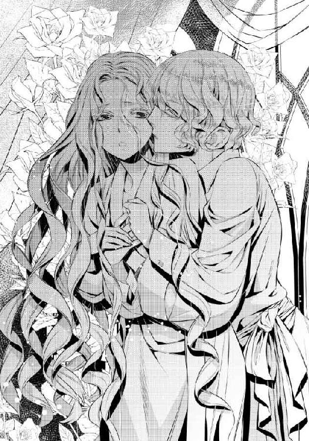
エドアルドはリュシアの重みを難なく受け止める。
「......ほら......ねえ、リュシア。身体......温まってきただろ......？」
耳元で囁くように言われて、リュシアは背筋をぞくぞくと震わせる。エドアルドの言う通り、身体に熱は溜まり続けていた。
だがこの熱は、身体を温めるだけでは終わらない。
リュシアを身悶えさせ、下腹部に初めて知る疼きを与えてくる。熱が溜まり続けて、リュシアは小さく喘いだ。
「......あ、ああ......む、胸......もう、やめ、て......」
「......リュシア、可愛い......。その声、もっと聞かせて」
大きな掌が、胸の谷間を下って臍を丸く撫でる。エドアルドの唇が我慢できないというようにリュシアの頬に押しつけられた。
何度も啄まれたあと、軽く開いた唇の隙間から覗いた舌が、そっと舐めてくる。ぬめった舌の感触にもビクリと反応してしまった。
その間に、エドアルドの掌は肌を撫でながらさらに下っていく。下を向いた指先がそっと淡い茂みに触れて──リュシアは思わず息を呑んだ。
「......エ、エドアルド殿下......」
その『先』を感じ取って、リュシアの呼び声は小さく震えてしまっていた。......エドアルドの身体が強張り、動きを止める。
改めて間近から見つめてくるエドアルドの緑の瞳には、一瞬おののいてしまいそうな凶暴な光があった。
（まるで私を頭から食べ尽くしてしまうかのような）
エドアルドは大きく息をつく。長く吐き出されるにつれて、緑の瞳に宿っていた荒々しい光が消えていった。
エドアルドはリュシアの肌から手を離すと、乱れたバスローブの襟元を整えてくれた。甘い攻めから解放されて、リュシアは知らずに安堵の吐息をつく。
......あのままエドアルドに身を任せ続けていたら、どうなっていたのかわからなくて怖かった。
「ごめんね、リュシア。こういうのは騙し討ちみたいだよね」
エドアルドが苦笑する。よく意味がわからなくて、リュシアは口ごもった。
そんなリュシアの顔に、エドアルドは苦笑をますます強める。そして前髪に触れるだけの柔らかいくちづけをくれた。
「ごめんね」
よくわからないが、ここで自分が言わなければならないことは、一つしかないように思えた。
「......あ、あの......大丈夫、です......」
「よかった。......そろそろ準備ができたみたいだよ」
エドアルドがリュシアの身体から手を離す。そのタイミングを見計らったかのように、バスルームの扉が開いた。
「リュシアさま、お待たせして申し訳ありませんでした！」
年若い召使いの勢いのある謝罪に、リュシアは危うく跳び上がりそうになる。エドアルドはそんな様子に思わず笑みをこぼしながらもリュシアの肩をそっと押して、彼女の方へと促した。
「温まっておいで。俺も着替えてくるから」
先程の淫らなやり取りなど初めからなかったかのような態度だ。今はそれが一番いいとわかってはいるのだが、なんだか残念な気持ちもしてしまう。
（......残念!? そ、そんなことあるわけが......!!）
あの続きを、もっとしてほしかったなんて。
リュシアはとんでもない思いを振り払おうと、ぶんぶんと勢いよく首を振った。
花祭りに参加するための衣装を、エドアルドはいくつか用意してくれていた。リュシアの招待を考えていた頃から準備してくれていたとのことだ。
可愛らしいデザインから大人っぽいものまで、リュシアが選べるように揃えられている。同時にどれもリュシアに似合うデザインで、リザが感嘆の叫びを上げたほどだ。
「まあ！ まあまあまあ！ どうしてエドアルド殿下はこんなにリュシアさまにお似合いのドレスを用意できたんでしょう!?」
「き、きっとお兄さまから私のことをいろいろと聞いていたんだと......思うわ」
当たり障りがない予想をしながらも、リュシアは心の奥がくすぐったくなる。エドアルドが自分にしてくれることは、まるでリュシアを好きだと伝えているように思えてしまう。
（......そ、そんなことあるわけが......!! だ、だいたい、まだ会って数日しか経っていないのに......!!）
火照った顔をリザに見られたくなくて、リュシアは慌てて言った。
「エドアルド殿下に、お礼を言ってくるわ！」
「は、はい。いってらっしゃいませ」
とにもかくにもこの火照った顔をなんとかしたい。と思いながら、エドアルドを捜して──見慣れない場所へとたどり着いた。
芝の生えていない均した地面が、丸く切り取られたかのように広がっている。まるでコロセウムを彷彿とさせた。その円の中にエドアルドとエルザ領主がいて、剣を斬り結んでいる。
研ぎ澄まされた鋼が、時には激しく、時には鋭く、打ち合わされる。甲高い音は、こうして見ているとまるで何かの音楽のようにも聞こえた。
張りつめた空気の中、リュシアは魅入られたようにエドアルドの動きを追いかけてしまう。
エルザ領主はかなりの剣の使い手のようで、素人のリュシアが見ても強いのだろうと思えた。だがエドアルドにも隙はなく、油断すればあっという間に首をかき切りそうな気迫があった。
領主の顔に余裕がないところを見れば、二人が手を抜いていないことは明らかだ。エドアルドも彼に負けず劣らずの剣の使い手だということだろう。
（......すごいわ......!!）
新たに知ったエドアルドの一面に、胸がドキドキしてしまう。思わず胸元を片手で押さえてしまって、リュシアははっとした。
これでは、エドアルドにときめいているようではないか！
（違うわ！ 私には王子さまがいるんだから!!）
思わず必死になって自分に言い聞かせたとき、リュシアの耳に潜めた声が届いた。
「──ねえ、ちょっと。そこにずっと立っていられると、エドの稽古の邪魔になると思うのだけど」
そんなこともわからないのかと続けられそうな、苛立ちを含んだ声だ。ビクリと身を震わせて見返せば、リュシアから少し離れた茂みの陰に身を潜めるようにしゃがみ込んでいる若い娘がいた。
歳はリュシアとさほど変わらないように見える。ただ、リュシアが可愛らしいとよく言われるのに反して、彼女は確実に女の妖艶さを持っていた。濃茶のまっすぐな髪の彼女は、リュシアから見ても文句がつけられない美女だった。
初対面の相手にすぐさま萎縮してしまい、リュシアは何を言えばいいのかわからなくなってしまう。ましてや、いきなりのことだった。
「......え、え......っ？」
「......もうっ。鈍い子ね！」
潜めた声が、リュシアに容赦のない一撃を与える。確かにその通りだと自覚はあるのだが、こうもハッキリキッパリ言われるとやはりショックだ。リュシアはますます縮こまってしまう。
彼女はリュシアの腕を掴むと力任せに引っ張り、自分の隣に隠した。
あまりに勢いがついていたため身体のバランスを崩し、茂みの中に頭を突っ込んでしまう。
「......っ！」
稽古の邪魔をしないよう、何とか上がりそうになった悲鳴は呑み込んだ。だが案の定、髪が枝葉に絡んでしまう。
リュシアは小さくため息をつき、指先で髪をほどき始めた。それがかさかさと茂みをかすかに揺らし、葉ずれの音をさせて、彼女の眦をさらにつり上げさせる。
「あなた......私の言葉を理解できないの？ 静かにしなさいって言ったのだけど」
「ご、ごめんなさい。髪が」
なんとかそれだけ言うと、彼女はようやくリュシアの状態に気づいてくれたようだ。大きなため息をついたあと、こちらに手を伸ばしてくる。
髪をほどく手伝いをしてくれるのかと、リュシアは顔を輝かせる。だが彼女は無造作にリュシアの髪を掴むと、そのままむしり取ろうとした。
「面倒だわ。こうしましょう」
「......っ!!」
頭皮がひきつられる痛みを覚悟して、リュシアは身を強張らせる。だがそれよりも早く、頭上からエドアルドの声が降ってきた。
「こんなところで何してるの、リュシア」
パッと顔を上げれば、茂みの上からこちらを覗き込んでいるエドアルドの笑顔があった。片手がこちらに伸ばされていて、髪をむしり取ろうとした彼女の手を押さえている。
エドアルドは笑顔だったが、怒りを浮かべた鋭い瞳を彼女に向けていた。......初対面の感じは受けない。知り合いなのだろうか？
「アイリーン、こんなところでこそこそと何をしているのかな」
「あら、ひどい言い草ね。稽古の邪魔をしないように、隠れていただけじゃないの」
「こそこそする必要はないね。こんなことで気が散るんだったら、俺はその程度ってことだよ」
さらりと返された言葉に、彼女はわざとらしく肩を落とす。......リュシアは心の中に奇妙なさざ波を覚えてしまう。
エドアルドと彼女のやり取りは、ずいぶん親しげだ。
（もしかして......エドアルド殿下の、恋人......？）
「エド、あのね。親しき仲にも礼儀ありって言葉、知ってる？ 私はエドに気を遣ったのよ。なのに感謝の気持ちはないわけ？」
彼女が怒るのも無理はない。なのにエドアルドはひたすらリュシアの髪をほどくことに集中している。
それが嬉しいのに、心のざわめきはさらに強くなった。
（だ、だってこの人、エドアルド殿下のことを、エドって......!!）
愛称を呼べるほどに、アイリーンと呼ばれた彼女はエドアルドと親しいのだ。だからと言って、どうしてこれほどまでに衝撃を受けるのだろうか。
なんだか瞳の奥がちくちくとして、泣き出してしまいそうになる。そんな顔をエドアルドに見せたくなくて、リュシアは髪をほどいてくれる彼の優しい指の動きをじっと見つめた。
（恋人だとしても、おかしくないわ。エドアルド殿下はとても素敵な方で、女性にも人気だとわかるもの......）
そうしているうちに、エルザ領主がやってくる。彼はアイリーンの姿を認めると、形式に則って片膝を落とし、頭を下げた。アイリーンは当然のように片手を差し出し、エルザ領主はその甲にそっと唇を押しつけた。
「ご無沙汰しております、アイリーンさま」
「ええ、ごきげんよう。エドアルドがこちらの花祭りにコルディーナ国のリュシア姫と参観すると聞いたから、私も来てみたの。だってリュシア姫を私も見てみたかったんだもの！ こちらへの来国が、彼女の初めての外交でしょう!? その栄誉をもらえたんだから、素晴らしいと思って」
天真爛漫な言葉に、エルザ領主は続ける言葉を失ってしまった。......どうやら見たいと言っている当人がすぐ傍にいることに、アイリーンはまったく気づいていないらしい。
（彼女が私に気づけないのも仕方ないわ。私と彼女じゃ、華やかさが格段に違うもの。彼女の方が、よほど王女らしいわ......）
そう思うからこそ、アイリーンの遠慮のない物言いに怒りは覚えない。代わりに、もっと彼女のように闊達に堂々としなければと自らを叱責してしまうリュシアだ。
「......ほら、取れたよ」
エドアルドの手が、離れる。リュシアははっとして顔を上げ、慌てて礼を言った。
「あ、あ......ありが、とう......」
エドアルドは茂み越しに両腕を伸ばすと、リュシアの脇下に掌を差し入れた。
えっ、と驚く間もなくふわりと抱き上げられて茂みから引き出され、隣に下ろされた。自分の重みを何の苦もなく動かせる力の強さに、男の人だと改めて感じてどきどきしてしまう。
エドアルドが軽く眉根を寄せた。
「リュシア、ちゃんと食べてる？ なんだかすごく軽くてびっくりしたんだけど」
「......食......食べてる、わ......」
「だったらいいんだけど。......そうだ。あとで美味しいお菓子を持っていってあげるよ。一緒に食べよう？」
「......えっと......」
エドアルドの提案はとても嬉しいものだが、こちらを見直したアイリーンの濃茶の瞳が射抜くような厳しさを含んでいた。
「......ねえ、エド。その子、何？」
リュシアを単なる館に仕える使用人程度にしか見ていないのだろう。身分も低く地味な印象の娘がエドアルドの傍にいるのが気に入らなくても、仕方がない。
「......あ......あの、私、は......」
（......ああ、ほら。ちゃんと自己紹介できなくちゃ......!!）
そうは思うのだが、アイリーンの強い瞳に萎縮してしまい、うまく言葉が出てこない。
一国の王女がこんな状態ではいけない。何とかしなければ、とリュシアはおまじないを口にしようとする。
それよりも少し早く、エドアルドが答えた。
「うん、可愛い子でしょ？ 彼女はコルディーナ国のリュシア王女だよ」
「......え？」
アイリーンの瞳が、こぼれ落ちそうなほどに大きく見開かれた。
「......え......本当に？ この子が？ リュシア王女？」
リュシアはハッとしてワンピースのスカートを摘み、腰を落として、王女としての礼をする。
「初めまして。コルディーナ国のリュシアです」
その仕草はただの使用人からはほど遠く洗練され、アイリーンを信用させたようだった。
「も、申し訳ございません!! 大変な無礼を......!!」
アイリーンが慌てて両膝を落として跪き、頭を垂れた。身分相当の礼儀をすぐさま守ってくれた彼女に、リュシアは慌てて首を振る。
「ご、ごめんなさい......あの、どうぞお気になさらないで。私が王女らしくないから......」
「そんなことはないから大丈夫だよ。アイリーンがキツイだけだから」
「まあ、エド！ 姫の前でひどいわ！」
エドアルドの身も蓋もない言い方に、アイリーンがすぐさま顔を上げてキッと睨みつける。
己の感情を素直に表すアイリーンを、リュシアは羨ましく思えてしまった。......自分ももっと素直に話せたら、今の二人のようにエドアルドと生き生きとした会話が交わせるかもしれないのに。
エドアルドはこれまで少し意地悪なところを見せていても、優しい。だがそれは、リュシアへの不満を隠しているのではないのだろうか。
（殿下は私のこと、つまらなくないのかしら......）
悪い方向に考えてしまうのは、いけないことだ。リュシアは心の中で首を振る。
「あの......本当に申し訳ございません、リュシアさま。私の勘違いで使用人扱いしてしまって」
知らずに俯き加減になってしまったからか、アイリーンが再び謝罪をしてくれる。
「だ、大丈夫......気にしていないから」
「でも」
「本当に、大丈夫。あ、あなたの言うことも......その、ある意味正しいと、思うから......直したいと思って、が、頑張ってるつもりなんだけど、うまくいっていないの」
にこ......っ、とリュシアは小さく笑った。
アイリーンを責めて謝らせたいわけではない。ただ自分の駄目な部分を改めて実感して、気持ちが落ち込んでしまっているだけだ。決して、彼女のせいではない。
アイリーンは少し驚いたようにリュシアを見つめたあと、小さく息をついた。
「今時珍しいほどの可愛らしいお方ですね」
「......あ......ありが......とう......」
（なんだか逆に捉えられ......いいえ、駄目駄目。証拠もなく人を疑うのは、よくないわ）
穿った見方をしてしまいそうになった自分を戒めたとき、エドアルドへ声がかかった。
現れた黒髪の初老の男は、アイリーンと同じ面影を持っていた。
「......これはこれは、殿下！ お久しぶりでございます!!」
何やらひどく感激したように言って、男はすぐさまエドアルドの前に走り寄った。そのまま膝を折って頭を下げ、矢継ぎ早に続ける。
「このようなところでお会いできるとは、何とも嬉しいことです。ですがせっかくの素晴らしい機会を逃してしまって、ひどく残念でもあります。殿下の稽古の様子を見逃してしまうとは......!!」
（な、なんなのかし、ら......）
男の言葉は確かにエドアルドを誉め称えるものなのだが、あまりにもあからさますぎて気持ちが白けてしまう。リュシアですらこうなのだから、当人はひどく冷めた目で男を見つめていた。
「......うん、まあそうだね。クロード公爵だったらそう言ってくれるだろうね。でも俺の剣技なんてそんな大したことないんだよ」
「何をおっしゃいます!! 殿下の剣技は素晴らしいです。剣のひと振りで十人は一度に倒せるものですよ!!」
エドアルドは肩を落とし、大きくため息をついた。誰が見てもわかるほどうんざりと思っている仕草なのに、クロード公爵はまるで気づいていない。
そのとき、アイリーンが口を開いた。
「お父さま、そんなおべっかを使ってエドに取り入ろうとしても無駄だと、何度も進言していますけど」
この男がアイリーンの父親だということがわかると同時に、その父親に対してのずいぶんと痛烈な皮肉に、リュシアは仰天した。
クロード公爵は怒りで顔を真っ赤にしながら、娘を睨みつけた。
「アイリーン!! お前、殿下の前でなんてことを......!! 私はおべっかなど使ってはいないぞ!!」
「見え透いた嘘ってみっともないと思いましてよ、お父さま。どれほど足掻いたところでお父さまの地位は今以上になることはありませんと、私はいつもご指摘していますが？」
容赦なく切り返されて、クロード公爵は息を詰める。ここに至ってようやくエドアルドの冷めた目にも気づき、彼は場を取りなすように小さく咳払いした。
「......ところで殿下。そちらのご令嬢は？」
「そうだわ、お父さま。お父さまもちゃんとご挨拶なさって。彼女はコルディーナ国のリュシア王女さまよ。花祭りを見物に来てくださったの」
エドアルドが、アイリーンを凄まじい勢いで睨みつける。リュシアがいつもドキドキしてしまう緑眼が、今は震え上がりそうなほどに鋭く尖っていた。
（エドアルドさま......？）
「......これは......!! ご挨拶が遅れて申し訳ございません!!」
クロード公爵が即座にリュシアの片手を取って、片膝をつく。
貴族としての完璧な礼にリュシアはハッと我に返り、慌てて王女としての儀礼的な笑みを浮かべた。
「わ......私の方こそ、ご挨拶が遅れて......す、すみません......」
知らない相手と話す緊張が、リュシアの言葉を途切れがちなものにさせる。
クロード公爵は一瞬探るようにリュシアを見つめたあと──その瞳を、にんまりと細めた。リュシアの背筋に、ゾクリと寒気に似た感覚が生まれた。
この感覚は、かつて一度だけ味わったことがある。けれどあんなものは一度で充分だ。
（私を、『利用できる獲物』として見る目）
「そうですか、花祭りに......殿下もお人が悪い。リュシアさまが来られるのでしたら、私が腕によりをかけて歓迎の準備を致しましたのに」
「あ、あの......離し、て......」
あの恐怖にも似た感覚が、じわりと胸の内に広がってくる。それはあっという間に全身に広がって、リュシアの膝がガクガクと震えた。
クロード公爵は不思議そうに小首を傾げて、リュシアの手をきゅっと握りしめた。
「姫？ どうかされましたか？」
リュシアの身体が震えているがために、倒れないようにしてくれたのだろう。だがリュシアにとって、それは逆効果だった。
「......離し、て......!!」
掠れた声で悲鳴のように叫んでしまうと同時に、リュシアはクロード公爵の手を強引に払いのけた。失礼なことをしているとわかっても止められず、リュシアはそのままエドアルドの背中に隠れる。
「......リュシア？ どうしたの？」
心配そうに問いかけながら、エドアルドの腕はリュシアに回されて優しく抱き寄せている。
ぬくもりを感じてほっと安心したものの、身体の震えは消えない。エドアルドは軽く眉根を寄せると、リュシアを屋敷へと促した。
「部屋に戻ろうか、リュシア」
「......え、ええ......」
「あ、あの、リュシア姫......？」
クロードが戸惑いも露わに呼びかけてくる。リュシアはびくんと身を震わせると、再びエドアルドの身体の陰に隠れた。
「ご、ごめんなさい。何でもないの......」
「しかし、何か私が失礼を」
「──公爵。リュシアは何でもないって言ってるんだから、しつこいよ。じゃあね」
アイリーンへは言葉もなくちらりと一瞥を与えただけで、エドアルドは屋敷の方へと歩き出す。残されたエルザ領主が、クロード公爵とアイリーンの相手を始めた。
自分のせいで、エルザ領主にも気苦労をかけてしまっている。
「......ごめんなさい......」
消え入りそうな声で、リュシアは言う。エドアルドは何も言わず、ただリュシアの肩を抱いて屋敷へと向かい続けた。
その沈黙がエドアルドの怒りを表しているように思えてしまって、リュシアは身を硬く縮めてしまう。
（エドアルド殿下が怒っても仕方ないわ。公爵に、それだけ失礼なことをしてしまったもの）
エドアルドは無言のまま、リュシアを部屋へと連れていく。送り届けてそのまま帰るのかと思ったが、部屋の奧まで入ってくる。
窓拭きをしていたリザがこちらに気づき、慌てて迎えの挨拶をした。
「お帰りなさいませ、リュシアさま。エドアルドさまもご一緒に、どうかなさいましたか？」
「うん、偶然会ってね。ところでリザ、温かいお茶を用意してくれるかな。ミルクをたっぷり入れて」
「......は？ はい......」
急にそんな命を与えられて、リザは戸惑いを隠せない。だが優秀な召使いとしてリュシアの傍付きになっている彼女は、余計な問いかけを一切せず、すぐに部屋を出ていった。
エドアルドはリュシアをベランダのテーブルセットに座らせる。わけがわからないままリュシアが腰を落ち着かせると、ティーセットをカートに載せたリザが戻ってきた。
給仕をしようとするリザを止めて退室させると、自らカップに茶を注いでくれる。
ミルクをたっぷり入れて、砂糖は二つ。
「はい、どうぞ」
「......あり......がとう......」
ソーサーごと差し出されたカップを受け取り、リュシアは茶を口に含む。柔らかな甘さが心の強張りをゆっくりと解きほぐしてくれるようで、思わず深く息をついてしまっていた。
エドアルドはリュシアの向かいに腰を下ろして、こちらの様子を見守っている。茶とエドアルドの優しい瞳のおかげで、心はだいぶ落ち着いた。
もう一口飲んでから、リュシアは言う。
「......あの......クロード公爵に失礼なことをしてしまって......ごめん、なさい......」
「ああ、大丈夫。あの程度で落ち込むようなやわな心はしてないよ、あの人は」
軽く肩を竦めながら、エドアルドは呆れたように答えた。
ずいぶん辛辣な言い方だ。もしかして、エドアルドはクロード公爵のことをあまり快く思っていないのかもしれない。
「むしろ、リュシアをあわよくば利用できる相手、とか思っていそうだからね」
「......っ」
自分が感じた嫌悪感をあっさりと看破されて、カップを落としてしまいそうになる。かしゃん、と軽い音を立ててカップの底がソーサーに落ち、熱い雫が手の甲に跳ねた。
「......あつ......っ！」
「リュシア！」
反射的に胸元に引っ込めようとしたその手を、エドアルドが掴んだ。突然強い力で手を引き寄せられて、リュシアは驚く。
エドアルドはリュシアの火傷の具合を確認し、ほっと息をついた。
「よかった、大したことはなさそうだね。でも、消毒」
「......っ」
リュシアが何か言うよりも早く、エドアルドはほんのり赤くなってしまった部分にそっと唇を押しつけた。舌先が優しくいたわるように赤みを舐めてきて、リュシアは思わずぎゅっと目を閉じてしまう。
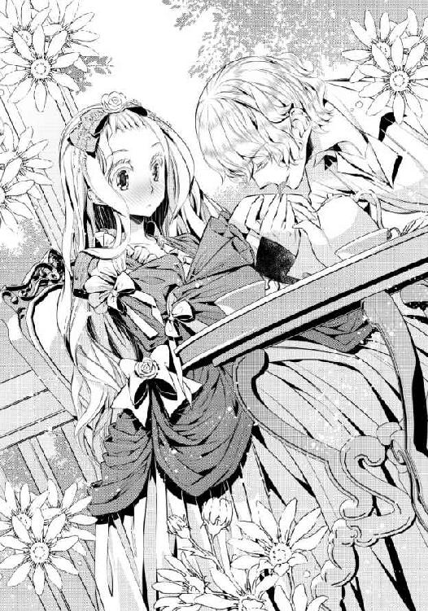
エドアルドはしばし舌先でリュシアの傷を舐めたあと顔を上げ、肌を確認して安堵の息をついた。
「うん、これで大丈夫。痛くない？」
「......え、ええ......」
「まったく......リュシアからは目が離せないなあ」
「ご、ごめんなさい......」
駄目な子だと言われているようで、リュシアは身を縮めてしまう。エドアルドは困ったように苦笑した。
「リュシアが駄目な子だって言ってるわけじゃないよ？ 目が離せないから、俺の傍から離れちゃ駄目だよって言ってるだけ」
「でも......私は王女として、やっぱり駄目だと思うわ......」
リュシアの指が、小さく震える。それをエドアルドに気づかれないよう、ぎゅっと強く握り込んだ。
「あ、あのくらい、もっと簡単にあしらえるようにならないと......いけないのに......こ、怖くて......」
「どうして怖いの？ 前に、クロードみたいな奴に何かされた？」
エドアルドの片手が伸びて、握り拳に重ねられた。指先が宥めるように撫でてくる。
「......え、ええ......」
リュシアは息を呑むようにして、小さく頷いた。あまり思い出したくない過去だが、エドアルドに聞いてもらえば少しは落ち着きを取り戻せそうな気がした。
（......私......彼を、もうこんなにも信頼してる......？）
「コルディーナ国はさほど権力争いはないのだけど......私の大伯父が珍しく、そういう人だったの。両親を脅すために誘拐まがいのことを、されて......」
一族の中でも珍しく野心溢れる大伯父は、当時のカーラたちの怒りを買い、コルディーナ国辺境地方領主として飛ばされた。彼も今では寿命を迎えて他界し、リュシアを利用しようとする者はいない。
話しているうちに震えを増したリュシアの手を、エドアルドは両掌で包み込む。ぬくもりをさらに強く感じて、不思議と心があたたかくなった。
「......クロードを見ていたら、そのときのことを思い出しちゃった？」
小さく頷くと、エドアルドは痛ましげにリュシアを見つめた。
「君はとても繊細なんだね」
リュシアは慌てて首を振った。それは、ずいぶんと好意的な解釈だ。実際には叱られるべきことだろう。
「違うわ。私のは単に......よ、弱い、だけ......。王女として国民のことを考えるなら、もっと強くなって、うまく立ち回らなくちゃいけないと思うの。た、例えば......」
「アイリーンみたいに？」
続けようとした名を先に口にされ、リュシアはしょんぼりする。やはりエドアルドも、アイリーンの利発さと強さを評価しているのだ。
（それに比べて私は全然駄目だわ......）
カーラのおまじないがなければ相変わらず緊張して、子供以外の見知らぬ相手とうまく話すことすらできない。自分なりに努力をして、少しは進歩しているのだが、その歩みはリュシア自身もがっかりしてしまうほどに遅かった。
「......別に焦らなくてもいいと思うけど」
リュシアの手を握ったままで、エドアルドが言う。その口調はずいぶんと軽く、リュシアが呆気に取られてしまうほどだった。
「い......いいわけないわ！ こ、こんな私じゃ、お兄さまやお父さまのお力にもなれないもの。そ、それじゃあ、私はコルディーナ国の王女として、何の役にも......」
「うん、そうかもしれないけど。あのね、人に個性があるように、国のためにどう役立つかって方法もいろいろだと俺は思うよ。リュシアが何をお手本にしてるのかはわからないけど、頑張ってるのにうまくいってないってことは、そのお手本が君に合ってないってことなんじゃないかな」
「......合って、ない......？」
そんな考え方に触れたのは、初めてだ。風が心の中を走り抜けて、鬱屈とした気持ちが急に晴れる。
リュシアがエドアルドを茫然と見返すと、彼は温かい笑みを浮かべた。
「それに、あまり落ち込むことはないよ。少なくともリュシアは、一人は絶対に救ってくれてるから」
まったく覚えがない。
「だ、誰の、こと......？」
「うん、俺の心を癒してもらってるんだよ。リュシアはとっても素直で可愛くて、一緒にいて気持ちが楽になるんだよね」
「わ、私......何もしてない、のに......？」
「そこにいるだけでいいって存在もあるってことだよ。リュシアはそういうことももっと知らないと駄目だなあ」
世間知らずと思われてしまったのだろうかと、リュシアは頬を赤くする。だが、エドアルドの予想外の誉め言葉が、リュシアの心に勇気をくれた。
（私は、駄目なところばかりじゃない......）
もしかしたら、エドアルドの優しさが言わせたものかもしれない。だが今は、それを信じたかった。
「......じゃ、じゃあ......あの......私が知らないことを、教えてくれる？」
「......」
エドアルドの動きがピタリと止まる。リュシアをまじまじと見つめたあと、どこか疲れたように深く息をついた。
「もう......どうしてやろうかな、君は」
「......ごめんなさい。あ、あの、時間がなかったら無理にとは......」
「そうじゃないんだけどね。まあそれがリュシアなんだから仕方ないんだけど......」
エドアルドがなぜそんなに困っているのかがわからず、リュシアはおどおどしてしまう。エドアルドはリュシアから手を離しながら、気を取り直したように笑いかけた。
「うん、わかったよ。俺が教えられることは、国に帰るまでにたくさん教えてあげるね」
（国に帰るまで......）
花祭りが終われば、自国に帰る。それは当たり前のことで、ここに来るときにもう決まっていたというのに、リュシアは今初めてそのことに気づいたかのような衝撃を受けた。
（......国に帰ったら、もうエドアルド殿下にはお会いできない......）
なんだかそれがひどく寂しくて、リュシアは俯いてしまう。エドアルドがその沈んだ様子に気づかないわけがなく、すぐさま心配そうに顔を覗き込んできた。
「リュシア、どうかした？」
「え......あっ、い、いいえ！ あの......わざわざ花祭り用のドレスをありがとう」
当初の目的を思い出し、リュシアは改めて礼を言う。
「それを言いにわざわざ俺を探してくれたわけ？ 嬉しいなぁ。いろいろなタイプのデザインを用意してみたけど、気に入ったのはあった？」
「ま、まだ、ちゃんとは見ていないの......とにかく先にお礼を言いたくて」
リュシアの言葉にエドアルドはとても嬉しそうに笑う。
どうしてそんな笑みを向けられるのかはわからなかったが、その笑顔を見ると妙にドキドキしてしまって困るのだ。憧れの王子さまを忘れて浮気しているようではないか。
（ち、違うわ！ 私が好きなのは、『王子さま』!!）
「まずもらったことにお礼を言いに来てくれるなんて。ほんと、リュシアは可愛い。和むよ」
「あ、あんまり誉めないで......ふ、普通のことしか、してない、から」
「うん、そうだね。でも俺の周りは、普通のことが当たり前にできない子ばっかりだったからね」
......それは一体どういうことだろうか。だがリュシアが詳しく聞こうとする前にエドアルドは立ち上がる。
「もう、気持ちも落ち着いたみたいだね」
「......あ......っ」
今さらながらにエドアルドの気遣いを知り、リュシアの鼓動はますます速くなる。だから、エドアルドが当然のようにリュシアと手をつないで歩き出しても、抵抗できなかった。
（私が好きなのは、『王子さま』なのに......どうしてこんなにドキドキするの......？）
☆☆☆
花祭りは二日間にわたって催されるという。
花で飾り立てられた荷車が列を連ねて領地の中心地を練り歩き、娘たちは花をあしらったドレスで着飾る。自分たちの収入の範囲で精一杯のお洒落をしている彼女たちは、生きる喜びを知っているかのように、素朴で優しい美しさを持って見る者を楽しませ、対して男性は、帽子に花をあしらっている。大人と同じように着飾った子供たちが、手籠にたっぶり摘んだ花を道道に投げながら礼拝堂へ向かうセレモニーもあった。
花の女神が降臨したと言われる丘に礼拝堂が建てられていて、祭りを見物するための貴賓席が設けられている。最終的に荷車やセレモニーの行列もここに戻ってくることと、礼拝堂の花飾りが一番豪華なこともあるからだが──リュシアは少々残念な気持ちを隠しきれない。
見晴らしのいい場所だからこそ祭りの様子がよく見える。自分も実際に参加したらずいぶんと楽しいだろう。礼拝堂に設けられた席で臨むだけでは、花祭りの楽しさは半減してしまっているように思えてならなかった。
だが、だからといって楽しくないわけではない。エドアルドが用意してくれたドレスはどれも素敵で、リュシアは昨夜もずいぶんと悩んで着るものを決めた。
選んだのは、白いドレスに白い小花が散っているものだ。ドレス生地にはチュールが重ねてあり、スカート部分にはそれが三重に重なっている。チュール生地には爪の先ほどの白い小花が不規則に縫いつけられていて、祝福の花が頭上から降ってきたかのようだった。
リザが整えてくれた髪は、高い位置でまとめて、毛先をカールされている。こちらもスカートと同じように、白い小花をあしらったヘアピンを不規則に挿していた。
露わになった首筋には、銀鎖と真珠で小花をつないだネックレスがある。下手な飾りがない分、着る者を選ぶドレスだったが、リュシアはまったく問題なく着こなしていた。
エスコート役を進んで申し出てくれたエドアルドは、リュシアの姿を見て、ずいぶんと誉めてくれた。
そんなエドアルドも白と銀糸を基調とした礼服に身を包んでいたが、一分の隙もない着こなしと端正な面立ちも相まって、どこを見たらいいのかわからないほどにドキドキしてしまう。それは礼拝堂の席についても変わらず、エドアルドの仕草のいちいちにときめいてしまって非常に困っていた。
礼拝堂にはアイリーンはもちろんのこと、エルザ領の主だった貴族たちが揃っていた。片手ほどの人数だったが彼らは何故か全員妻ではなく娘をパートナーにしていて、彼女たちの纏うドレスのきらびやかさが眩しいくらいだった。
エルザ領主には娘がいないらしく、彼のパートナーは淡い紫のドレスを着て、控えめに隣に座っている。リュシアにはもちろんのこと、貴賓客にいろいろと気配りを忘れない。
だが、娘たちの方には、何やらただならぬ空気がまとわりついているような気がする。互いの様子をうかがいながら、同時にこちらにも──いや、正しくはエドアルドをうかがっている。雰囲気から何となくエドアルドと話をしたいような印象を受けて、リュシアは勇気をかき集めてから彼女たちに話題を振ってみた。
「あ、あの......」
「......っ！」
だがたったそれだけの言葉にも娘たちは敏感に反応し、なぜか敵でも見るような瞳でリュシアを睨みつけてくる。蛇に睨まれた蛙はもしかしたらこんな気持ちなのかもしれないと思ってしまう眼光だ。
（こ、これは......そうは思いたくないけど......）
何をしたつもりもないが、どうやら自分は彼女たちに嫌われているらしい。せっかく集めた勇気もあっという間に萎んでしまい、リュシアはそれ以上何も言えなくなってしまった。
そんな中でいつもと変わらず、むしろ堂々と花祭りを見物しているのはアイリーンだ。この何とも言えない微妙な空気の中で、まったく臆していないのはすごい。リュシアは尊敬してしまう。
リュシアの眼差しに気づいたのか、アイリーンがこちらに目を向けてきた。視線が合うと、にっこりと笑いかけてくる。その笑顔は自信に満ちて魅力的で、リュシアは思わず見惚れてしまった。
その唇が、小さく動く。唇の動きを追いかけて、リュシアは軽く息を詰めた。
（気、を、つ、け、て......気をつけて？ な、何に!?）
警告の意味がわからず、リュシアの身体は小さく震えてしまう。アイリーンはそれを見て何やら楽しげに笑い、目の前に用意されている食事に再び手をつけ始めた。
アイリーンがせっかく警告してくれたのに、その意味がわからない。彼女の親切を無駄にしてしまっているようで申し訳なく──だからリュシアは隣のエドアルドにそっと問いかけた。
「あの......殿下......？」
「うん、何？」
自然と声を潜めてしまったために、エドアルドはリュシアの方に身を傾けてくる。互いの距離が近くなると、彼女たちの視線がさらに強まった。
思わずビクついてしまいながら、リュシアはさらに声を落として言う。
「あの......私、何か失礼なことをしてしまったかしら......」
「いや、何もしてないけど？ でも、子供たちには人気だね」
シュリシアの背後には大きめの籠があり、花が溢れている。女神の使徒である花の妖精に扮した子供たちからもらったものだ。
花の妖精が花を渡すのは、祝福の意だ。受け取って飾ったり押し花にしたりして大事に楽しむと、女神の祝福が与えられるという。
礼拝堂を訪れる妖精たちは、なぜかやたらとリュシアのところにやってきた。籠の中を空にするまで配るのが妖精の役目で、礼拝堂の周辺を彼らは練り歩くのだが──同じ子供が何名か、何度もリュシアのところにやってくるのだ。
おかげでリュシアのテーブルはあっという間に花だらけになり、見かねたエルザ領主夫人が背後に新たな大きめの籠を用意してくれたのだ。
今また妖精に扮した子供たちが来て花を手渡され、リュシアは笑顔でそれを受け取った。
「どうぞ、リュシアさま」
「ありがとう。とても綺麗よ」
リュシアの言葉に嬉しそうに笑って、子供たちは離れていく。だが、同席している他の娘たちのところには行かなかった。
「......ど、どうしてなのかしら......」
「子供は敏感だからね。空気が悪いところには近づかないんだと思うよ」
「悪い空気なんて......」
「気づいているのに気づかないふりをするのは、いけないね。あの子たちが君を睨んでいるのが何よりの証拠だよ。......彼女たちは、あわよくば俺の恋人になろうとしているみたいだからさ」
「......ええっ!?」
驚きの高い声を上げてしまい、彼女たちのたしなめる視線が全身に突き刺さった。その圧力は凄まじく、リュシアは身を震わせて俯いた。
「彼女たちにとって、君は邪魔なんだよ。俺と仲良くしてるから。自分をアピールしたくても、リュシアが傍にいるとまったく効果がないってわかってるみたいだし。ここで俺の恋人になれれば、まあ、愛人の立場は得られるからよし、って感じなんだろうね。俺には今、特定の相手はいないから」
「そ、それって......恋人がいない、ということ？」
「それもあるけど、婚約者の方かな。今のフレディアス国なら俺は相手を選べる立場だからね。今のうちに愛人の地位を確立しておけば、婚約者よりも強く出れるとでも思ってるんじゃないのかな？ 俺の愛人だったら、結構満足できる権力と金が手に入るし」
何やら衝撃的なことをエドアルドはさらりと言ってくれる。リュシアの家族や周囲とは、真逆の考え方だ。
（権力やお金のために、心を利用するの......？）
それは、おかしい。何よりも、空しくはないのか。
こんなことをごく当たり前のこととして口にできてしまうエドアルドは、そういう日々に慣れてしまっているということなのだろうか。
「あ、あの......エドアルド殿下......わ、私がこんなことを言うのは失礼かもしれないんですけど......」
嫌われたらどうしようと思うと、言葉が詰まる。思わずいつものようにカーラのおまじないをしようとして、しかしリュシアはやめた。......これまでのエドアルドとのやり取りを思い返せば、彼が真摯に向き合う者をないがしろにすることはないと、わかる。
リュシアは小さく息を呑むと、改めて口を開いた。
「も、もし、立場が大丈夫なら......こ、心を通じ合わせたお相手と結ばれるのが一番いいと、思うの。人生を長く一緒に過ごす相手なんだもの。好きな人となるべく結ばれるべきだと......思うわ」
「......」
エドアルドからの答えはない。
やはり彼の気分を害してしまう生意気な言葉だったのだろうか。リュシアは肩を縮めて俯いてしまう。
しばしの沈黙のあと、エドアルドが納得した声で頷いた。
「そうだね。本当ならば、君の言う通りだよ」
リュシアが隣を見れば、エドアルドは笑っている。
「......俺の周囲って彼女たちのような子ばかりだからね。誰かを好きになるっていう正しい気持ちを忘れてたのかもしれない。思い出させてくれて、ありがとう、リュシア」
リュシアの頬にも、満面の笑みが浮かぶ。彼女たちの視線の威力が一気に増して、リュシアは強く身震いした。
「......あれ、少し寒い？」
「い、いえ、そういうわけではなく......」
「これはいけないな。一度館に戻った方がいいよ」
「え......っ」
リュシアの返答をまったく無視して、エドアルドはこちらの腕を掴んで立ち上がる。少し強引な仕草に、リュシアは抵抗できない。
「あ、あの、殿下......っ？」
「エルザ領主、リュシアの体調が悪そうなんだ。俺たちはこれで下がらせてもらうよ。構わないよね？」
「もちろんです。リュシアさまがお風邪を召してはなりません。すぐに館への馬車を用意させます」
エルザ領主が答えている間に領主婦人は立ち上がり、召使いたちに指示を与えていた。あれよあれよという間に馬車が用意される。
「エ、エドアルド殿下！ わ、私......だ、大丈夫ですから......!!」
貴賓なのに席を外してしまっては、エルザ領主に迷惑がかかってしまう。リュシアはエドアルドを引き留めようとするが、彼はこちらの話を一切聞かずに馬車へ乗りこみ、館へ戻るよう言いつけた。
館に着くと、エドアルドはリュシアを自分の部屋へ連れていってしまう。
扉を開けると何故かリザがいて、笑顔で出迎えられた。
「お帰りなさいませ、リュシアさま、殿下！」
「......リ、リザ？ どうしてこんなところに？」
「祭りを真の意味で楽しむなら、民と同じ立場にならないとね」
答えたのはエドアルドだ。わけがわからずに茫然としているリュシアを、リザが隣室に連れていく。
「リュシアさまの支度が終わりましたら、殿下のお手伝いをいたしますわ」
「いや、俺は一人で大丈夫だよ」
エドアルドは、反対の部屋に向かってしまう。リザにされるがまま隣室に入ると、リュシアは用意されていた素朴なデザインのワンピースに着替えさせられてしまった。
着心地は悪くないが、この服はあまり生地がいいものではない。初めての感触は、どうも庶民階級の者たちが着る服のように思える。
「リザ、この服は何？」
胸元に花のコサージュを着ければ、花祭りに参加していることになる。整えられていた銀髪も一つに緩くまとめあげた簡単な髪型に変えられた。
「はい、できました。さあ、行きますよ。あ、靴はそちらです」
踵の低い布靴だ。柔らかくて履きやすいが、こんな靴を履くのも初めてだ。
「待、待って、リザ！ こんな格好でエドアルド殿下の前には......」
「大丈夫ですわ。エドアルドさまも同じような格好になっていらっしゃいますから」
（ええ!?）
それは一体どういうことなのかと問いかける間もなく、リュシアは再びエドアルドの部屋に戻る。そこには着替えが終わった彼がいたが、先程の盛装ではなく襟がＶ字になっているシャツと、柔らかな生地で仕立てられたパンツにサスペンダーという格好だった。
さらに加えて、リュシアとお揃いのコサージュがついた前つばのキャップを被っている。......これでは自分もエドアルドも、まるっきりの庶民ではないか。
「ん、そういう格好も可愛いね、でも着なれてないから顔がびっくりしてる」
つんつんと人差し指で頬をつつかれる。エドアルドはどうしてこんなに楽しげなのか。
「エドアルド殿下、ど、どういうこと......？」
「祭りはそもそも庶民のためのものだからね。本当の意味で楽しむのなら、庶民の位置に降りるのが一番だよ。この格好なら、屋台の食事も食べられるしね。リザも一緒に連れていくから大丈夫だよ」
つまりこれは、祭りを楽しませてくれるためのエドアルドの配慮なのか。ようやく合点がいって、リュシアは安堵の息をつく。
だが、お忍びで庶民の中に入るなど、初めてだ。どんなことが起こるのかわからず、どうしても不安になってしまう。
そんなリュシアの手を、エドアルドがふいに掴んだ。きゅ......っ、と強めに握りこまれて、リュシアは驚く。
「怖い？ でも大丈夫だよ。こうして手をつないでいてあげるから」
エドアルドの言葉と掌のぬくもりが、勇気をくれる。リュシアは笑顔で頷いた。
「......わ、わかりました。では、この手は離さないでいます」
「うん、そうして。さあ、行こうか」
リザがリュシアたちのやり取りをニコニコと笑みを浮かべて見守っていたが、その言葉を受け、先導するように先に歩き出した。
「まいりましょう！ まずは名物の花フライを食べますわよー！」
エドアルドからこのいたずらにも似た提案をされてから、リザは自分なりに花祭りの情報を集めていたらしい。エドアルドと一緒になって、リュシアを案内してくれる。......主に美味しい食べ物だということが、リザの性格をよく表していた。
村の中心は食べ物だけに限らず、土産物などの小物の店も出ていて、とても賑わっていた。活気に満ちていて、その空気に触れているだけでこちらも元気になれる。
「ほら、リュシア。これ、可愛いよね？」
エドアルドがリュシアの肩を軽く抱き寄せて、アクセサリー屋の店前に導く。
王族のリュシアたちが身に着けるものとはまったく違う、素朴な装飾品たちだ。リュシアははしゃいだ声を上げる。
「とても丁寧に作られているわ！ 素敵、可愛い......」
リュシアの言葉を耳にして、店主と思われる男が嬉しげに笑う。
「娘さん、いい目をしてんねえ！ これとかかなりの自信作なんだぜ！」
言って男が指し示したのは、小花が三つ連なっている指輪だった。花は一つ一つ丁寧に塗料が塗られている。
エドアルドが指輪を取り上げ、リュシアの指にはめた。......左手の、薬指だ。
鼓動が小さく跳ねる。左手の薬指に指輪をはめる意味を、エドアルドが知らないわけがないように思えるのだが、彼の表情はいつもと変わらない。
リュシアの指にぴったりとはまったそれを、エドアルドは満足げに見つめた。
「うん、とっても可愛い。似合ってる」
「旦那、これは一点物だからよ。気に入ったんだったら今買っておかないと、明日にゃねぇぜ？」
「商売上手だなぁ。うん、いいよ。いくら？」
ズボンのポケットから財布を取り出しながら、エドアルドは問いかける。店主はニヤリと笑って金額を口にしたが、リュシアにはそれが高いのか安いのか、こうした庶民階級の常識がどうなのかはさっぱりわからない。
だが、エドアルドはその金額を聞いて、笑みを深めた。......少々恐ろしい笑みだ。
「店主......人の足元見るのは駄目じゃないの？ 適正価格を口にしなくちゃ。俺をどっかの世間知らずの坊ちゃんだと見てる？」
「違うのかい？」
「違うよ。俺はこちらのお嬢さまの使用人。だから騙そうとしても駄目」
ちぇっ、とどこか子供のような舌打ちをして、店主が改めて金額を言い直す。エドアルドは頷いて、財布から金貨と銀貨をそれぞれ必要枚数取り出して渡した。
「いい商売しないと、駄目だからね？」
「わかったわかった。旦那、だからって領主さまにチクったりすんなよ？」
「改めてくれたからいいよ」
会計を済ませ、エドアルドはリュシアとともに店を後にする。結局指輪はリュシアの指にはめられたままだ。
指輪のことよりもリュシアが気になったのは、エドアルドの対応だ。大国の王子だというのに、今のやり取りはずいぶんと自然で庶民のものとまったく変わらない。
「あ、あの......ずいぶん、店主さんとのやり取りに、慣れていらっしゃいます、ね......？」
「お忍びで城下町とかには結構出てるんだよ。王子としての俺には見せられなくても、庶民同士ならば見せられることもたくさんあるからね。自分の国のことだから、ちゃんと自分の目で見て判断しないと、俺たちの目はどんどん曇るから」
部下の報告が正しいのかそうでないのか、きちんと判断できるようにならなければならないと、エドアルドは続ける。リュシアはエドアルドの王子としての考え方に、尊敬の目を向けた。
「......とても、素晴らしいお考えです」
「うん、ありがとう」
エドアルドの笑顔に、またドキリとしてしまう。なんだか今日はエドアルドにときめきっぱなしだ。
「あ、あの......この、指輪......」
「この祭りの記念。よかったらもらってくれるかな？ それはリュシアにとても似合ってると思ったんだよ。気に入らなかったら捨ててくれていいけど」
「そ、そんなことは！ 私もこの指輪、とても可愛いと思いましたし......!!」
「俺とリュシアの好みって似てるんだね。よかった」
これまた心がときめく笑顔だ。リュシアは今度はエドアルドを見返すことができずに、自分の足元を見つめてしまう。耳の奥で鼓動が高ぶる音が、うるさい。
「......あれ、リュシア、顔赤いよ。人に酔ったかな」
「......え......っと、それは......」
理由を口にすることなどとてもできず、リュシアは言葉に詰まってしまう。
こちらの邪魔をしないつもりだったのか少し距離を取っていたリザがすぐに戻ってきて、リュシアの顔を覗き込んだ。
「......まあ、確かにお顔が赤いですわ。少しお休みになられた方が......」
リュシアを休ませる場所はないかと、リザはきょろきょろと周囲を見回す。丸太を切っただけのテーブルと椅子が、屋台の食べ物をゆっくりと楽しめるように、あちこちに用意されていた。
なるべく人がいないところを選んで、リザはリュシアを丸太の椅子に座らせた。
「大丈夫ですか、リュシアさま」
「え、ええ。少し休めば......」
別に具合が悪いわけではないので、こんなふうに心配されるとなんだか心苦しい。
「リザ、リュシアを見ていてくれ。俺は何か飲み物を買ってくるよ」
「はい、かしこまりましたわ」
エドアルドが飲み物を買いに、リュシアたちから離れていく。リザはリュシアの足元に跪き、火照った頬をハンカチでそっと押さえてくれた。
「大丈夫よ、リザ。少し、顔が熱いだけ」
「お熱はなさそうですが......ハンカチを濡らしてきますわね。少し、お待ち下さい」
リザが再び祭りの雑踏の中に飛び込んでいく。リザが戻ってくる間にいつもの自分に戻らなければと、リュシアは胸に片手を当てて、呼吸を整えた。
そんなリュシアに、野太い男の声がかかった。
「よお、お嬢ちゃん。どうしたんだい？」
ドキンッ!! とリュシアの心臓が痛いくらいに大きく音を立てた。大きな手で鷲掴みにされたような感覚だ。
リュシアは息を呑んで、声の方を振り返る。そこにはワイン瓶を持った二人の若い男が立っていた。
酔っているのは、瞳を見れば明らかだ。二人の男はリュシアの全身を舐めるように見つめながら近づき、空いている丸太の椅子に腰かけた。体温が感じられそうなほど近くに知らない異性の存在が二つもあって、リュシアは小さく震え始めてしまう。
「何だ？ 寒いのか？」
「祭りはすっごく盛り上がってるのになー」
テーブルに頬杖をついて、男たちは笑う。そしてワイン瓶をリュシアに差し出した。
「ほら、これを飲めよ。あったまるぜ」
いらないわ、ありがとう。そう言えばいいのだが、リュシアの喉は何かが詰まってしまったように言葉を発することができない。そして身の震えはますます強くなる一方だった。
男たちは少々下卑た笑みを浮かべて、リュシアに手を伸ばす。
彼らにとっては単なる祭りの熱に浮かされた、気楽な声かけだったのかもしれない。だがリュシアにとってはひどく恐ろしいことだ。
「どっかで休んだ方がいい。俺んちは宿屋をやってるから、そこに......」
「──はいはい、それで彼女とよろしくやろうって？ それは勘弁してもらいたいんだけど」
「......っ!?」
リュシアの肩に伸ばされようとしていた手が、後ろから強い力で引き止められる。
男が、低い呻きを上げた。
「......ぐ......あ......っ」
そのまま軽く捻るようにエドアルドが手を動かすと、男は椅子から地面に転がり落とされた。腰と背中を強く地面に打ちつけられて、男の呻きはますます強くなった。
「大丈夫、リュシア？」
「......てめ......っ」
男がワイン瓶を武器代わりに、エドアルドの頭に叩きつけようとする。リュシアはそれを見て、声にならない悲鳴を上げた。
だがエドアルドは、別段慌てた様子もない。男の動きはすでに見切っているらしく、危なげなく振り返り、ワイン瓶を掴んで止めた。
男はエドアルドに、力任せに瓶を押し込もうとする。何でもなさそうな顔をしながらもエドアルドの力は強く、男はそれ以上動きがとれない。一見すると男の方が体格がよく、力も強そうに見えるのだが──エドアルドはびくともしなかった。
男が、狼狽える。てっきり自分たちの力に屈すると思っていたエドアルドが、こちらを圧倒するとは思わなかったのだろう。
エドアルドは軽くため息をついた。
「今日は祭りだしね。あんまり野暮なことはしたくないんだ。このまま引き下がってくれるなら、これ以上のことはしないよ」
「う......」
「でも引き下がらないなら、俺もそれなりの対応させてもらうけど？」
にっこり笑顔で、男の方に顔を寄せる。だが目は笑っていない。
男はエドアルドの凄まじい眼光に呑まれ、絶句した。
「......わ、悪かった、よ......」
「うん、わかってくれたならいいんだ」
エドアルドが手を離す。一気に束縛から解放され、男は転がった仲間をすぐさま抱き起こし、脱兎のごとく逃げ出した。
エドアルドはリュシアに向き直り、膝をついて目の高さを同じにする。
「ごめんね、リュシア。怖がらせちゃったかな」
「......い、今、の......は......」
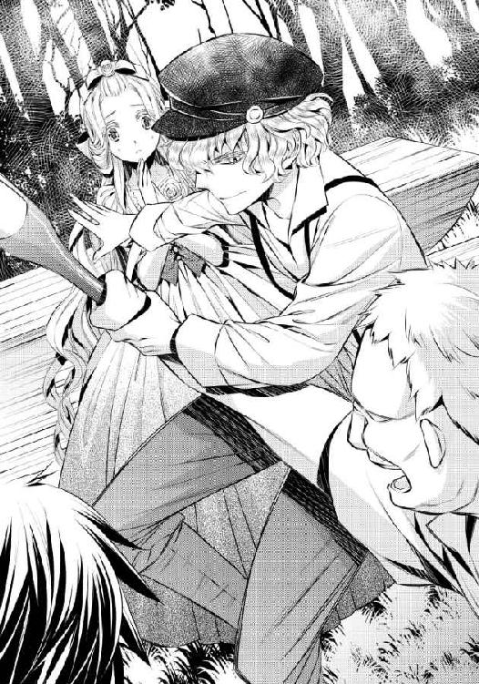
「悪気はないと思うよ。お酒が入ってちょっと気分がよくなって、可愛い子がいたから声をかけちゃっただけなんだろうけどね」
エドアルドが、果物のジュースを手渡してくれる。木をくり抜いただけの簡単なコップを、リュシアは震える指先で受け取った。
「飲んで。美味しいよ」
言われるままに、リュシアはコップを傾ける。新鮮な果物を搾ったジュースは自然な甘さと瑞々しさでリュシアの喉を潤し、心を落ち着かせてくれた。
半分ほど飲みきると、リュシアの震えも止まってくる。
「......と、取り乱して......ごめんなさい......」
「謝るのは俺の方だよ。一人にしてごめんね。......リザはどうしたの？」
「ハンカチを、濡らしに行ってくれて......」
「──リュシアさま!! まあ、どうされましたの!?」
事情を知らないリザが、慌てて戻ってくる。エドアルドが無言で立ち上がる様子を見て、リュシアは彼が何をしようとしているのかに気づき、慌てて止めた。
「で、殿下......リザを、怒らないで。私のために、少し離れただけなんです」
「......うん、わかった。リュシアがそう言うなら」
エドアルドがひとまず怒りをおさめてくれたことに、リュシアはほっと安堵して笑みを浮かべた。
「大丈夫よ、リザ。エドアルド殿下が買ってきてくださったジュースがとても美味しくて......元気が出たわ」
「まあ、ようございました！ せっかくのお祭りですもの、楽しまれなければ損ですものね！」
「ええ、そうね。そのとおりよ」
リザの言葉に頷いて、リュシアは立ち上がる。エドアルドが心配そうにこちらを見つめてくるので、もう一度改めて笑みを浮かべた。
「エドアルド殿下、私、もう少し花祭りを見たいです」
リュシアの言葉に、エドアルドはしばし考え込むように眉根を寄せたあと──小さく笑い返した。
「そうだね。せっかくのお忍びだし、楽しまないと損だね。......もう少し、遊ぼうか」
「......はい......!!」
「でも、俺の傍から絶対離れちゃ駄目だよ。危なっかしくて見てられないから」
リュシアの手を、エドアルドが改めて握る。そんなことはないと反論したい気持ちもあるが、つい先程のことを思い返すと何も言えない。
新たな出店を見物しようかと思ったとき、リュシアたちの耳に陽気な音楽が届いた。
広場の中心には円形状に開けたところがあり、音楽が鳴り出すと同時に人々が集まり始めた。もしかして、とリュシアが期待していると、人々はそれぞれに踵を鳴らすように踊り始めた。
「まあ......!! ダンスですわ!!」
リザが歓声を上げ、音楽に合わせて手を叩く。陽気な音楽とダンスは、見ているだけでとても楽しくなるものだった。
「......参加、してみる？」
エドアルドがいたずらっぽく笑って問いかけてきた。リュシアは驚いてしまうが、エドアルドの笑顔はどうやら本気らしい。
（で、でも......知らない人たちの中に、入るなんて......）
しかもこのダンスは、王宮で行われるようなダンスとはまったく違う。ゆったりと空間を使ったダンスではなく、もっと狭い場所で親しく密接に踊るものだ。
（こ......怖い、けど......）
エドアルドが一緒にいてくれたら、できるような気がする。リュシアは小さく息を呑んだあと、かすかに頷いた。
「......あの......エドアルド殿下が、傍にいてくれないと......駄目、です......」
「うん、わかってるよ。大丈夫。......俺と、一緒に踊ってくれるかな？」
「......は、はい......」
エドアルドが少し強めに手を引いて、ダンスの輪の中に導く。決められたステップはなく、皆が自由に楽しく踊れればいいというのが庶民のダンスのようだ。
最初は戸惑ってしまったリュシアだったが、エドアルドのリードもあって、音楽に乗り始める。軽やかに素朴なステップを踏むと、心も躍り始めた。
ダンスを踊っている者たちに向かって、花が投げられる。雨のように降ってくる花たちを髪や肩に受け止め、皆が声を立てて笑いながら踊った。
（楽しい......っ）
城にいたら、決して知ることがないだろう楽しさだ。
笑顔を向けると、同じくエドアルドも楽しげな笑みを返してくれた。
エドアルドはさりげなくリュシアをリードして、身体が他人に触れないように配慮してくれる。その優しさと気遣いに、胸がきゅん......とときめいた。
（......ああ、でも駄目よ。私が好きなのは、『王子さま』なのに......）
そして、この祭りが終わればコルディーナに帰らなければならない。
（帰りたくない、なんて......思ってしまうの......）
☆☆☆
翌朝は少し早めに目が覚めた。疲れに任せてぐっすりと夢も見ずに眠ったおかげで、目覚めはずいぶんとすっきりしたものだった。
リザはリュシアの目覚めに合わせるかのように入浴の準備を整えていて、おかげで残っていた疲労の残滓もすっきりと落としてもらえたようだった。
今朝は繊細なレースの縁取りが袖口、襟元、スカート裾にたっぷりと施されたワンピースという軽装で、銀糸のような髪は絡ませないように、緩い三つ編みに結われる。
首に細めのチェーンと繊細なデザインの花をあしらったダイヤモンドのネックレスを着けてもらえば、支度は終了だ。だがリュシアは、そこに昨日エドアルドに買ってもらった指輪を着けた。
エドアルドがはめてくれた位置に、リザが気づいて微笑んだ。
「その指輪、お気に召されたようですね」
少し照れくさくて、リュシアは頬を赤くする。
「......え、ええ、とても可愛いから......」
続けた言葉はなんだかひどく言い訳じみているような気がしないでもない。
「そうですか。リュシアさまがその指輪を気に入られて、エドアルド殿下もとてもお喜びになられると思いますわ。......さあ、朝食に参りましょう」
ドレッサーに櫛を置いたリザに促されて、リュシアは食堂に向かう。その途中で、アイリーンと合流した。
朝の挨拶をしたリュシアに、アイリーンは花祭りの感想を聞いてくる。
「お身体の方はもう大丈夫のようですね。花祭りはいかがでした？」
リュシアをきちんと一国の王女として扱ってくれることに、少し安心する。初対面の対応がどうにも心に引っかかってしまっているのか、アイリーンのことが少し苦手になってしまっているリュシアだった。
「と、とても楽しかったです。体調の方の心配も......ありがとうございます」
「あのときは、ずいぶん怯えていらっしゃるようでしたから、とても心配いたしました。あのくらいのことで怯んでしまうとは、リュシアさまはとても繊細なお方なのですね」
アイリーンの言葉に、リュシアは軽く息を詰める。心配をしてもらっているのだと思うのだが──なにやら、情けないと暗に言われているようにも思えてしまう。......そんなふうに思うのは、自分に自信がないからだ。
（私の、気にしすぎ、よ......）
「そんなに繊細だと、リュシアさまはご結婚が大変そうですね」
「......け、結婚......!?」
ずいぶんと話が飛躍したような気がしてしまう。リュシアが少し裏返った声で聞き返すと、アイリーンの方が驚いたようだった。
「私、何か変なことを言いましたか？ リュシアさまもお年頃です。いずれはどなたかと結婚されるのでしょう？」
「......そ、そうね......それは、そうね......」
言われてみれば、確かにそうだ。それでなくともリュシアやアイリーンの年頃ならば、興味がある話題だろう。リュシアにだって、初恋の相手がいるのだから。
「ご婚約の話とか、すでにもうあるのですか？」
「......い、いいえ!! そ、それは......まだ......。ア、アイリーン嬢は、どうなのかしら？」
「そうですね、ないこともなしあることもあり、という感じです。......まあ私はどこに行ってもそれなりにうまくやれると思いますから、別に結婚に関してはあまり心配されていませんね」
「......う、うま、く......？」
言われている意味がよくわからず、リュシアは小首を傾げる。アイリーンは小さく笑った。
「たとえば敵国に嫁いだとしても夫を殺せると思うし、私を気に入らないと追い出そうとされても返り討ちにできると思うし」
「......そ、それは、正しい結婚とは言えないわ......!!」
なにやら物騒なことを当たり前のように口にされて、リュシアは慌てて言い返す。アイリーンはくすくすと楽しげに笑ったあと、言った。
「可愛らしいお方ですね、リュシアさま。でも、それではもしよからぬところにお嫁に行くことになったら、大変ですよ。......誰も助けてくれないんだから」
低く落とされた言葉に、リュシアはなぜか身震いしてしまう。
次に何を言えばいいのかと戸惑ってしまったリュシアに、エドアルドの声がかかった。
「おはよう、リュシア。よく眠れたかい？」
気づけば食堂近くにもうたどり着いていた。反対の廊下からやってきたエドアルドが、明るい笑顔を見せて挨拶してくれる。
アイリーンへの奇妙な恐怖を感じていたリュシアは、反応が少し遅れてしまう。代わりにアイリーンがエドアルドに走り寄って、その腕に抱きついた。
「おはよう、エド！ 今朝もいい天気ね！」
「うん、そうだね。でもお客さまの前で、いとことはいえ抱きつくのは駄目だよ。俺はリュシアに変な誤解をされたくないから」
「変な誤解って何かしら？」
アイリーンが抱きついたままで、リュシアを見てくる。何かいけないものを見てしまったように思えて、リュシアは慌てて目を逸らした。
親しげなやり取りを交わせるのは、二人がいとこだからか。美しくしなやかな血統書つきの猫がじゃれているようだ。エドアルドはそれを、少々うっとうしげにあしらいながら、食堂に入っていく。
微笑ましい様子のはずなのに、なぜかリュシアの胸は小さく痛んだ。......この痛みは、いったい何なのだろう。
なるべく考えないようにして、席につく。すぐさま控えていた召使いたちが給仕を始めて、あっというまに朝食が目の前に整えられた。
領主夫婦とクロード公爵はもう席についていて、挨拶を交わしてから昨日の祭りの感想を聞かれるなど、他愛もない会話が続く。
エルザ領主がリュシアの祭りの感想を聞いて、安心したように笑った。
「楽しんで頂けたようで、安心しました。よろしければまた来年もぜひ見物に来てください」
「今度は私が姫のお世話をさせていただきますぞ！ 祭り以外のことも、十二分に満足していただけますよう、尽力いたしますからな！」
クロードの熱意のこもった言葉はありがたいものの、リュシアに気に入られようとする意図がありありと見えていて、答えに困ってしまう。リュシアは儀礼的な笑みをひとまず返した。
「......ところで殿下。明日は王城に戻られるのですよね？」
エルザ領主がエドアルドへ問う。
「うん。残念なことに、リュシアと一緒にいられる約束は明日までだから」
「そうですか......ではお帰りまでに、エルザ領の土産を用意させていただきます。リュシアさま、ぜひコルディーナ国王陛下にもお渡しください」
「お気遣いをどうもありがとう」
今度は心からの笑みを見せたリュシアだが、ふと思い出してしまう。
（明日にはお城に戻って......）
自分の国へ帰る。
それぞれの国に戻ったら、エドアルドとは気楽に会えなくなってしまうだろう。それがひどく寂しくてリュシアの表情は暗くなり、フォークの動きもだんだんと止まってしまう。
「リュシア？ 疲れがまだ残ってるのかな」
リュシアの様子にすぐに気づいたエドアルドが、心配そうにこちらを見てくる。途端に領主夫婦も同じ表情になり、今にも席を立ってリュシアのために医者を呼びそうだ。
身体の具合が悪いわけではないのに、またこんなふうに気遣ってもらうのはひどく心苦しい。リュシアは慌てて笑みを浮かべる。
「ご、ごめんなさい。な、なんでもないの」
「本当にそうならいいけど......無理してるように見えるから、信用できない」
「エドは、気に入ったものができると駄目ね。心配しすぎよ」
疑うような目をするエドアルドをたしなめたのは、アイリーンだ。
「リュシアさまは小さな子供ではないんだから、エドに言いづらいことの一つや二つあっても、おかしくないわよ？」
エドアルドは言い負かされたようにぐっと黙りこんでしまう。アイリーンの助け船はとても嬉しいのだが、これではリュシアが隠し事をしているようではないか。
「......あ、あの、殿下......」
「うん......そうかもね......リュシアと俺は、まだ出会ってさほどの時間が経っているわけじゃないし......言えないことの一つや二つや三つや四つくらいはあるよね......」
これではリュシアがたくさんの秘密を持っているようだ。正直に話した方がよさそうに思えるものの、ここではアイリーンたちの目があって恥ずかしい。
リュシアはどうするべきか追い詰められて、言った。
「あ、あの......っ。エ、エドアルド殿下と二人きりでお話ししたいことが......っ」
朝食の席が、しん......っ、と静まりかえる。エドアルドをはじめとする皆の視線が一斉に自分に集中して、危うくもう少しで気を失ってしまいそうだった。
クロードが、マナー違反にもカシャン、と音を立ててフォークを置く。
「ま、まさか、姫......殿下のことを......？」
「物事を単純にかつ性急に考えすぎです、お父さま。リュシアさまはとても繊細な方なんですから、不確定要素は口にされない方が気遣いというものです」
ぴしゃりとアイリーンが言って、父親の言葉を遮る。しかし時はすでに遅く、リュシアは真っ赤になって俯き、身を縮めてしまった。
エドアルドは何度か瞬きをしたあと──頷く。
「いいよ。......食べ終わったら、散歩をしながら話そうか」
「は、はい......」
拒まれなかったことに安心はしたが、皆に誤解をされてしまったように思えて、それが恥ずかしい。エドアルドをこれ以上不必要に心配させないように食事を口に運んだが、味はよくわからなくなってしまっていた。
食後のミントティーを飲んだあと、リュシアはエドアルドに誘われるまま、館の裏手にある湖までの散歩道を歩いた。リザがリュシアのために日傘を用意してくれて、チューリップ型の薄布越しの陽射しはとても柔らかく感じられた。
リュシアの隣をエドアルドが歩き、こちらの様子をうかがうように見ているのがわかる。
リュシアの方から話があると願い出たのに、いざ話そうとすると何をどう言えばいいのかわからなくなる。心臓は緊張のあまりかドキドキとうるさいくらいに高まっていて、ますますリュシアの思考を停滞させた。
（言、言いたいことは、一つだけなの。もう少し、この国に滞在させてもらえませんか。......な、なのに、緊張して......っ）
断られたらどうしようと考えると、ますます萎縮してしまう。こんなときこそおまじないだと、リュシアは口の中で小さく呪文を呟いた。
その声が、エドアルドに届く。何を言っているのか聞き取れてはいないようで、訝しげに眉根を寄せた。
「リュシア？ どうしたの、ゆっくりでいいよ？ 言いたいことは何でも話して」
「あ、あの......っ、私、もう少しこの国に滞在したいです......っ」
エドアルドが足を止める。自然とリュシアも立ち止まった。
日傘のせいで、エドアルドの顔は見えない。だが同時に、こちらの顔も見えないはずだ。
耳まで真っ赤になった顔を見られたくはなかった。
「......それはつまり、リュシアは俺が気に入ったってこと？」
エドアルドの問いかけに、リュシアは爆発してしまいそうな勢いでさらに顔を赤くする。
「そ、それは、その......っ」
「フレディアス国のほんのわずかしか知らないのに、この国を好きになれるわけがないし。そうなると、俺のことが気に入ってくれたのかなって思えるんだけど、違う？」
「そ、それは......」
たたみかけるように言われて、リュシアは息を呑む。だが言葉を詰まらせることにならなかったのは、カーラのおまじないがまだ効いているからだ。
「そう......なのかもしれないし、違うかもしれないの......」
リュシアは今の気持ちを正直に口にする。エドアルドからは優しい沈黙が返されて、リュシアの話を聞いてくれていることがわかった。
「私、ちゃんと初恋の人がいるの。私を助けてくれた『王子さま』なの。その人のことが好きなのに、どうしてかエドアルド殿下のことにドキドキしてしまうの......」
「俺と一緒にいると、ドキドキする？」
エドアルドの片手が日傘に触れて、そっと持ち上げた。それでも陽射しがリュシアの顔に降ってこなかったのは、エドアルドが身を屈めるようにして顔を覗き込んできたからだ。
（......見、見られてる......）
エドアルドの視線を、痛いくらいに感じる。エドアルドは両手で包み込むようにリュシアの頬を挟み、そっと力をこめて自分を仰がせた。
「俺のことを好きになってくれたのかな」
「......わ、わからないわ......っ」
気にはなるが、恋心を抱いているかどうかの自覚はまだわからない。リュシアはおまじないのせいで、素直にそう答えてしまっている。
「そうか。......素直だね、君は」
エドアルドはリュシアの瞳を覗き込みながら、頬にくちづけてきた。柔らかく押しつけられた唇の感触に、身体が小さく震える。
エドアルドは目の端に、額にと、触れるだけのくちづけを続けた。どこかくすぐったいような感触を、リュシアは受け止める。同時に、満たされる幸福感も感じられた。
エドアルドが唇を離して、囁く。
「......これ、嫌じゃない？」
はっきり声に出して答えるのは恥ずかしくて、リュシアは瞳を伏せて頷いた。エドアルドは小さく笑う。
「じゃあ、唇にしてもいい？」
「え......あ......っ」
今度はリュシアの答えを待たずに、エドアルドは唇に自分のそれを優しく重ねた。
柔らかく押しつけられたあたたかさに、リュシアはさらに身を震わせる。日傘の柄を両手で強く握りしめ、エドアルドからの優しく啄まれるくちづけを受け止めた。
（あ......何かしら。とても、気持ちいい......）
重ねられるだけのくちづけは、甘く優しく、リュシアの心を溶かす。リュシアはうっとりと目を閉じて、エドアルドからのくちづけに酔いしれた。
......やがてエドアルドの唇が、名残惜しげに離れる。リュシアは小さく吐息をついて、少し潤んだ瞳でエドアルドを見返した。
「エドアルド殿下......」
「......あんまり可愛い顔しないでくれる？ 我慢できなくなっちゃうから」
エドアルドがどこか困ったように苦笑して、リュシアの手を取る。そのまま手をつないで、散歩道を再び歩き出した。
「俺はね。リュシアのことが好きだよ」
「え......っ」
突然のエドアルドの告白に、リュシアは茫然としてしまう。エドアルドが手をつないでいなかったら、立ち止まったまま動けなかっただろう。
つないだ手に、力がこもる。それは、リュシアを逃がさないようにするためか。
「一目惚れだったんだよね。だから、花祭りに誘ってみたんだけど」
「ひ、一目惚れって......あ、あの、舞踏会のとき......？」
リュシアも、もしかしたら同じようなものかもしれない。あの舞踏会のときに偶然エドアルドと出会って楽しい時間を過ごしたことが、彼を気にし始めたきっかけだった。
あのときなりゆきのようにキスをしてしまって──そのときのことを思い出して、リュシアは顔を赤くする。
エドアルドが意味ありげに笑った。
なんだかからかわれているような気がする。エドアルドは自分などよりもずっと異性とのやり取りに長けているようだったから、仕方ないのかもしれないが。
「たとえば君に、他に好きな人がいてもいいよ。その『王子さま』？ という人がいてもね。最後に俺の方を見てくれればいいわけだし......だから、ちょっと本気を出してもいいかな？」
「ほ、本気って......ど、どういうこと......？」
エドアルドが、リュシアを見つめてにっこりと笑う。
「それはもちろん、リュシアが俺のことを好きになってくれるように、だよ」
その笑顔がとても魅力的で見惚れてしまい、リュシアは結局何も言い返すことができなかった。
第三章 想いは止まらない
予定外の滞在はエルザ領ではなく、フレディアス国王城で過ごすこととなる。エドアルドには王子としての仕事があり、それを滞らせるわけにはいかないからだ。
王城での滞在の許可は、エドアルドがフレディアス国王に取ってくれるという。リュシアの方はその旨をしたためた手紙を、リザが自国に届けてくれることになった。
荷造りをきっちり終わらせておいてくれたことは、さすがリザというところか。おかげでリュシアはエドアルドが用意してくれた召使いたちに、荷物を運んでくれと命じるだけで済んだ。
王城へ戻るための馬車が整うまで、リュシアはエドアルドと一緒に茶を飲んで待つことになった。
エルザ領主夫妻は国王への土産の荷作りと王子一行の馬車などの準備の陣頭指揮を執っているため、ここに同席はできない。
必然的に二人きりになり、リュシアの心臓は爆発寸前だ。だがリュシアの引っ込みがちな性格のことはもうエドアルドも充分に理解してくれているのか、カーラのおまじないに頼ることなく会話は重ねられていく。
「そういえば」
エドアルドがふいに言ってテーブルに身を乗り出す。カップをちょうどソーサーに戻したばかりのリュシアの手はテーブルの上にあって、エドアルドの手に優しく捕らえられていた。
びく、とリュシアの身がかすかに震える。だが掌のぬくもりがすぐにそれを落ち着かせた。
（......変だわ......私、エドアルド殿下に触れられて、どきどきはするけど......怯えたりはしなくなってきたわ......）
エドアルドとの触れ合いに、慣れてきたということだろうか。
「この指輪、気に入ってくれたんだ？」
「......え......あ......っ」
エドアルドの指が、リュシアの指輪をそっと撫でている。リュシアはなんだか赤くなってしまいながらも、小さく頷いた。
「......と、とても......可愛かったから......」
「うーん......ここで俺が買ってくれたからって言ってくれたらすごく嬉しいんだけどなぁ」
そのやり取りは、恋人同士のものではないだろうか!? リュシアはどう言い返せばいいのかさっぱりわからず、さらに赤くなった顔を見られないように俯くだけで精一杯だ。
「ほんとに可愛いなぁ、リュシアは。ずっと見てても飽きないよ」
「──あら、それ、女の子に言うべき台詞じゃないわよ、エド。ペットに言うものじゃない？」
......なんだか小馬鹿にされたような言葉を言って姿を見せたのは、アイリーンだ。そこにいるだけでひどく華やかな雰囲気を放っていて、眩しい。
リュシアが挨拶する前に、アイリーンはスカートを摘んで貴族の令嬢としてのお辞儀を完璧にしてみせた。
「ごきげんよう、リュシアさま」
「ご、ごきげん、よう......」
雰囲気に呑まれてしまって、リュシアの声は弱々しい。アイリーンはさらに笑みを深めて言った。
「私も出立まで時間があるの。同席させていただいてもよろしいですか？」
「リュシアがいいって言ったらね」
ちらりとアイリーンがリュシアを見る。妙な威圧感を覚えて、リュシアの身体は反射的に動いていた。
「え、ええ、どうぞ」
「ありがとうございます」
ふわりとスカートを優雅に揺らして、アイリーンはリュシアの前に座る。離れたところに控えていた召使いがすぐにアイリーンの分の茶を持ってきてくれた。
しかしアイリーンはあっさりとそれを断る。
「あら、これじゃなくて私のおすすめをいれてきてちょうだい。私の侍女に聞いてくれればわかるから」
召使いはアイリーンの要求に従い、その茶をいれてきてくれる。
「お口に合うといいんですけど。私が自分でブレンドしたお茶ですの」
ふんわりと甘い香りがした。口に含むと、ほっと安堵するような優しい味がする。こんなことまでできるのかと、リュシアは感嘆した。
「とても美味しいわ」
「よかったです！ エドも飲んでね。これは心をリラックスさせるものだから」
「はいはい」
適当な返事をしながら、エドアルドはそれでも言われるままに茶を口に運んでいる。気安い二人の様子に、リュシアの心には何とも言えないもやもやした気持ちが生まれていた。
リュシアの気持ちなどアイリーンはまったく気づいておらず、一口飲んだあとに言ってきた。
「王城に、しばらく滞在なさると聞きました」
「......え、ええ......」
「エド、私も一緒に王城に滞在したら駄目かしら？」
思ってもいなかったアイリーンの提案に、リュシアは驚いてしまう。どうしてここで、アイリーンも同行してくるのか。
「......どうしてかな？」
リュシアの代わりのように、エドアルドが問いかける。アイリーンは唇に笑みを浮かべて続けた。
「王城に行ったら、リュシアさまには女友達の一人もいないのよ？ だったらここでお知り合いにさせていただいたご縁もあるし、フレディアス国の風習などに戸惑われても、私を頼っていただければいいと思うし。私、リュシアさまとお友達になりたいの」
（お友達）
その言葉はとても優しく、あたたかい言霊だ。アイリーンが自分にそんなことを言ってくれるとは思ってもいなかったからリュシアは、正直、驚いてしまう。
自分の性格はアイリーンのような意思のはっきりした女性にとって、あまりいいようには思われていないと感じていたのだが。
けれどアイリーンはエドアルドのいとこで、人見知りの激しい異国の王女である自分にも、こうして気を配ってくれる優しさがある。こんな闊達で魅力的な女性になれたらいいな、と憧れの気持ちも確かにあった。
リュシアは小さく息を呑んで、アイリーンに言った。
「......あ、あの......でも......私なんかで、いいのかしら......」
「あら、どういうことですか？」
「あなたの友達として、私みたいなのは......も、物足りない、んじゃないかと思って......」
（もっと、自分に自信を持てたらいいのに）
そうしたら、こんな不安げなことを口にすることもないのに。
アイリーンは驚いたように軽く目を見張ったあと、くすくすと笑った。その笑みが、もしや自分を馬鹿にしているのではないかと思い、リュシアは身を竦ませてしまう。
だが、リュシアの身体の強張りに気づいたエドアルドが、すぐにテーブルに乗っていた片手を、ぎゅっと握りしめてくれた。アイリーンの前でそんなふうに手を握られると恥ずかしさを感じたが、伝わってくるぬくもりと心地よさにほっと安堵するのも確かだった。
「......もう、エドったら。私がリュシアさまをいじめているみたいにしないで。あまりにも可愛らしいことを言ってくださるから、微笑ましくなってしまっただけよ」
二人が手をつないだ仕草を見て、アイリーンはさらに笑う。
「本当に可愛らしいのですね、リュシアさま。私はあなたよりも下位の者です。あなたが自分なんかでいいのかと、私に許可を取る必要はまったくありません。そうではなく、あなたには私を嫌いと言って、拒む権利があるんですよ？」
「そんな......!! そ、そういうのは、違うと......思うわ。と、友達になるのって、立場はまったく関係ないと......お、思うの。た、立場で、友達になるわけじゃないでしょう？」
「まあ......リュシアさまはとてもお優しいのですね。......ですが、その優しさも場合によっては命取りになるかもしれません。お気をつけくださいませ。権力だけを求める輩というのは、私たちの周りにはたくさんいますのよ？」
小国であるコルディーナ国では、かつての大伯父のような輩は滅多にいない。だが大国では、コルディーナ国ほどのんびりとするわけにはいかないのだろう。
（だって、エドアルド殿下の愛人になろうとするだけでも、あんなにすごかったんだもの）
彼女たちが自分を見る敵意ある視線を、リュシアは忘れることができない。王族としてとても力のあるエドアルドたちには、失脚を望む者も山ほどいるのだろう。
王城に行ったならば、そういう輩との接触もあるかもしれない。考え出すと不安と恐怖が生まれてきそうになるが、リュシアはきゅっと心の中で唇を噛みしめる。
（殿下は、私のわがままを聞いてくださったのだもの......私が、ご迷惑にならないようにしなくてはいけないわ）
「......ありがとう、アイリーン嬢。ご忠告、感謝します」
エドアルドのために強くならなくては。そう思ったら、するりと言葉が出ていた。
リュシア自身も、それに驚いてしまう。だがエドアルドはどこか嬉しそうに笑ってくれた。 アイリーンが瞳を眇めたあと、笑った。
「では、リュシアさま。私とお友達になってくださいますか？」
リュシアは笑顔で頷いた。
「喜んで」
王城に到着すると、知らせを受けた国王夫妻が迎えてくれた。挨拶だけに終わってしまっていたエドアルドの弟マシューもいて、彼らに自分が受け入れられていることを感じて、とても安心した。
翌日の晩餐前にはリザがリュシアの両親たちの手紙を届けてくれて、正式に滞在延長が成された。好きなだけいればいいとエドアルドだけではなくフレアディス国王夫婦にも言ってもらえて、リュシアの緊張もどんどん薄れている。
特にリュシアの滞在を喜んだのは王妃だった。今日もリュシアとアイリーンを連れて、自分の衣装部屋へと連れていき、着せかえごっこを楽しんでいる。
トルソー代わりになっているのはリュシアだ。着せられるドレスは彼女が娘時代に身に着けていたものだった。
「......どうかしら、アイリーン」
「はい、とってもお似合いです。ですがリュシアさまの銀の髪にはこの色は単に派手派手しく見えて、せっかくのお若さがなくなってしまうかと」
「......やっぱりそう思う？ リュシア、ちょっとくるりと回ってみてちょうだい」
そんな王妃の着せ替え遊びは多少の疲労はあったものの、楽しいひとときだった。王妃が遊びに夢中になってリュシアをなかなか解放しないだろうことを見計らっていたエドアルドは、途中でお菓子の差し入れをしてくれた。おかげで、ほどよく休憩も取れた。
晩餐の前に、リュシアはエドアルドの部屋を訪ねてみた。召使いたちは快く案内をしてくれて、今は扉の前にリュシア一人だ。
エドアルドは執務を終え、もう部屋に戻っていると通りすがりにマシューから聞いている。扉をノックすれば、エドアルドが返事をしてくれるはずだ。
だが、なかなかノックする勇気が出てこない。
お礼をちゃんと言えるだろうか。それに部屋まで押しかけて、迷惑に思われたりしないだろうか。
リュシアは片手で胸を押さえたあと、意を決して扉をノックした。
「......あ、あの......エドアルド殿下......？ いらっしゃいますか？」
かたん、と扉の奥で慌てたような物音がする。すぐにこちらに駆けてくる足音が響き、扉が開いた。
エドアルドが、驚いた顔で姿を見せる。
「リュシア!? 俺の部屋までわざわざ来て......どうかした!?」
「......あ......い、いいえ......何かあったわけではなくて......そ、その、お礼を......」
扉を開けたままの格好で、エドアルドは動きを止める。
「お礼？ 何の？」
「昼間、お菓子の差し入れをしていただいたから......」
ようやく納得がいったようで、エドアルドが「ああ」と頷いた。リュシアはそっと頭を下げる。
「どうもありがとう。とても助かったわ」
「母上がはしゃぎすぎていることは充分にわかっていたからね。たいしたことじゃないよ。それにリュシアだったら、母上にそう強くも言えないだろうし」
エドアルドが部屋を出てくる。時間的にこのまま食堂に向かった方が、晩餐の時間にちょうどいい。
リュシアもエドアルドとともに一緒に歩き出した。
「とても気遣っていただいて......ありがとう」
「それは当然のことだよ。俺はリュシアを気に入っているんだし」
どきっ、とリュシアの鼓動が震える。エドアルドの言葉はいつもこちらが驚くほどにするりと生み出されて、からかわれているのか本気なのか判断しかねる。
それに何よりも、自分には好きな人がいるのに。
「俺のこと、結構いい奴だと思ってくれてる？」
とん......っとリュシアの前に、エドアルドの腕が伸びた。
リュシアの足が必然的に止まる。エドアルドの身体が寄せられ、壁に押しつけられた。
エドアルドの両腕の中に、リュシアの身体が囲われてしまう。エドアルドが顔を近づけると、リュシアの前髪に彼のそれが触れた。
「......あ......っ」
「......ね。俺のこと、もう少し気にしてみてよ。そうしたら、好きになるかもしれないじゃない？」
「わ、私には......好きな人が......」
「でもリュシアは、この国に──俺の傍に、残ってくれたんだよね？ それって俺のことが気になってるって証拠でしょ？」
（そうなのかもしれない。でも......）
あと少しでも身を寄せればキスも可能な位置にいるエドアルドの胸を、リュシアは両手でそっと押す。
「わ、私......そんな浮気性じゃ......ない、から......っ」
「......浮気性......っ」
リュシアの言葉に、エドアルドが噴き出す。そのままひどく面白そうに笑われて、リュシアは慌てた。......そんなにおかしいことを言ってしまっただろうか。
エドアルドはまだ笑みを消さずにいながらも、リュシアから身を離す。距離が離れて少しほっとしたのも一瞬で、指輪をはめた手を取られた。
あっと思う間もなくエドアルドがその手を引き上げ、指輪にくちづける。
「......で、殿下......っ」
手を引っ込めようとしても、身じろぎもできない。エドアルドは指輪だけでなくそのままリュシアの手の甲にくちづけてくる。
あたたかく触れた唇と、薄く開いたそこから覗いた舌の感触に、リュシアはとろけたように動けなくなる。エドアルドは何かに耐えるようなリュシアの仕草に小さく笑い、そっと手を離した。
「リュシア、顔真っ赤だけど」
「......え......っ」
リュシアは慌てて頬を押さえる。エドアルドはさらに笑い、リュシアの手を取って食堂へと歩き始めた。
「さあ、夕食にしよう。今日のメニューは何だろうね」
そんな他愛もない話をしながら、エドアルドはふと独りごとのように呟いた。
「早くリュシアに気づいてほしいな」
☆☆☆
リュシアはその日、王城にある図書室で、この国の歴史書を読んでいた。
フレディアス国の歴史は祖母や両親から聞いているが、やはりちゃんとしたものを読むと興味深い。エドアルドがこのような国で生活し、成長してきたのかと思うと、面白かった。
ページをめくっている指が、章の区切り目で止まった。
左手の薬指には花の指輪がはめられたままだ。......結局まだ一度としてこの指輪を外していない。
先日、この手にエドアルドのくちづけを受けたことを思い出し、リュシアは顔を赤くした。
ここ最近、何かにつけてエドアルドのことを考えているような気がしてならない。これは、自分がエドアルドを好きになったということなのだろうか。
「......そんな、こと......」
「......あれ、リュシア姫？」
リュシアの耳に、マシューの声が届く。少しだけ心を震わせて顔を上げると、マシューが明るい笑顔を見せてこちらにやってきた。
「読書ですか。何か面白いものがありましたか？」
緊張してしまうが、エドアルドとよく似た面影はただの他人と向き合うよりはずいぶん楽だ。リュシアは小さく笑った。
「え......ええ。この国の歴史書を、読んで、ました......」
「それ、面白いですか？」
マシューにとっては別段面白いものではないのだろう。リュシアは少しだけ笑みを深める。
「マシュー殿下は生まれた頃から知っていること、だからです。私は、この国のことはまだ何も知らなくて......だから、とても面白いです......」
「わからないこととかありますか？」
マシューがリュシアの向かいに座る。少年の優しさに、リュシアは微笑んで首を振った。
「大丈夫、です。読んでいて、知らないことはあるけれど......それを調べるのも、楽しい、です」
「そうですか。では変に邪魔をしないようにしますね。でも何かわからないことがあったら遠慮なく言ってくださいね。兄上にも姫にはよくするように、と言われていますし」
（エドアルド殿下が......）
エドアルドが自分のことを常に気にしてくれているように思えて、嬉しくなる。その嬉しさが心をぽかぽかとあたたかくしてくれる。彼のことを想うと、とても優しい気持ちになれる。
（この気持ちが......恋......？）
でも私には、初恋のあの子への気持ちがずっとあるのに──これは、浮気ではないの？
「......リュシア姫？ どうかされましたか？」
「......あ......ごめんなさい。ちょっと考え事をしてしまって......」
「何かお悩みのことでも？ 僕でよければ聞きますよ？」
「......悩み、なんて......」
ない、と言おうとして、リュシアは止める。これはもしかしたらいい機会かもしれない。
リュシアはきょろきょろと辺りを見回す。誰かに聞かれるのは恥ずかしかった。だがリュシアの望みに応えるかのように、この部屋には二人以外誰もいない。
「......内緒話ですか？」
「......え、ええ......その......」
どうしても、声が小さくなってしまう。マシューはエドアルドがリュシアにそうするように、こちらの声を受け止めるために身を乗り出してくれた。
「あ、あの......ね。エドアルド殿下に、何かお礼をしたいんだけど......殿下は、何が好き、かしら......」
（指輪の、お礼をしたい）
「兄上にですか？」
マシューが、少し驚いたような目を向ける。リュシアは急激に恥ずかしくなって、思わず目を逸らした。その仕草に、マシューは微笑ましげに笑った。
馬鹿にされたわけではないと雰囲気でわかってはいるが、やはり恥ずかしい。リュシアが頬を赤くすると、マシューは思わずといったふうに呟いた。
「兄上のものでなかったら、僕が欲しくなっちゃう人だなぁ......」
「......マシュー殿下？」
何を言っているのかよくわからなくて、リュシアは小首を傾げるようにして問いかける。マシューは軽く首を振り、言った。
「あまり気にすることはないと思いますよ。兄上は姫が選んだものなら何でもお喜びになると思います」
「そ、それは嬉しいけど......何かちょっと、違う、ような......」
「......そうですか......」
マシューが、少し考え込むように目を伏せた。しばしの沈黙のあと、マシューが何かを思いついたのか表情を明るくした。
「でしたら、姫が何かお作りになられたらどうですか？」
「私の、手作り......!?」
あまりにも予想外の提案に、リュシアは裏返った声を上げてしまう。だがマシューの方は自分の提案にとても満足げだ。
「姫の手作りだったら、どんなものでも兄上は大喜びになりますよ！ ......あ、でも、できたら兄上の休日の前日にしてください。舞い上がりすぎて翌日の執務に影響が出ないように......」
よくわからないことをマシューは警告してくる。リュシアは問い返すよりも、エドアルドに何を作ろうかとあれこれ考え始めてしまっていた。
（何がいいかしら......あまり邪魔にならないもので、私が自信を持って作れるものがいいわ）
自分がよく誉められるのは刺繍だ。真っ白な糊の利いたリネンに、一部分だけに刺繍した品のあるデザインがいいかもしれない。
女性の好みが反映されないよう、デザインは気をつけよう。エドアルドに似合うデザインはどんなのだろう。......いろいろと考えるだけで心が浮き立ってくる。
それが自然と顔に表れ、リュシアはずいぶんと楽しげに見えた。マシューはそんなリュシアに笑顔を向ける。
「何かいいものをお作りになられるようですね？ 必要な材料などがあれば、ご用意しますよ」
「......あ、あの......刺繍道具一式と、白いリネンが欲しいわ」
「わかりました。では明日にでも揃えてお届けします」
「......ありがとう......!!」
マシューの言葉にリュシアは満面の笑みで礼を言う。話に区切りがつくと、マシューは席を立った。
「では僕はこれで失礼します。父上に頼まれた本を届けなければいけないので」
片腕に抱えていた分厚い本を軽く持ち上げて、マシューは言う。リュシアはその姿を笑顔で見送った。
マシューの足音が遠くなり、やがて消える。広い図書室は再び知的な静寂に満たされた。
リュシアは読みかけだった歴史書に再び目を落とし、読み進めていく。この静けさの中ではページをめくる音もはっきりと耳に届き、意外にも心地よいものだった。
新たに、ページをめくる。だがそれよりも先に背後から伸ばされた片手が、本の上に押しつけられた。
（え......？）
驚いて振りあおげば、リュシアの背後にエドアルドが立っていた。まったく気配を感じなかったため、ひどく驚いてしまう。
しかもエドアルドは、リュシアにもはっきりとわかるほどに、怒りの表情を見せていた。
「エ、エドアルド殿下......？」
なんだか不穏な空気を感じてしまう。少し怯えた目を向けると、エドアルドは小さく笑った。......とはいえ、緑眼はまったく笑っていない。
「ずいぶんマシューと楽しそうだったね」
本に手をついたまま、エドアルドは身を屈めてくる。背中から覆い被さられるような体勢になって、リュシアは逃げ出せない。
彼の声は初めて聞く低いもので──リュシアの心と身体をさらに萎縮させた。
顔を見返すことができなくなって、リュシアは前を向く。エドアルドがさらに顔を伏せてきて、リュシアの耳元に囁いた。
「ねえ、リュシア。マシューと何を話していたのか、教えてくれない？ 何がそんなに楽しかったのかな」
子供がねだるような言い方なのに、背筋に寒気を感じてしまう。それにエドアルドへのお礼の品が、まだできあがってもいないのに話してしまうのは躊躇われた。
自然と黙りこんでしまったリュシアに、エドアルドは怒りの空気を強める。
「......そっか。俺には話せないことなんだ？」
「そ、それは......きゃ......っ？」
エドアルドが後ろから唇を寄せて、突然耳を舐めてきた。熱い舌のぬめった感触に、リュシアは驚いて跳び上がりそうになる。
身体の芯が疼くような感覚に、リュシアは打ち震える。反射的に逃げ出そうとするが、エドアルドの腕が逃さない。
「......嫌だなあ......俺が何のために我慢してると思ってるの？」
エドアルドの片腕が、リュシアを強く抱きしめる。椅子の背もたれに拘束されるかのようだ。
「......で、殿下......っ」
「リュシアは男に慣れてないからね。だから、大事に大事に触れてきたんだよ？」
エドアルドの唇が、リュシアの耳に押しつけられる。尖らせた舌先が耳穴をくすぐるように舐めてきて、背筋が震えるような感覚がまたやってきた。
エドアルドの空いている方の腕が、ゆっくりと動く。大きな片手がリュシアの肩を撫で、二の腕を撫でると──ワンピースの胸元を撫でた。
生地の下にある膨らみのかたちを確認するかのように撫でられると、リュシアの身体はさらに震える。
（......な、何......っ？）
「俺はね、リュシア。結構嫉妬深いんだ。大事にしているものを横から取られるのって、すごく腹立たしいよね」
「......な、何をおっしゃっているのか......あ......で、殿下......っ」
胸の膨らみを、下から上へと撫でられる。かと思うと掌が胸の頂で止まって、少し強めに押し揉んできた。
じんじんと痺れるような心地よさがやってきて、リュシアは驚く。
（......どうして......？ エドアルド殿下に、いやらしく身体を......触られているのに......っ）
それが気持ちいいなどと思うのは、おかしい。自分には好きな人がいて、その人以外にはと思っていたはずなのに、どうして。
エドアルドの唇が、耳から頬へと移る。身体を撫でていた手が、喉を撫で上げてきた。
「......ん、あ......」
エドアルドの片手が、リュシアの顎を掴む。乱暴な痛みは感じないが、やはりリュシアが逃げ出せない力だ。
エドアルドは真上からリュシアの顔を覗き込むようにして、唇を重ねてくる。首を仰け反らせる仕草に息詰まる感じが拭えず、リュシアの唇は自然と開いた。
その隙間に、エドアルドは舌を潜りこませてくる。忍び込んだ熱い舌は、リュシアの戸惑った舌を絡め取り、吸った。
「んん......ふ、ん......っ」
舌を絡められると、身体の──心の奥深くにまで直接触られているような感じだ。エドアルドはリュシアの舌に擦りつけるように絡めて、それが唾液の混じり合う淫らな水音を生む。
くちゅ、ちゅく、と耳に届くかすかなそれに、リュシアは恥ずかしくて消え入りたくなる。なのに身体の奥が言いようのない熱をはらみ始めて、どうしたらいいのかわからなくなる。
エドアルドの吐息が、熱い。リュシアはぎゅっと強く目を閉じて感覚を散らそうとするが、うまくいかない。エドアルドに舐められているところだけではなく、触れ合っているところがすべて、熱くなってくる。
（お願い、触らないで。でないと）
何か、とんでもないことを口走ってしまいそうだ。
熱い滴りの余韻を引いて、エドアルドが唇をわずかに離した。だが、この甘い責め苦から解放するつもりではないらしい。
「俺がどんな想いで我慢してるのか、ちゃんと教えないと......わからない？」
「......あ......っ」
リュシアの身体をいつのまにか官能的に撫で回していた手が、ワンピースの襟に伸びる。そこにある白いリボンを、エドアルドがほどいた。
鎖骨の辺りまでは布地がないデザインのため、リボンがほどかれると膨らみが見えてしまいそうなほど際どい位置まで胸元が露わになってしまう。その鎖骨を、エドアルドの指がつつ......っ、と、撫でた。
「......あ......ん......っ！」
直接肌に触れられて、リュシアの身体が震える。怖いはずなのに──その先を知りたいと思う気持ちが確かにあった。
（......私、どうして嫌がらないの？）
「......リュシア......」
エドアルドの吐息が、耳から首筋へと下っていく。リュシアは小さく震えながらも、その場を動けない。
そのとき。
「──リュシアさま、いらっしゃいますか？ 王妃さまがお茶にしましょうって......」
アイリーンの声に、はっと我に返る。エドアルドの方も同じだったようで、拘束するように抱きしめていた腕が緩んだ。
その隙を逃さずに、リュシアは渾身の力をこめてエドアルドの身体から抜け出す。そのまま全力で走り出した。
「待......っ」
エドアルドが呼び止めようと腕を伸ばすが、指先がリュシアの柔らかく美しい銀髪にかすかに触れただけだった。
無我夢中で走ったために、本棚の間から姿を見せたアイリーンを避けることもできず、体当たりするようにぶつかってしまい、互いに尻もちをついてしまう。
「......いたたた......ごめんなさい、リュシアさま！ お怪我はありませんか!?」
「......あ......っ」
アイリーンが慌てて抱き起こそうとしてくれる。その手を振り払い、リュシアは詫びを入れることもできずに立ち上がった。
「え......あ、あの......リュシアさま!?」
無言のままリュシアは再び駆け出し、自室に飛び込む。室内の片付けをしていたリザが、いきなりの主の様子に驚いていた。
「ま、まあ、リュシアさま!? そんなに慌ててどうなさって......」
リザの言葉にも、リュシアは答えない。そのまま寝室に入って扉を閉め、鍵をかけた。
扉に背中を預けながら、リュシアは乱れた呼吸を整える。
息は整っても、脈打つ鼓動はなかなか言うことを聞いてくれない。それどころか、先程のエドアルドとの親密すぎるやり取りを思い返して、もっと激しく脈打った。
（私......私......っ）
エドアルドの指と唇と舌が与えてきた熱く疼くような感覚は、とても魅惑的だった。あのままもっとしてほしいとねだってしまいそうになるくらいだった。
（あ、あれは、恋人にすることで......っ）
リュシアとエドアルドがするべきことではなかった。
ましてやリュシアは、心に初恋の少年の存在を抱いている。なのに、エドアルドが自分に触れるのを許して、ましてやそれを心地よいとまで感じてしまった。
（私......エドアルド殿下に触れられて、嫌じゃなかったの......）
大きく息をついて、俯く。
リボンがほどけたままで、胸元が際どくはだけてしまっている。リュシアは真っ赤になり、慌てて襟元を整えた。
（......どうして、嫌じゃなかったの......？）
「リュシアさま!? 一体どうされましたの!?」
何かただ事ではないことが主の身に起こったのだと、リザは侍女の勘で察したのだろう。ひどく心配そうな声で扉を叩いてくる。
姉妹のようにいつも傍にいてくれるリザは、リュシアの一番の相談相手だった。いつもならば、すぐに彼女に話している。......なのに、今は話せない。
「......ごめんなさい、リザ。少し一人になりたいの」
これ以上リザに余計な心配をかけないよう、リュシアとしてはそう言うのが精一杯だ。いつもとは違う主の様子にリザはますます不安げになったようだったが──ひとまずは頷いてくれた。
「お身体の調子が悪いなどではございませんか？」
「ええ、もちろんよ」
「わかりました。では、リュシアさまのお好きになさってくださいませ。リザはいつでもリュシアさまの味方ですから」
リザの言葉に、リュシアはようやく少しばかりの笑みを浮かべることができる。今のリザの言葉はとても嬉しくて、心強いものだった。
「ありがとう、リザ。今は誰も......私に近づけないで......」
脱兎のごとく走り去っていったリュシアの姿を、アイリーンは少々茫然とした顔で見送ってしまう。その斜め後ろで、エドアルドはそれ以上リュシアを追いかけることもできずに立ち尽くしていた。
やがて、アイリーンが片手を腰に当てて大きく息をつく。
「まったく......人にぶつかっておいて謝りもしないなんて、なんて失礼な人なの」
ピシャリと蔑むように言う。すぐに濃茶の瞳をエドアルドに向けた。
「何かしたんでしょう、エド」
まるで見てきたかのように、アイリーンは言う。まさにその通りのため、エドアルドは返答に詰まった。
「......君には関係ないよ」
「そうね。でも一応私はあの子の友達なのよ。放っておけるわけがないわよね？」
「......」
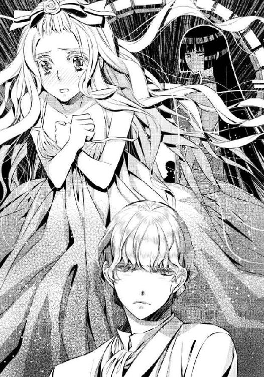
エドアルドは沈黙する。アイリーンは幼い頃から交流のあったいとこだ。よい面も悪い面も、よく知っている。ひとまずリュシアと友好関係を結んでいるものの、実際は彼女をよく思っていないことも、わかっていた。
だが今ばかりはアイリーンの指摘を強く弾くこともできない。我慢できなかったからといって、リュシアに対して少し──いや、かなり、やりすぎてしまった。詳細をわざわざ口にしなくても、賢しいアイリーンならば状況を悟るだろう。
そしてエドアルドの予想を裏切ることなく、アイリーンは呆れのため息とともに言う。
「リュシアさまと二人きりになって、思わず手を出してしまったんでしょ」
細かいところはいろいろと違うが、大筋は間違っていない。エドアルドはますます言葉を詰まらせる。
アイリーンはエドアルドの反応を見て、ことさらに大きく息をついた。
「あなたはちょっと強く押しすぎよ。リュシアさまの性格を考えたら、突き進めばいいわけじゃないでしょう。あの方、未だに幼い頃に出会った『王子さま』に恋しているような、純粋培養の姫なのよ」
「まあ......わかっているつもりなんだけどね」
「正しく理解してないわよ。恋は盲目っていうけど、もう少ししっかりしてちょうだい」
アイリーンの指摘は容赦がない。心にグサグサと矢が突き刺さるかのようだ。
「......あの子、他の人が好きなのよ」
それでもいいの？ とアイリーンは言外に伝えてくる。エドアルドは当然だと頷いた。
「俺は、リュシア以外には興味ないよ」
「あら、私はどう？」
どこか探るようにアイリーンが問いかけてくる。エドアルドは彼女に妙な気を持たせないよう、きっぱりと言った。
「ないね」
「......あ、そう......」
呆れたアイリーンは、気を取り直すように軽く咳払いをした。
「押して駄目なら引いてみなさいって言うわよ。ひとまずそれを試してみたらどうかしら」
アイリーンの提案にしばし考えこんだあと、エドアルドは頷く。確かにこの状況では、彼女の方法を採るしかなかった。
☆☆☆
考えれば考えるほど、リュシアの心は困惑していく。幼い頃の初恋の相手と、エドアルドと──いったいどちらを好きなのか、わからなくなってくる。それどころか逆にエドアルドを異性として、妙に意識してしまうのだ。
こんな状態でエドアルドに会ったりしたら、どんな失態をしてしまうかわからない。それが怖くて、リュシアは晩餐の席は辞退した。代わりに、自室で食事をすることにした。
体調が悪いのかと王妃たちがひどく心配して見舞いにきてくれたが、それはリザがうまく、失礼がないように対応してくれた。こういうとき、改めて彼女の優秀さを実感し、感謝する。
リザは給仕役として傍にいてくれるとはいえ、一緒に食事をしてくれるわけでもない。そのあたり、彼女はきっちりと公私を区別している。
借り物の部屋のテーブルで一人で食事をするのは、思った以上に味気なかった。
「......何があったのかは、無理にお聞きしませんけど」
食後の茶をいれたカップを差し出しながら、リザは言う。
「エドアルド殿下もずいぶん心配されていました」
「......ええ......わかっているわ」
カップを唇に引き寄せて、茶を味わう。甘い花の香りがかすかにする茶は、リュシアの心をゆっくりと落ち着かせるものだった。
「いい香りね」
「はい。エドアルド殿下からの差し入れです。なんでもリュシアさまへのお詫びだとか」
「......っ」
エドアルドの気遣いにリュシアは嬉しくなり──同時に恥ずかしくなり、気まずくもなる。
「喧嘩されたんだったら、早く仲直りしてくださいね」
リュシアはそれには答えず、その夜からマシューが差し入れてくれた材料に向かい合い、ハンカチを作り始めた。
さすがに翌日も部屋にこもりっぱなしというのは、滞在の延長を許可してくれた国王夫妻にずいぶん失礼な態度を取っていることになってしまう。せめて食事のときと茶の時間くらいは共に過ごさなければと思い、その時間は部屋を出ることにした。
それ以外の時間は、部屋にこもって刺繍をする。そうすると、驚くほどにエドアルドと顔を合わせる機会が減った。
......勝手なもので、エドアルドと気まずく顔を合わせる機会が減ったことにほっとしたものの、彼との会話が減ってしまったことがとても寂しくなってしまう。
エドアルドはリュシアに強引に迫りすぎたことを反省してくれているのか、会うことができる短い時間、こちらに異性を感じさせるようなやり取りはしてこなかった。
これでもう心が不必要に乱されることはなく、本当に自分が好きな人は誰なのかをゆっくりじっくり考えることができるようになったというのに、どうしてだか寂しくて仕方なくなってしまう。
リュシアは大きく息をついて、刺繍の手を休めた。
今日は自室のベランダに出て、そこにガーデンテーブルと椅子を用意してもらい、明るい陽射しのもとでエドアルドへのプレゼント作りをしていた。考えごとをしているおかげか、作業は思った以上に早く進んでいる。あと二、三日もすれば、完成するだろう。
（でも完成したからといって......どんなふうにお渡しすれば......）
この気まずさを打破するきっかけになってほしいのだが、渡すための段階でどうしたらいいのかわからなくなる。
（......私、本当に駄目な子......）
己の不甲斐なさに、リュシアは唇を噛みしめる。
そのとき、ふと耳に話し声が届いた。アイリーンの声だ。
ベランダの下から聞こえる声に、リュシアは顔を向ける。わざわざ椅子から立ち上がらなくても、しばらくするとアイリーンの姿が見えてきた。
散歩をするためか、裾があまり広がらない歩きやすそうなドレスだ。日傘をさして陽光を遮りながら歩くアイリーンの隣には、エドアルドがいた。
「......っ！」
上を向かない限りここに自分がいることはわからないはずだが、リュシアは反射的に椅子から降りて、身を屈めた。リュシアの方からは、バルコニーの透かし模様越しに、エドアルドとアイリーンの姿が見えたままだ。
いとこ同士ということもあって、二人はずいぶんと仲良さげに見える。何を話しているのかまでは聞こえなかったが、二人の表情はとても気心が知れた相手に向けるものだと感じる。きっと、楽しい会話をしているのだろう。
エドアルドの隣にアイリーンが並ぶと、実に華やかだ。美男美女の組み合わせで、見ていて羨ましくもなる。
（エドアルド殿下の隣には、やっぱりああいう方がお似合いなのね......）
ちくん、と小さな痛みが生まれて、リュシアは思わず自分の胸を押さえる。......この痛みは何なのだろう。
リュシアのことに、幸い二人とも気づかないままだ。そのままリュシアの視界から消えていく。
チクチクとした痛みは、抜けない刺のように胸の奥に残る。
それでも、胸を押さえた手は離すことができた。薬指にはめた指輪がきらりと陽光を弾いてきらめく。
（エドアルド殿下がくださった指輪......）
だが彼が指輪を与えるべき相手は、たとえ戯れでも自分のような者ではなく、アイリーンのような者ではないだろうか。
目の奥に、ツンとした小さな痛みが宿る。それが泣き出す一歩手前のものだと気づき、リュシアは慌てた。......どうして、涙なんて。
「......リュシアさま？ 何をされてるんですか？」
茶を持ってきたリザが、しゃがみこんだままのリュシアの姿を見て訝しげに問いかけてくる。何でもないと慌てて答えながら立ち上がったが、目の端からポロポロと涙の粒がこぼれ始めてしまった。
すると、ティーセットの載ったトレーを放り出しそうな勢いでテーブルに置いて、リザはリュシアに駆け寄る。スカートが汚れるのも気にせずに膝をつき、両手を取った。
「どこか痛いんですの!? お医者様をお呼びしますから、ベッドでお休みになられてくださいませ！」
「ち、違うの、リザ。身体はどこも悪くないの......」
リザは一瞬驚いたように瞳を見開いたものの、ひとまずは命に関わることではないことに、ほっと安堵の息をつく。その様子に、リュシアは胸を突かれ、首をかすかに振った。
「リザ、私......そんなふうに心配してもらえるような人じゃないの。だって私......」
「......大丈夫ですわ。リュシアさまがどんなことをおっしゃっても、私はリュシア様を嫌いになったりしませんから」
リザの励ましに心強くなりながら、リュシアは思い切って言う。
「──私、浮気性なのよ、リザ！ 私には初恋の王子さまがいるのに、エドアルド殿下が気になってしまうの......!!」
「......は......!?」
リュシアはとんでもない勇気を振り絞っているというのに、リザの反応は豆鉄砲を食らった鳩のそれだ。リュシアはリザの手をすがりつくように握り返す。
「でも、そもそも私みたいな地味な王女はエドアルド殿下の傍にいること自体が、身のほど知らずなんじゃないかって思ってしまって......」
「そ、それは、アイリーンさまを見ているからではないでしょうか......」
アイリーンとリュシアでは個性が違うのだから、とリザは続けようとしたのかもしれない。だが今はどうしてもマイナス方向に考えてしまいがちなリュシアには、強烈な決め手だった。
「そうよね。リザもやっぱりそう思うわよね......」
「あ、リュ、リュシアさま、違いますわよ？ 変に誤解なさらないでくださいませ!?」
リザが必死に慰めてくれるが、今のリュシアには届かない。自分はやはり、この城にいるのはひどく場違いなのだ。
（ハンカチが完成したら、コルディーナ国に帰ろう）
そして元の生活に戻り、初恋の王子さまを再び想い続ければいいのだ。
無難な会話を交わしながら、その日の晩餐は終わった。
あと少しで刺繍も仕上がるため、リュシアは早々に部屋に引き上げ、針を進める。途中で入浴をしたもののあと少しと思うとベッドに入る気にはなれず、リュシアはガウン姿のままでさらに針を進め──いつも眠る時間よりも少し遅い時間に、それを完成させた。
「できたわ......!!」
完成したハンカチを広げて、出来上がりをランプの灯りを頼りに確認する。丁寧に仕上げた刺繍は、リュシア自身も納得できる綺麗なものになっていた。
明日はこれを洗って、アイロンを当てれば完成だ。リュシアは針をピンクッションに休めたあと、椅子から立ち上がった。
少し、喉が渴いている。リザを呼び鈴で呼び出せばいいのだろうが、この時間では申し訳ない。リザは見知らぬ国でもリュシアが快適に過ごせるよう努力してくれているが、疲労を癒す眠りは彼女にも必要だ。
（厨房に行けば、誰かしらいるかもしれないわ）
そう当たりをつけ、リュシアは燭台を手に取るとそっと部屋を出た。
すでに大半の者が眠りについている時間帯だ。城内はしん......っと静まり返っている。布製の柔らかい靴を履いているが、それですら靴音が響いてしまいそうな感じがして、何となく息を潜めてしまった。
当然のことながら、この城の厨房などには行ったことがない。自国の城を参考に、見当をつけて進む。
加えて夜闇が視界を狭めている。......ほどなくしてリュシアは、なぜか庭園に出てしまった。
迷子になってしまった。そう思ったときには遅い。茶を諦めて部屋に戻ろうとしても、どうやって自室に戻ればいいのかもわからない。
リュシアは灯りを手にしたまま、茫然とその場に立ち尽くしてしまう。
「ど、どうしよう......」
「──リュシア？」
ふいに呼びかけられて、ビクッと大きく震える。
「あ......エ、ドアルド殿下......？」
恐る恐る振り返れば、こちらにやってくるエドアルドの姿が認められた。
城内は灯りがないと歩くのが難しいが、外は月明かりと星明かりがあって思った以上に明るい。その淡い光の中に立つエドアルドは、まだ夜着には着替えていないものの、身体の締めつけが少ない柔らかなシャツとズボンという気楽さだ。入浴を済ませたばかりのようで、髪が少し湿っている。
昼とは違うエドアルドの姿に急にドキドキしてしまうものの、リュシアは慌てて言った。
「で、殿下......！ まだ、髪が濡れてます。風邪をひいてしまうわ」
ハンカチを取り出そうとして、リュシアは自分が夜着にガウンを羽織っただけの姿だと気づく。エドアルドはリュシアの仕草に、嬉しげに笑った。
「嬉しいな。俺のこと心配してくれるの？ 避けられてると思ってたんだけど」
「......そ、それは......」
理由はどうあれ、それは事実だ。そしてそのことが彼を傷つけてしまっていると、今の言葉でわかる。
リュシアは俯き加減になりながら、小さく言った。
「ごめんなさい......」
エドアルドがリュシアに歩み寄り、燭台を取り上げた。
「君が謝ることはないよ。リュシアにひどいことをしたのは俺の方だからね。嫌いになられても仕方ない」
優しい物言いなのに、突き放されているような気がする。リュシアの胸はチクチクと痛んだ。
エドアルドとアイリーンが楽しげに一緒にいるのを見たときよりも、強い痛みだ。
（どうしよう......私、エドアルド殿下に嫌われてしまったのかしら......）
花祭りのときのような楽しい時間を、もう彼と過ごすことはできないのだろうか。そう思ったら、青の瞳からぽろぽろと涙がこぼれ出す。
「もしかしてリュシア、道に迷った？ ここは俺の部屋から一番近い庭園で、散歩によく使うんだよ。家族は他に使わないから、俺の専用になってて......」
言いながらリュシアを見たエドアルドは、直後に大きく目を見開く。
「......何、どうしたの、リュシア！ 何で泣いてるんだよ!?」
「ごめ......なさ......」
エドアルドがとても心配してくれるのがわかるから、リュシアは慌てて首を振る。だが、うまく言葉が出てこない。
片手で口元を覆って俯いたリュシアをじっと見つめたあと、エドアルドは小さくため息をついた。
呆れられたのかと、リュシアは身を強張らせる。エドアルドは足元に燭台を置くと、リュシアに一歩近づいた。
「ちょっと、ごめんね」
（あ......）
一言断ってから、エドアルドがリュシアを抱きしめた。
すっぽりと包み込まれて、リュシアは全身に感じるぬくもりにほっとする。そのためか、涙はますます溢れてきた。
エドアルドは深く抱き込みながら、背中を優しく撫でてくれる。リュシアはエドアルドの胸にすがりつくように頬を押しつけた。
だが優しくされると、リュシアはなかなか涙を止めることができない。
しばしのあと、エドアルドがもう一つ嘆息して、リュシアを離した。
「やっぱり俺に触れられるのはもう嫌なんだね」
（違うの。そうじゃない）
リュシアはそう答えようとするが、言葉は喉の奥で詰まってしまう。こんなときこそカーラのおまじないをかければいいのだが、したくなかった。
自分の言葉で、エドアルドと話さなければならない。そうでないと、きっと後悔するような気がする。
「わた、し......」
「──そんなに俺のことが嫌なら、コルディーナ国に帰ればいいのに」
リュシアとエドアルドが、同時に口を開く。エドアルドの言葉に頬を打たれたような気がして、リュシアは大きく目を見開いた。
（コルディーナに、帰る......）
お礼のハンカチをプレゼントしたら、国に帰ろうと思っていたところだ。
エドアルドの隣にはアイリーンのような華やかな女性が似合う。自分のようにおとなしく引っ込み思案な存在では物足りないだろう。
その気持ちが、エドアルドに今の言葉を言わせたのではないか。自分は彼にとって、いなくてもいい存在なのだ。
「......か、帰ります......」
リュシアの唇が動く。か細い声だったが、エドアルドにはきちんと届いているようだ。エドアルドが小さく息を呑む。
「コルディーナに、帰ります。エドアルド殿下は私のことを、もう見たくもな......」
その続きはエドアルドの唇に吸い取られた。リュシアの腕を力任せに掴んだエドアルドがそのまま引き寄せ抱きしめて、唇を奪ってきた。
「......っ!!」
リュシアの唇を強引に力任せに押し広げ、舌を口中に押し込んでくる。そのまま熱く舌を絡め取られ、リュシアは反射的にエドアルドを押し退けようとした。
しかしリュシアの抵抗など、まるで利かない。それどころか後ろ髪を握りしめるように後頭部を押さえつけ、仰け反るほどに強く上向かせて唇を味わい続けられる。
くちゅくちゅと舌が絡み合う淫らな水音が、耳に届くほどだ。
「ん......んあ......あう......っ」
甘噛みされる舌を、えずきそうなほどに引き出されて味わわれる。息苦しさのために、頭がくらくらしてきた。
膝が震えて、その場に崩れてしまいそうだ。とはいえ、リュシアの細腰をエドアルドの片腕が抱き支えてくれているため、その心配はない。
「......ん、ああ......」
互いの唾液が混じり合い、唇の端からこぼれる。エドアルドはその滴りを舐め上げた。
まるで味見をされるかのようにぬっとりと舐められて、リュシアは身を震わせる。
身体の奥に疼くような熱が溜まり始めているのが、わかった。......この熱は何なのだろう。
「......ん......んっ」
エドアルドはリュシアの身体を抱きしめたまま、数歩進む。くちづけられたまま後ずさったリュシアの背中に、硬い木の幹の感触が触れた。
エドアルドはリュシアをそこに押しつけながら、唇を味わい続ける。唇が溶けてしまうのではないかと思うほどだ。息も絶え絶えで、目尻に涙も滲んでくる。なのにエドアルドは、さらにリュシアに身を押しつけた。
木の幹とエドアルドの間に挟まれて、押し潰されそうだ。
「......ん......く、くる、し......」
「......リュシア」
ようやく唇が離れて、リュシアは大きく息を吸い込む。エドアルドはくちづけで濡れた唇を舐めた。
「あ......っ」
リュシアの膝の間に、エドアルドの膝が押し込まれる。エドアルドの太股を跨ぐような格好になって、さらに身体が密着する。
「......エ、エドアルド、殿下......？」
「──本当に帰るなんて、なぜ言うんだい？」
瞳を覗き込むように言われて、リュシアは身を竦ませる。これまでの優しい彼はどこにいったのか──リュシアは蛇に睨まれた蛙のごとく、身を震わせた。
「コルディーナ国には帰らせない。そもそも帰りたいと言っても、帰すつもりはなかったしね。君は、俺の傍にずっといてもらう」
「ど、う......いう......っ!?」
問いかけの言葉は、声にならない悲鳴に変わった。エドアルドの両手が、リュシアの胸の膨らみを鷲掴むように包み込んできた。
ガウンは羽織っていたが、胸の膨らみを覆う下着は着けていない。薄い夜着越しに、エドアルドの大きな掌の感触と、膨らみに沈み込む指の感触が、否応なく感じられる。
「......柔らかい」
エドアルドが、低く甘い声で囁く。胸の膨らみの柔らかさを堪能するかのように、下から上へ、あるいはこね回すかのように揉みほぐし始めた。
「......あ......っ？」
エドアルドの掌はいやらしく動き、リュシアの奥から何かを呼び起こそうとしてくるのがわかる。それに呑み込まれたらとても恥ずかしいのに、エドアルドの手の動きは止まらない。
「......あ......やめ......て......」
「駄目、やめない」
唇を軽く吸って、エドアルドはリュシアの胸をきつく掴む。小さな痛みと、しかし熱を感じる心地よさがある。
エドアルドが夜着越しに、指の腹で頂を擦り始めた。
じん......っと痺れるような快感が生まれて、リュシアは大きく目を見開く。そんなふうに感じてしまうことが恥ずかしくてきつく目を閉じると、エドアルドの指がきゅっと強く胸の頂を摘んだ。
「......あ......っ！」
むずがゆいような気持ちよさが、リュシアに声を上げさせる。そんな声を出してしまって恥ずかしくて、リュシアは首を振った。
「......いや......こんな......」
「大丈夫。可愛い声だよ。......興奮する」
生々しい言葉に、リュシアの羞恥はさらに強まった。その羞恥は全身を巡って、リュシアの身体を桜色に染める。
エドアルドの指が激しく乳首をこね回し、押しつぶし、摘んで引っ張った。声を上げたくはないのに抑えることができず、噛みしめた唇の隙間から漏れてしまう。
「......んぅ......んっ」
「......声を出さないつもり？ 君が感じてる声、俺はもっと聞きたいんだけど......？」
エドアルドの唇が、うなじに落ちてきた。開いた唇が舌先を露わにして、きめ細やかな肌を舐めくすぐってくる。
リュシアの肌が粟立ち、エドアルドの舌に感じていることを教えていた。
「......お、願い......やめ、て......」
「駄目。君をコルディーナ国に帰さないって言っただろう？ ......俺のものにするから」
「......え......!?」
その言葉の意味を理解するより先に、リュシアの夜着がまくり上げられる。
ガウンは両側に垂れており、背中側にあるのは木の幹だ。エドアルド専用の庭だというから、誰かに肌を見られる心配はないのかもしれないが、夜着の前を、一気に胸の上まで上げてしまう。
「......や......あ......!!」
肌が夜闇のひんやりとした空気に触れて、ふるりと震えた。リュシアの胸の頂も、さらに硬く尖り始める。
エドアルドはその様子に低く笑うと、リュシアの胸の膨らみに顔を埋めた。
直接肌にエドアルドの唇や頬や掌が触れて、リュシアは新たな感覚に身を捩る。エドアルドは大きく息を吸い込んだ。
「......ああ......とてもいい香りがするね。何かつけてる？」
リュシアはきつく目を閉じて、かろうじて小さく首を振った。エドアルドは笑う。
「そう。じゃあこれ......リュシアの匂いなんだ。すごく......いい。この匂いだけでも、いけそう」
エドアルドの熱い吐息が肌に触れて、ぞくぞくする。これ以上何かされたら、いけない。
「......駄......駄目......」
「駄目じゃないよ。とてもいいってことだよ。俺がこうすると気持ちいいって、君の身体が教えてくれてる」
エドアルドの唇が、リュシアの胸の膨らみを、形を確かめるようにたどる。そして胸の頂にたどり着くと、ツンと尖ったそれを口に含んだ。
「......あ......あぁ......っ!!」
舌でぬるぬると舐め回され、熱くぬめった感触にリュシアは軽く仰け反った。自然と胸を突き出すような格好になり、エドアルドの笑みを誘う。
「気持ちいいんだ？ もっとしてあげる」
頂を口に含んだままで囁かれると振動が伝わってきて、これまた何とも言えない気持ちにさせてくれる。これ以上感じたくないのに、エドアルドは次々とリュシアの身体にある何かを目覚めさせて、それを許さない。
エドアルドの舌がリュシアの乳首を丹念に舐め回し、唇で吸い上げる。かと思えば、軽く甘噛みもしてくる。片方が放置されるのかと思いきや、そちらは指で、これまた丹念に撫で回し、こね回してくれていた。
「あ......はっ、あぁ......っ」
びくびくとリュシアの身体が跳ねる。身じろぎするたびにエドアルドの太股に軽く乗っている脚の付け根が擦れ、そこからも不思議な心地よさがやってきた。
離れたいのに、離れることができない。身体は物理的にエドアルドに押さえつけられていて、心は──はしたないことにもっと、と求めているのだ。
（もっと？ 何を......もっとしてほしいの、私......？）
ちゅぅ......っと軽く音を立てて、エドアルドが乳首から唇を離す。夜気にさらされた肌は熱に潤み、息が乱れて全身で荒い呼吸を繰り返す。エドアルドが軽く大腿を動かすと、下着が擦れて秘密の場所を刺激してきた。
「......ふ、あ......っ」
エドアルドが、大腿を前後に動かし始めた。下着越しに蜜壷の入口が擦り立てられ、リュシアは身を捩った。だが相変わらずエドアルドと木の間から抜け出すことはできない。
「ああ......熱く、濡れてきたよ」
自分のそこがしっとりと濡れ始めてきたのは、リュシアにもわかった。エドアルドはリュシアを見つめる瞳を、意地悪く細める。
「......感じてる？」
「......っ」
リュシアは羞恥に真っ赤になりながら、激しく首を打ち振った。
目尻に滲んだ涙が散って、エドアルドの唇の端に飛び散る。エドアルドはそれをたとえようのない甘みを味わうかのように、舌で見せつけるように舐め取った。
その肉食獣のような表情に、なぜか今は恐怖よりも男の魅力を感じてしまう。
「嘘をついても駄目だよ、リュシア。ここが濡れてきてるってことは、気持ちいいってことだからね」
「......そ、んな......ああっ......そ、んなことな......」
「じゃあ、直接確かめてあげる」
エドアルドが下肢に手を伸ばす。片膝はまだ入り込んだままのため、リュシアは膝を閉じることができない。
その手はあっさりと下着の中に入り込んだ。
「......ひ......あ......っ！」
エドアルドの指が、リュシアの割れ目をそっと押さえる。初めて他人の手に触れられて、リュシアの身体が強張った。
だがエドアルドが指の腹で花弁をそっと前後に擦ると、じわじわと気持ちよさがやってきた。蜜がじっとりと滲み出し、エドアルドの指を濡らしていく。
蜜をまとった指は、だんだんと滑らかに、ぬるぬると花弁を擦り始めた。
「......あ......あふ......」
「うん......ここ、すごく濡れてる。ぬるぬるだ......気持ちいいんだね」
「......あ......いや......ぁ」
「いや？ いつまでそんなこと言うの？ 俺に触ってもらえて、ここは喜んでるけど？」
エドアルドの親指が、むにっ、と花芽を押し潰した。これまでとは違う強い快感がやってきて、リュシアの腰が跳ねる。
「......あうん......っ」
「......ああ、ごめん、強すぎた？ じゃあ優しく......優しく、ね......そうっと撫でてあげる」
エドアルドの指が、言葉の通り優しくいたわるように濡れた花弁を撫でる。だが、腰から生まれ続ける快感は強まっていく一方だ。
「あ......ああ......それ、いや......っ」
「物足りない？ 可愛い......もっとおねだりしてよ。もっとしても、いいね？」
リュシアは答えに迷う。もっと、とは何をするつもりなのだろうか。
口ごもっていると、エドアルドの指が花弁を押し分けて、ぬぷりと中に入り込んできた。
「......っ!!」
「......ん......おねだりしなくても、俺は優しいから入れてあげるけど、ね......」
指が、ゆっくりと蜜壷を出入りする。そうしながら巧みに動いて狭く熱い肉壁を擦り立てた。
何も考えられないほどの快感がやってくる。リュシアはすがりつくものを求めて、エドアルドの身体に思わず抱きついた。
「......あ......あっ！ あぁ......っ」
「気持ちいい？ ......気持ちいいんだよね、リュシア？ 言って。俺にちゃんと教えて」
「......い、や......聞かない、で......っ」
「正直に言わないと、お仕置き」
ぐっ、とエドアルドの指が中で強く動き、ある一点を貫くように突いた。目の前が真っ白になるような強烈な快感がやってきて、リュシアは仰け反る。
「......ん......んぁ......あぁ......っ!!」
ふわりと放り出されるかのような感覚が、身体を包み込む。ビクビクと震えたあと身体が弛緩して、エドアルドの胸にもたれかかった。
蜜壷からはとろとろと愛蜜が溢れてきて、下着はもちろんのことエドアルドのズボンの生地も濡らした。リュシアはエドアルドの肩にすがりつき、はあはあと荒い息を繰り返す。
「......ひどい、です......」
リュシアは思わずそう口走っていた。エドアルドは小さく笑った。......どこか、哀しげな笑みだった。
「ひどいのはどっちなのかな。俺はリュシアがすごく好きだから、こうしたいのを我慢してるのに......マシューと仲良くしたり帰るとか言い出したりして。リュシアの方がよっぽどひどいよね？」
「マシュー殿下には、相談に乗って......いただいて......っ」
エドアルドは冷めた目をリュシアに向ける。そうしながらもリュシアの腰に手を回し、蜜で濡れた下着を引き下ろし始めていた。
リュシアは泣きそうな気持ちになりながら、エドアルドに叫んだ。
「エドアルド殿下に、お、お礼のプレゼントを、贈りたくて......っ!! な、何を差し上げたら喜んでもらえるのかと、そ、相談していたんです......っ!!」
「うん、誤魔化すための嘘としてはなかなかいいんじゃない？ でもそんなことくらいで止めたりはしないけど」
「ちが......っ」
リュシアの下着を引き下ろし、エドアルドは開いた脚の間に身体を押し入れる。
濡れそぼった入口に何か熱くて大きな太いものが押しつけられて、リュシアは大きく目を見開いた。......このまま先に進んではいけないような気がする。
（誤解されたままで、なんて）
「エ、エドアルド殿下だって......ひ、ひどい、です......っ!!」
ぐちゃぐちゃになってしまった感情が、一気に噴き出す。いつもの自分ならば言うこともできないことが口にできるのは、次々と予想もしていなかったことが自分の身の上に起こっているからかもしれなかった。
「......俺が、ひどい？」
聞き捨てならないというように、エドアルドが冷たく言う。リュシアは涙をぽろぽろこぼしながら頷いた。
「私の初恋の王子さまの面影が......エドアルド殿下を知れば知るほど、消えていってしまうのに......!! 今では私、初恋の王子さまのことじゃなくて、エドアルド殿下のことばかり考えてしまって......な、なのに、エドアルド殿下はアイリーン嬢と仲良くなさっていて......!!」
「......」
エドアルドが、ぱちくりと瞳を瞬かせる。その瞬間から、徐々に冷たい空気が消えていった。
「わ、私のこと、好きっておっしゃってくださっていたのに......さ、最近は私のことを避けて......」
「ちょっと待った！ それは、俺が我慢できなくて、君に思わずあんなことしちゃったから、怒ったんだと思ってだよ!?」
「あ、あのときは怖かったけど......で、でも、私は......エ、エドアルド殿下さまとお話できないことの方が、ずっとつらくて......!!」
「リュシア！」
エドアルドが、がしっと肩を掴んでくる。思った以上に強い力に一瞬びくりとしてしまったものの、強引に突き進もうとする力は感じられなかった。
「それって、俺のことを好きになってくれたことだよね!?」
「......え......っ？」
（エドアルド殿下のことを、私が......好き......？）
言われてしまえば、ひどく納得する言葉だった。自分は初恋の王子さまを好きでいるのだから、という前提を取り払ってしまえば、答えはそれしか残らない。
......自分はエドアルドのことが好きになっていたから、一緒にいることが楽しくて、心落ち着いて──触れられるとどきどきして、自分以外の人がエドアルドの傍にいると、胸が痛む。それはすべて、エドアルドが好きだから、と理由づければ納得がいく。
リュシアはおそるおそるエドアルドを見返す。エドアルドは期待を込めた瞳で、リュシアをじっと見返していた。
「私......」
「ねえ、リュシア。もっと素直になってごらんよ。君は本来、とても素直な子なんだよ。俺はそれをちゃんと知ってる。......ずっと前からね」
（ずっと、前......？）
気になることを、エドアルドは言う。だがそれ以上に胸を占める気持ちがある。
（私が、今、好きになった人......）
それは。
「......私、エドアルド殿下が、好き......っ」
言ってしまったら、心がすっと軽くなった。
昔の初恋は、あくまで初恋だ。けれどその思い出を胸に自分は成長し、新たな出会いを迎えて彼に心惹かれた。それは、浮気でも間違いでもない。
「......エドアルド殿下が、好き......」
初めての告白は、とても気恥ずかしい。けれど口にするととても心があたたかくもなる。
（そう......おばあさま、これが『恋』なのね）
エドアルドが、こつん、と額を合わせてくる。睫が触れ合いそうなほど近くで瞳を覗き込まれて、リュシアは息を詰めた。
「......もう一度言って」
「......エドアルド殿下が、好き、です......」
「うん、俺も好き。すごく好き。俺の方が君のこと、たくさん好きだよ」
エドアルドにそう言われると、リュシアの身体はまた熱くなる。触れられるだけでなく、こうして想いを告げられても身体は熱くなるのか。
リュシアは頬を染めて、目を伏せた。
「駄目。目、逸らさないでよ」
エドアルドはリュシアの顎先を指で摘んで上向けると、くちづけてきた。反射的に目を閉じてしまい、まるで叱りつけるように下唇を甘く噛まれた。
「......あ......んっ」
「目、逸らさないでって言ったよね？」
リュシアは慌てて目を開く。エドアルドの瞳がまっすぐにリュシアを見つめていて、それがとても気恥ずかしい。
「......あ、あの......そんなに、見ないで......」
「いやだ、見るよ。リュシアの感じてる顔、すごく可愛いもの」
「......っ」
自分が今どんな格好でいるのかに気づき、リュシアは真っ赤になって身を縮める。めくり上げられた夜着を慌てて引き下ろそうとしたが、それもエドアルドに止められてしまった。
「それも、駄目」
「......で、でも......」
「言ったよね？ ここは俺の庭園だから、誰も来ない。リュシアの可愛い顔を見たら、俺もこんなになっちゃったし......ね、続き、してもいい？」
エドアルドの腰が、リュシアの腰に押しつけられる。堅く張りつめた下肢の膨らみが、エドアルドの熱を教えてくれた。
「......エ、エドアルド殿下......あ、あの......」
「駄目って言われても、もう我慢できないけど。......ごめんね」
「......え......あ......っ!!」
エドアルドの片手が、彼の腰の辺りを緩める。そこから高ぶった雄を取り出すと、リュシアの濡れそぼった入口に擦りつけた。
不思議となめらかで、けれども熱くて逞しい。
本能的なおののきに身を震わせて、リュシアは腰を引こうとする。だがエドアルドの片手がリュシアの腰に回り、そっと──逃げ出すことができない強い力で押さえつけた。
「......エ、ドアルド......殿下......っ」
「逃がさないってば」
「あ......っ」
張りつめた亀頭が、ぬちゅ......っ、と、リュシアの花弁を押し広げてきた。エドアルドはゆっくりと慎重に腰を進めてくるが、乙女を破られる痛みと圧迫感はどうしようもない。
「......ん......んん......っ」
「......ああ、リュシア。ごめんね」
エドアルドが心の底から申し訳なさそうに言い、唇を塞ぐ。同時に腰を支えてはいない方の手で、むき出しになって震えている花芽をくりくりと弄り回してきた。
痛みは消えることがなかったが、言葉では言い表せない快感もやってきて、詰めた息が少し緩んだ。その一瞬を逃さずに、エドアルドは最後まで腰を押し進める。
「......ん......あぁ......っ!!」
「......リュシア......っ」
ぽろぽろとこぼれる涙を、エドアルドは舌で舐め取ってくれる。リュシアはエドアルドにしがみつき、下肢の圧迫感に息を乱す。
「......エ、ドアルド......で、んか......」
「リュシア......すごい、可愛い......。中、すごく熱くて、きつくて......気持ちいい」
エドアルドが、感じ入ったように熱い息をつく。その吐息が耳に押しつけられて、リュシアはさらに身を震わせた。
「......あ......こら、駄目だよ。そんなふうに締めつけたら......」
「......ん......あ......っ!!」
エドアルドが苦笑し、ゆっくりと腰を揺さぶり始めた。緩やかに、けれども力強く押し上げられ、貫かれる。
痛みに顔をしかめるものの、エドアルドが丁寧に花芽を弄ってくれるおかげで、同時に快感もやってきて苦しいばかりでもない。
「......あっ、あ......っ」
「すごいよ、リュシア......夢中に、なる......っ。優しくしたいのに......」
「......あぅ......んっ!! んぁっ!!」
エドアルドの片手が、腰から離れた。その手はリュシアの片足を掴み、小脇に抱え込む。
片足だけで自身の重みを支えることになり、リュシアの身体が強張った。だがエドアルドの突き上げで、その支える爪先もリズムに乗って浮き上がってしまう。
「......あっ、あんっ!! ああっ!!」
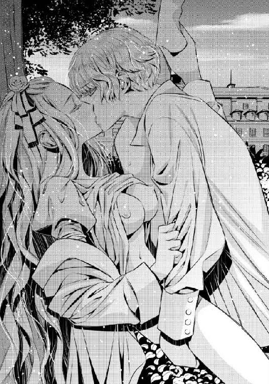
「ん......好き......好きだよ、リュシア。キス、させて......ん」
「......んんぅ......んっ」
くちゅくちゅと舌を絡めながら、エドアルドの突き上げは激しくなる。胸の膨らみが上下に揺さぶられ、それがエドアルドのシャツの生地に擦られ、リュシアの身体に新たな快感を与えてきた。
「......んぁ......あっ」
大きな波が、やってくる。その絶頂の予感を、リュシアは拒むことができない。ただ呑み込まれてわけがわからなくならないように、エドアルドに強くしがみついた。
逞しい背中に、爪を立てた。その痛みも、今のエドアルドには快感への導きだ。突き上げが激しくなる。
「......ああっ!!」
高い悲鳴のような喘ぎを上げて、リュシアは達する。エドアルドもまた、意識を失いかけるリュシアの蜜壷の中に、己の欲望を放った。
☆☆☆
「......ん......」
意識がゆっくりと浮上してきて、リュシアは小さく呻きながら瞳を開いた。
身体が、重い。疲労に似た重みが、全身を包み込んでいる。このままベッドの中に沈み込んで、眠っていたい。......だがそれを阻むのが、身体を優しく撫で回している手だ。
リュシアの肌に、マッサージするかのように優しく掌を這わせてくる。とても気持ちいいのだが、時折感じる場所を丹念に弄ってきたりして、眠りを微妙に遮ってくるのだ。
「......も......やめ、て......」
「気持ちよくない？ 時折可愛い声を上げてくれるから、気持ちいいのかと思ったんだけど」
リュシアの寝ぼけた声に応えたのは、エドアルドのひどく楽しげな声だった。
どうして自分のベッドでエドアルドの声が聞こえるのだろうとリュシアは訝しげに眉根を寄せながら、瞳を開く。......そこに、裸で横たわっているエドアルドがいた。
「......っ!?」
あまりの驚きに、声も出ない。それでも身体は本能的に動き、自分の身体を確認している。......こちらも、一糸纏わぬ姿だ。
「......な......っ」
真っ赤になって、リュシアはエドアルドから飛び離れようとする。だが身体が重く、加えてエドアルドの腕が素早く抱きしめてくれたために、どうにもならない。
「駄目駄目、逃がさないよ。まだ俺は満足してないんだから」
「満足って......あ......！」
エドアルドの身体を隅々まで自分の肌で感じてしまい、リュシアはそのぬくもりに記憶を呼び起こす。エドアルドと結ばれたときのことを、思い出した。
「わ、私......っ」
「うん、そう、思い出した？ リュシア、すごく可愛かったよ」
エドアルドが誉めてくれることは嬉しいが、とにかく恥ずかしい。男性の裸が目の前にあるためどこを見ていいのかわからず、リュシアはぎゅっと目を閉じて身を縮めた。
そんな様子に、エドアルドは笑みを止められない。笑いながら顔を寄せて、リュシアの唇にちゅっと軽く音を立ててくちづける。
リュシアが大きく目を見開き、エドアルドを見返した。
「そんなふうに不用意に俺の前で目を閉じると、すぐにキスしちゃうよ？」
「......あ......う......」
何を言い返せばいいのかわからなくて、リュシアは口ごもってしまう。だが、頬だけは先程よりも赤くなっていった。
エドアルドは笑いながらリュシアをさらに強く抱きしめる。ぎゅうぎゅうと子供が力任せに抱きつくように抱きしめられて、さすがに少し息苦しいほどだ。いやそれよりも、エドアルドとさらに密着することになるため、それが恥ずかしくてたまらない。
「そんなに恥ずかしい？ 俺はもうリュシアの全部を見せてもらったんだけど」
「ぜ、全部って......」
「うん、全部。あのあとリュシアは気を失っちゃったから、俺が君の部屋まで運んで身体を拭いてあげたんだよ。召使いに頼むとまた何かと面倒かなって思ったからね」
確かに、エドアルドの判断は嬉しい。いくら召使いたちとはいえ、エドアルドとの情事を赤裸々に知られてしまうのは、死にそうに恥ずかしい。
「......あ、の......ありがとう、ございます......」
「気にしないで。大したことじゃないから」
エドアルドの柔らかい笑顔に、今更ながらにときめいてしまい、リュシアは俯いた。そして、ふと、気づく。
（今が、いい機会かも......）
リュシアはベッドから降りるため、シーツを身体に巻きつけようと引き寄せる。気づいたエドアルドが、させまいと動きを封じるように再び抱きついてきた。
「逃げるのは駄目でしょ」
「逃、逃げません、から......！」
「なんか、信用できないなあ」
自分で手渡したかったが、エドアルドに取ってもらった方がいいかもしれない。リュシアはベッドから降りるのを諦める。
「あ、あの......では、あのテーブルの上にあるハンカチを......取っていただけますか？」
エドアルドは頷き、ガウンを軽く羽織ってから言われるままにテーブルに向かう。淡いランプ一つだけの部屋は薄暗いが、ハンカチは白いため、淡く光るように見えた。
エドアルドはハンカチを手に取って、軽く目を見張る。刺繍されていることに気づけば、それが何のためのハンカチだったのかわかってもらえるだろう。
「リュシア、これ......」
「あ、あとでちゃんとアイロンをかけてからお渡ししますけど......それが、作っていたものです」
エドアルドが、まじまじとハンカチを見つめた。さすがにそんなふうに見られると、気恥ずかしくなる。
「あ、あの、刺繍は得意な方なんだけど......あ、あんまり上手じゃないかもしれないから......」
「それはないよ。すごく綺麗にできてる」
エドアルドは広げたままだったハンカチを丁寧にたたみ、とても嬉しげな笑顔を見せながらベッドに戻ってきた。
「すごく嬉しいな。あれを、俺にくれるの？ あとでやっぱり止めたって言われても、返さないよ？」
これまた小さな子供のような言葉だ。だがとても喜んでくれているのは、十二分に伝わってくる。
「......あ、あれは、エドアルド殿下のためのものだから......」
「使うのもったいないなぁ。......そうだ。額にはめて飾っておくのはどうかな」
「そ、そんな大層なものじゃないから......!!」
そこまでされると、大げさすぎる。リュシアが慌てて言い返すと、エドアルドがベッドに押し倒しながらくちづけてきた。
感謝のくちづけは、リュシアをとろけさせた。うっとりと目を閉じて受け止めると肌にエドアルドのガウンの感触が触れて、改めて自分が裸であることに気づかされる。
「あ、あの、エドアルド殿下、な、何か服を......着させて、ください」
裸のままで抱き合っているのは恥ずかしい。だがエドアルドは満面の笑みを浮かべて、キッパリと言い切った。
「え、それは駄目。もう一回」
「え......!?」
今度は子供がだだをこねるように、言う。まさか拒まれた上にもう一度とねだられるとは思ってもいなかったため、リュシアは茫然としてしまった。
エドアルドが笑いながら片手で自分のガウンを脱ぎつつ、片手をリュシアの肌に這わせる。
「あ......っ」
「まだまだ夜明けには遠いよ。もう一回したくて、リュシアが目を覚ますのを今か今かと待ってたんだから」
確かに、カーテンの隙間からは光が欠片もこぼれてこない。間違いなくまだ外は夜闇だろう。
「......もう一回、リュシアの可愛い声を聞かせて？」
「あ......っ」
エドアルドが再びくちづけてくる。
すぐさま唇の間にエドアルドの舌が潜り込み、歯列を舐められた。ぴくん、と反応してしまえば、舌が奥まで入り込んで絡みついてくる。
「ん......んん、ふ......っ」
（あ......もう......キス、こんなに気持ちいいなんて......）
くちづけがこんなに気持ちいいものだと、エドアルドが教えてくれた。
リュシアの身体をエドアルドの掌がいやらしく這い回り、さらに指先が感じる場所を刺激して、意識をとろけさせてくる。当然のことながら、リュシアにそれを拒む術などなかった。
リュシアはエドアルドにたっぷりと唇を味わわれ続けて、それが離れたときにはもう、ぐったりとシーツに沈み込んでしまっている。
ふわふわとした感覚に身を委ねていると、エドアルドの唇と舌が胸の谷間を下りて、腹部を下り──さらに下を目指す。どこにくちづけようとしているのかを直感で悟り、リュシアは慌てた。
「エドアルド殿下......っ」
慌てて足を閉じようとしたが、すでにもうエドアルドの身体が間に入り込んでいる。エドアルドはリュシアの内腿を掌で容赦なくぐっと押し広げた。
「あ......いや......っ」
濡れた場所が開かされ、リュシアは両手を伸ばして秘所を隠そうとする。だがそれより早く、エドアルドがリュシアの柔らかい茂みにくちづけていた。
「......あ......っ」
舌が淡い茂みをかき分けて、ひくつく花芽を捉える。たっぷりと唾液を乗せたぬめる舌にねっとり舐められて、リュシアはシーツを爪先で蹴るようにしながら仰け反った。
内股に、エドアルドの金髪が触れて擦れて、それもまたむずがゆいような快感を与えてくる。
「......あ、あぁ......っ!!」
今また新たに教えられる快感に、リュシアは逃れようと身を捩る。さらにはエドアルドの口淫を阻止しようと両手を伸ばし、彼の頭を押し退けようとした。
だがエドアルドは今度は舌先を硬く尖らせて、しこった花芽をくにくにと弄り回す。腰がビクビクと震え、リュシアの両手はエドアルドの髪をきつく握りしめるものへと変わった。
「......あ、ん......っ！ で、殿下......舐め、ないでぇ......」
おかしくなってしまうから、と、髪を握る手にさらに力を込めることで告げる。エドアルドはリュシアの膝裏を両手で押し上げると、仕置きとばかりに花芽に軽く歯を立てた。
「......ん、や、ああぁ!!」
強烈な快感がやってきて、リュシアは達する。蜜がとろとろと滴り、後ろの菊門にまで伝っていく。エドアルドはそれを丁寧に舐めると、小さく笑った。
「痛いよ、リュシア。ひどいなぁ。......でも、可愛い」
「......あ......はあ......っ」
溢れる快楽に呑み込まれて、リュシアは息を乱す。エドアルドはそれを素直に感じているリュシアの様子に満足げな笑みを浮かべると、その細腰を掴んで引き上げた。
蜜壷の入口が真上を向いてしまうほどに引き上げられ、リュシアはかろうじて残っている羞恥によって、腰を引こうとする。だが、達した身体にはうまい具合に力が入らない。
エドアルドは上体を屈めると、蜜壷の入口に軽く息を吹きかけた。細い息は熱くとろけた蜜壷にはひどく冷たく感じられて、リュシアはビクビク震えてしまう。
「すごいよ、リュシア。君のここ、とろっとろ。すごく、美味しそう」
エドアルドの片方の人差し指と中指が、器用に花弁を押し広げる。広げられると中で外気が冷たく感じられて、リュシアは喘いだ。
「......駄目......広げない、で......！」
「でもこうしないと、奥まで舐めてあげられないよ？」
エドアルドの舌が、ぐにゅ、と狭い路に入り込む。指ともエドアルドの男根とも違う弾力のある感触に、リュシアは再び高い声を上げた。
エドアルドはその声に煽られたかのように、激しく舌を抽挿する。くちゅ、ちゅぷ、と蜜とエドアルドの唾液が混じり合う淫らな音が立ちのぼり始め、その音もリュシアの快感を高めていった。
「すごい......どんどん溢れてくるよ。舐めきれない......そんなに、気持ちいい？」
「あ......あふ、う......んっ」
エドアルドの鼻先が、花芽を揺すぶってくる。新たな快楽が腰の奥からやってきて、また達してしまいそうだ。
「んあ！ あ、あ......っ!!」
（も、もう、駄目......っ!!）
再び達しようとしたとき、エドアルドが蜜壷から顔を上げてしまう。突然放り出されてしまったような気がして、リュシアは驚いてエドアルドを見返す。
エドアルドは蜜で濡れた唇を見せつけるように舐め取って、低く笑った。
「物欲しそうな顔しちゃって......その顔も可愛いなぁ」
エドアルドが、リュシアに覆い被さる。張り詰めた太く逞しい怒張が、蜜口に押しつけられた。
「......あ......あ ......」
「......たっぷりあげるから。だから、俺を......俺だけを、感じて」
「んあ......っ！」
ぬぷぷ......、と、エドアルドの雄がゆっくりと入り込んでくる。まだ開かされて間もない入口は、エドアルド自身の凶暴なまでの硬さと熱に、小さく悲鳴を上げるかのようだ。だが、確かに奧から気持ちよさもやってきて、リュシアはしなやかやに仰け反りながらエドアルドを受け入れる。
「......は、あ......ああ ......っ」
「......ん......っ。そんなに、締めつけちゃ駄目だよ。俺の理性が......もたなくなっちゃうでしょ？」
くすりと小さく笑った直後、エドアルドが腰を振った。まろやかな乳房が揺れ動くほどに激しく、腰を揺する。
「......あん......っ！ ああっ!!」
動きについていけず、リュシアは揺さぶられるままだ。エドアルドの肩口に乗ったしなやかな脚が、律動に合わせて揺れる。
「......リュシア......っ!! すごく、いい......っ。ずっと、ずっと、こうしたかったんだよ......っ」
「......ああっ!! や......ん！ は、激し......っ」
リュシアの手が、シーツをきつく握りしめる。エドアルドはそれを見て、少し不満げに言った。
「しがみつくなら、俺にして」
リュシアの手を取り、自分の首に回させる。エドアルドが上体をリュシアに押し倒してきて、身体が二つに折り曲げられる体位だ。結合が深くなり、リュシアは声を高めてしまう。
（恥ずかしい......のに）
何とか声を堪えようとするのだが、まるでうまくいかない。エドアルドの腰の動き一つで、噛みしめた唇が開いてしまう。
「......ん......んあ......っ！ エ、エドアルド殿下......っ!!」
再びの絶頂がやってくるのを感じて、リュシアがエドアルドの首筋に爪を立てる。エドアルドはいっそう激しく腰を揺らしながら、リュシアの耳元に唇を寄せた。
「エドって呼んでよ」
それは、エドアルドの愛称だ。アイリーンと同じように自分もそれを呼んでいいのだと、嬉しくなる。
エドアルドにきゅっと強くしがみつきながら、リュシアは言った。
「......エ、エド......」
直後、リュシアの中を貫いていたエドアルドの雄が、質量を増した。えっ？ と思うと間もなく、エドアルドの律動がさらに激しくなる。
「ごめんね。すごく、感じちゃった」
「あ......ああっ!!」
そんなことで!? とリュシアは慌てるが、それもすぐにやってくる快楽の波に呑み込まれる。リュシアはエドアルドの首の後ろに爪痕を残しながら、彼の放つ熱い迸りを受け止めた。
☆☆☆
「......リュシアさま。起きてくださいませ。もうお昼ですわ」
これ以上の寝坊は許せないと、リザが肩を揺すってくる。下半身がひどくだるく鈍い痛みが残っていて、正直な気持ちを言えば、もう少し眠っていたかった。
だがここではリュシアは賓客だ。陽が高い時間まで寝ているなどと、だらしない姿は見せられない。
リュシアはゆっくりと身を起こした。まだ、エドアルドのあの熱い高ぶりが自分の中に在るように思える。そのため、リュシアの動きはいつもよりも鈍い。
だがリザは何も言わず、甲斐甲斐しく身支度の手伝いをしてくれた。
──あの幸せな情事のあと、リュシアと明け方までベッドに入っていたエドアルドだったが、一応はきちんと理性を働かせてくれて、リュシアの身体を清めて夜着を着せてくれてから、自分の部屋に戻っていった。
眠る前に主の様子を見にきたリザとばったりかち合ってしまったものの、彼女は夜更けに二人が一緒にいることを特に追及したりはしなかった。ただすべてを理解しているかのような笑みを見せて、リュシアを眠らせてくれたのである。
リザに手伝ってもらいながら入浴を済ませ、身軽な淡いピンクのワンピースを身に纏い、髪を整える。ドレッサーの鏡に映る自分の姿は、ひとまず変わったようには見えないのだが。
「さあ、お支度が整いましたわ。すぐにお食事にいたしましょう」
そう言ってリザは、エプロンのポケットから呼び鈴を出し、鳴らした。待っていたかのように扉が開いてワゴンを押した召使いたちが入ってくる。
てっきり食堂で食事をすると思っていたリュシアは、驚いてしまった。
「エドアルド殿下の計らいですわ。今朝は身体がまだつらいだろうから、お部屋での食事の方が楽だろうとおっしゃってくださって」
エドアルドの優しい気遣いに、大切にしてもらえていることがわかって嬉しい。リュシアは恥ずかしげにほんのりと頬を染めながら、微笑んだ。
（......でも待って。私たちが何をしていたのか、リザはやっぱり知っているということじゃ......!!）
「あ、あの、ね、リザ。あなた、私とエドアルド殿下のこと......」
リザが侍女としてではなく、友人や家族のような親しみを滲ませて──けれどもどこか意地悪くにんまりと笑った。
「愚問ですわ、リュシアさま。今のお着替えは誰がしたとお思いですの？ ......しっかり背中に痕をつけてくださってますし」
普段は見えないところにつけるなんてなかなかですわね、とリザは続けてくれるが、リュシアは危うくもう少しで卒倒してしまいそうだった。
陽気で親身なリザはこう言ってくれても、一国の王子と王女が婚約もせず身体をつなげるなど、まずいのではないだろうか。両思いで嬉しい反面、不安が拭えない。
食事の支度が整い、リュシアが席につく。その頃合いを見計らったかのように、部屋の扉がノックされ、エドアルドが姿を見せた。心の準備ができていなかったために、リュシアは危うくもう少しで悲鳴を上げてしまいそうになる。
「おはよう、リュシア。よく眠れたかい？」
実に清々しいすっきりとした表情で言って、エドアルドはリュシアの隣に座る。
「俺も朝食はまだなんだ。一緒に食べてもいいかな？」
もちろん、断る理由はない。エドアルドが傍にいるとどきどきして落ち着かないが、それも彼に想いをよせてこそのことだ。
「ど、どうぞ」
「うん、ありがとう」
リザが召使いに言って、エドアルドの分の食器も用意させる。それが整うのを待ってから、二人で遅い昼食を食べ始めた。
給仕はリザが引き受けてくれて、それ以外の者は下がらせてくれる。おかげで少し気恥ずかしさは残るものの、ゆったりとした気持ちで食事を進めることができた。
「リュシアはもう少し食べた方がいいよ。抱きしめたら折れてしまいそうで、怖かったよ？」
「そ、そんなことはないはずだけど......」
「実際に俺が抱いて感じたことなんだから、絶対だよ。はい、これも食べてね」
言いながら、エドアルドはリュシアの皿に生ハムを取り分けてくれる。エドアルドの気遣いが嬉しくて、リュシアはそれを口に運んだが、含んだ物を喉に詰まらせそうになってしまった。
それは誰が聞いても自分たちが恋人同士のひとときを過ごしたのだとわかる言葉だ。今ここにはリザしかいないが、恥ずかしいことは変わらない。
「あ、あの、エドアルド殿下、そ、そういうことを人前で気軽には......」
「エド」
エドアルドがとたんにひどく不満げに言う。何を言われているのかわからなくて、リュシアはきょとんと小首を傾げた。その様子に、エドアルドはますます瞳を険しくする。
「何？ もしかしてわからない？ だったらお仕置きしなくちゃいけないね」
「え......っ」
お仕置きと聞いて、リュシアの身体が少し強張ってしまう。昨夜の情事のことを思えばそれが痛いことではないとよくわかっているが──その分、昨夜よりももっと恥ずかしくて淫らで、けれどもとても気持ちがいいことをされてしまうのだろう。
「......や......駄目、です......っ」
少し怯えた声で言うと、エドアルドは苦笑した。
「リュシア、そういう顔されると、ますます意地悪したくなっちゃうんだけど」
リュシアは慌てて頬を両手で押さえてしまう。自分は今、どんな顔をしているのだろうか。
その仕草が、エドアルドをますます楽しげに笑わせた。リュシアは恥ずかしくなって身を縮めたものの、彼の笑い声を聞いているとまあいいかと思えてくるから不思議だ。
（エドアルド殿下が......エドが、楽しく笑っているなら、それでいいんだわ）
「ちゃんと、エドって呼んでね。俺たちはもう恋人同士なんだから」
「ど、努力......する、わ......」
どうしてもまだ気恥ずかしさの方が上回ってしまって、すぐには呼べそうもない。リュシアが今できる精一杯の約束に、今度はエドアルドの文句はなかった。
「うん、楽しみにしてるよ。......あ、リュシア。フルーツも食べよう」
水洗いされた雫がまだ少し残っているいろいろな果実が、ガラスボウルに入っている。その中から赤く熟れた苺を摘み取ると、エドアルドがリュシアの唇の前に差し出した。
「はい、あーん」
「え!? ......そ、それって......」
「うん。食べさせてあげるよ」
にこにこと笑いながら、エドアルドは至極当然のこととして言う。リュシアは息を詰め、エドアルドの表情をうかがった。
エドアルドの笑顔は崩れず、軽く苺を振って先を促してくる。......これは、何がなんでも食べないといけないようだ。
ちらりとリザを見ると、彼女はさりげなく目を逸らしてくれている。リュシアはそれにひとまず安心し、勇気を振り絞って苺に噛みついた。
一口で食べきることはできず、半分だけをかじり取る。残りはエドアルドの口に入れられた。
「......あ......」
食べ方がうまくいかなかったようで、苺の果汁が唇の端からこぼれる。リュシアが指で拭おうとすると、エドアルドがふいに身を寄せて舌で舐め取った。
「......エド......っ」
リュシアのたしなめの声は、エドアルドのくちづけによって吸い取られた。リュシアの心をざわめかせるような、官能的なくちづけだ。だが完全に二人きりではないために、リュシアは甘い声を漏らしそうになるのを必死に堪える。
エドアルドはすぐに唇を離して、こつんと額を押しつける。間近になった緑の瞳は、いたずらっ子のような笑みを浮かべていた。
「ごめんね。我慢できなかったんだ」
「......お、お願い......我慢、して......」
「努力はするけど保証はできないな。だってリュシアが可愛すぎるから」
「......」
（エドって......こういう人だったのかしら......）
全身で力いっぱい好きだと告げてくれるのは、とても嬉しい。だがもう少し他人の目を気にしてほしいと思うのは、わがままだろうか。
エドアルドはひとまず満足したのか、リュシアから身を離して、椅子に座り直した。
「......でも、一旦はコルディーナ国に戻ってもらわなくちゃいけないけどね」
ひどく不満げにしながらも、エドアルドは言う。リュシアは驚いて見返した。
「ど、どうして......!? わ、私はコルディーナ国に帰るつもりはないと......」
まだ誤解されてしまっているのかと、リュシアは焦ってしまう。エドアルドは安心させるように微笑みかけた。
「大丈夫だよ、もう変な誤解はしてないから。でも、リュシアはコルディーナ国の王女だからね。フレディアス国の王子として、ちゃんとした結婚の申し込みの手順を踏まないと、外聞が悪くなってしまうし。......俺は何言われてもまったく構わないけど、リュシアが悪く言われるのは絶対に嫌だから」
「エド......」
エドアルドの言葉が、リュシアにはとても嬉しい。エドアルドは笑って、顔を寄せてきた。
「俺のプロポーズ、受けてくれるよね？」
「......え、ええ......もちろん......!!」
「よかった。......まあ今更嫌だとか言われても逃がさないけど」
冗談には思えない凄みのある声に、リュシアは少々ひきつった笑みを浮かべる。......エドアルドならば、やりかねない。
「......少しの間離ればなれになるけど、ごめんね」
エドアルドがひどく申し訳なさそうに言って、頭を撫でてくる。小さな子供をあやすような仕草に、自分がとても気遣ってもらえているのが感じ取れる。リュシアはエドアルドを安心させるように、笑いかけた。
「ええ、大丈夫よ。もう小さな子供ではないんだもの。ちゃんと、エ、エドを信じて、待っているわ」
エドアルドが望んだ通りの愛称を入れて、言ってみる。少しドキドキしながら反応をうかがうと、エドアルドは少々驚いた顔をしたあと──ひどく嬉しそうに破顔した。
「......どうしよう、またキスしたくなっちゃったんだけど。どうしてくれるの？」
「え......ええっ？」
ずいぶんな責任転嫁にリュシアはどうしたらいいのかわからず、戸惑ってしまう。その隙を逃さないエドアルドによって、リュシアはまた唇を奪われてしまうのだった。
☆☆☆
家族が団らんのために集う居間でゆったりと午後のひとときをくつろいでいた彼らは、話に驚き──けれどすぐにそれぞれ喜びの顔を見せてくれた。
「まあ！ まあまあまあ！ エドアルドったら、いつのまにリュシアと仲良くなっていたの!?」
一番喜んだのは娘が欲しかったと言っていた王妃だ。彼女は娘時代に戻ってしまったかのようにひどくはしゃいだ様子で、ひとしきり喜んだあとにそう問いかけてくる。エドアルドは伏し目がちの笑みを唇に浮かべた。
「ずっと以前からですよ」
（ずっと、以前から......）
その言葉は、これまでに何度か耳にしたものだ。だが、こう言わせるほどの過去に心当たりがまるでない。
「まあ、お前のことはこの際後回しで構わん。何よりも姫の気持ちが優先だ」
「はい、父上。まさにその通りです」
マシューが頷き、リュシアの手を取った。
「姫、兄上でよろしいんですか？」
聞きようによってはずいぶんエドアルドを馬鹿にしているようにも聞こえる。予想通り、エドアルドは傍目にもわかるほどに憮然とした顔だ。
リュシアは小さく笑ってしまいながらも、頷く。彼らの前で少し緊張していたが、おまじないを使うほどでもない。むしろ、隣にエドアルドがいるなら、自然と話ができるかもしれなかった。
「はい。エドアルド殿下がいいんです」
「わかりました、義姉上。あなたのお望みのままに」
マシューが恭しくリュシアの手の甲に唇を押しつける。まだ少しの幼さを残しながらも、その仕草は立派な紳士のものだ。エドアルドと面影がよく似ていることもあって、リュシアの鼓動がドキドキと高まる。
手の甲から顔を上げると、マシューはにこっと子供のようなあどけない笑みを見せてきた。......このあたりがエドアルドとは違う。
リュシアは照れくささに少し頬を赤くしながらも、マシューに微笑みかける。だが直後にエドアルドの腕が伸びて、抱き寄せられた。
「マシュー？ 俺の目の前でリュシアといちゃいちゃするってどういうことだい？」
「すみません。姫があまりにも可愛らしくて、思わず......」
（や、やっぱりエドの弟かも......）
エドアルドの機嫌がますます悪くなりそうになって、リュシアは慌ててしまう。そこにやんわりと声を投げるのは、王妃だ。
「まあまあ、リュシアったら人気者ね。二人とも、リュシアを気に入ったのはわかるけれど、困らせるのはいけないわ」
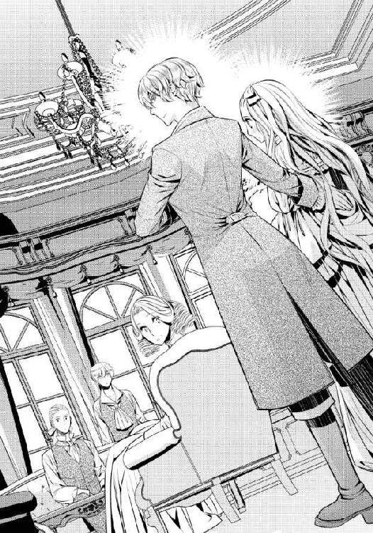
「......」
エドアルドとマシューは、途端に気まずそうな顔になる。国王が必死に笑いを堪えた。
「エドアルド、お前とリュシア姫との結婚を、私はとても喜ばしく思う。これで、父上の望みも叶った」
（陛下のお父上......前フレディアス国王、アルフレッドさまのこと？）
ソファの柔らかい背もたれに深く背中を沈ませながら、国王は満足げな笑みを浮かべて続ける。どこか独白にも似た呟きを、王妃があたたかい瞳で見守った。
「もしも叶うのならば、父上の血を継ぐ者とカーラ様の血を継ぐ者が結ばれたらいいと、よく言っていた。自分たちの叶わなかった想いが、そうすれば成就するように思える、とな。こればかりは人の心だから無理強いもできんと思っていたが......両国にとって、とてもよきことだ」
「そんなことが......」
「それにエドアルドは以前からずっと、自分の妻にはあなたじゃなくちゃ駄目って私たちにうるさいくらい言っていたのよ。よかったわね、エドアルド。リュシアもあなたを好きになってくれて」
王妃がからかうように言ってくる。エドアルドは一瞬だけふてくされたような顔を見せたものの、すぐに言い返した。
「これが俺の頑張った成果というところですよ」
どうしてそんなに前から好きになってくれたのか、ここで尋ねてしまったら、覚えていない自分が恥ずかしいような気がする。リュシアはウズウズする気持ちを必死に抑えた。......自分たちはこれから共にいられる時間をたくさん約束されているのだから、問う機会はまたあるだろう。
「リュシア」
王妃が軽く手招きをしてくる。リュシアはソファに座った彼女の足元に腰を下ろした。
王妃が手を伸ばして、リュシアの髪を撫でてくる。その仕草はとても優しくて、同時に心地いい。
「あなたが私たちのところに来てくれるなんて、夢のようよ。正式な婚儀の段取りのために一度帰ってしまうのが寂しいわ」
「大丈夫ですよ、母上。すぐに迎えにいきますから」
「ふふっ。そうね。あなたの我慢が利かなくなるわよね」
「ええ、そうです。あまり我慢させると反動が怖いんですよ」
エドアルドが少々物騒なことを口にする。息子の素直すぎる発言に国王はひとしきり笑ったあと、場を取り成すように軽く咳払いした。
「エドアルド、ではすぐに正式な婚儀の申し出を進めなさい。姫をお待たせしないように」
「......それは、本当のことですか？」
アイリーンが驚きのためか、シュガーポットのスプーンを半端に持ち上げたままで動きを止めた。王妃がそれに気づき、代わりにスプーンを受け取って砂糖を入れてくれる。
アイリーンははっと我に返り、慌てて言った。
「ありがとうございます、王妃さま」
「いいのよ。お砂糖は一つでいいのよね」
アイリーンの好みを、王妃は知っていて、それだけアイリーンは国王家族の中に受け入れられている。......かなり羨ましい、とリュシアは思う。
エドアルドがリュシアとのことを報告した翌日、王妃はアイリーンも招いて女同士の気楽なお茶会をし、そこで昨日のことを彼女にも教えてやっている。
「あなたがブレンドしたお茶は、とても美味しいわ。心が安らぐわね」
「......ありがとうございます。でも、そうですか......リュシアさまと、エドが......」
すぐにアイリーンは驚きから復活して、リュシアを見つめ返す。その瞳に一瞬刺すような鋭さを感じて、リュシアは思わず目を逸らした。
「エドはずいぶんリュシアさまのことを気に入っているとは思いましたけど......結婚まで考えていたとはね」
「でも、それも当然のことなのよ。あの子はずうっとリュシアのことを想っていたから」
（......あ、また......）
ずいぶん昔からエドアルドはリュシアのことを知っていたような口ぶりだ。
確かに兄ユリウスとエドアルドは仲のいい友人だが、そこにリュシアは関わっていない。年頃になってもリュシアが大伯父のトラウマのせいで内気で、外交的な仕事にはつかなかったため、知識としてエドアルドを知っていても実物を知ることはなかったのだ。
「あの......王妃さま。エドアルド殿下はどうして私のことをそんな昔から......？」
「......あら。ごめんなさい、あの子はまだ話してないのね？」
リュシアは小さく頷く。王妃は少し困ったように笑った。
「あの子が話してないんだったら、私からは何も言えなくなってしまうわ。ごめんなさいね、リュシア」
つまりは自分で聞けということだ。リュシアは残念な気持ちを隠して、笑みを浮かべる。
「わかりました。今度、エドアルド殿下に聞いてみます」
「そうしてちょうだい。ああ、でも、早く婚儀の日にならないかしら。私にこんなに可愛い娘ができるのよ！」
まだ少女のような無邪気な一面を持つ王妃は、その日を想像してずいぶん楽しそうだ。自分が思った以上に受け入れられていることを感じて、リュシアは嬉しくなる。
「でも......リュシアさまで大丈夫かしら......」
アイリーンがぽつりと呟いた。誰かに聞かせるつもりで言ったのではないらしく、リュシアたちが目を向けるとそれに気づいて慌てて首を振ってくる。
「ご、ごめんなさい。変な意味じゃないんです。ただ、フレディアス国は大国で、リュシアさまのようにおとなしい方には、いろいろと大変なこともあるのではないかと思って......」
政治的な争いが、起こらないとも限らない。また大国ゆえに、エドアルドの伴侶としての仕事も、コルディーナにいた頃よりもぐんと多いだろう。リュシアの今の引っ込み思案な性格では対応しきれるのかどうか、アイリーンが心配するのも当然と言えた。
リュシアは、膝の上で両手をぎゅっと強く握りしめる。
（確かに、アイリーン嬢の言う通りだわ。今の私では、不安になる人の方が多い......）
──でも。
リュシアはさらに強く指を組み合わせる。こんな大言を口にしてしまってもいいものかどうか怖くもあった。......だが、怯えていては何も始まらない。
（このままじゃいけないって思ったから、あの日もおばあさまにおまじないを頂いたのよ）
「......す、すぐには無理かもしれないけど......アイリーン嬢が不安にならないように、が、頑張る、わ」
「......」
アイリーンがひどく冷めた目で見つめてくる。俯いていてもそうだとわかるほどの視線だ。リュシアはドキドキしながら、アイリーンの次の言葉を待つ。
......いったいどれだけの時間が経ったのだろうか。肩を縮めたままでいるリュシアに、やがてアイリーンはため息をつくように、笑いかけた。
「ごめんなさい、余計なことを言ってしまったみたいで......ただ、リュシアさまを心配しただけだと思っていただけると......」
「気、気にしていないわ！ し、し、心配してくれて、ありがとう......」
リュシアの言葉にアイリーンも安心したのか、笑みを浮かべた。気まずくなってしまいそうな空気は、何とか和やかに保たれる。
そのとき、扉がノックされた。
「母上、よろしいでしょうか」
エドアルドの声だ。リュシアの鼓動が一つ大きく跳ねる。
王妃が入室を許可すると、扉が開いてエドアルドが姿を見せた。そしてそのあとから、よく見知った青年が続く。
青年は入口でまずは立ち止まると、優雅に一礼した。
「ご歓談中、失礼します。妹を迎えに参りました」
「──兄さま!!」
はしたないとわかっていても、リュシアはソファから立ち上がって兄の元へと走る。数日しか離れていなかったが、その間にリュシアには大きな変化があったためか──ひどく、懐かしく感じられた。
ユリウスが仕方なさそうに微笑み、両腕を広げた。リュシアはその中に飛び込む。
「兄さま！ 兄さまが迎えにきてくださったの!?」
まさかユリウスが迎えにきてくれるとは思わなかったため、嬉しい驚きだ。リュシアは一度ユリウスの胸に顔を埋めたあと、勢いよく上を向いて笑いかける。
「エドアルドと、お前とのことで打ち合わせしておきたいことがあったからな」
わざわざ確認しなくてもわかる。それは婚儀のことだ。
リュシアは気恥ずかしげに頬を赤くする。
「兄さま、わざわざありがとう」
「可愛い妹のためだ。大したことじゃな......」
「──で、いつまでくっついてんの？」
エドアルドがにっこり笑って兄妹の肩を掴み、べりっと引き剥がした。ユリウスの方はそのまま放置し、リュシアを自分の腕に抱きしめる。
あまりにもあからさまな態度に、ユリウスは心底呆れた表情だ。
「お前......子供か!? 俺はリュシアの兄だぞ!? お前にそんなふうに警戒される謂れはな......」
「俺以外の男は、全部駄目」
悪びれもせずに、エドアルドは答える。これほどまでだと、いっそ清々しいほどだ。
ユリウスは呆れを隠しもせずに大きくため息をついたあと、王妃とアイリーンの手を順に取って、甲に挨拶のくちづけをする。二人もまた、同じように呆れた顔だ。
「ごめんなさいね、ユリウス。あの子ったらはしゃいでしまって......」
「みっともないわよ、エド。大臣たちが見たら情けないって嘆くわ」
二人の言葉は実に正論だ。リュシアはエドアルドから適切な距離を保とうとするものの、彼の片腕がしっかりと腰に絡んで抱き寄せているために、わずかばかりも離れることができない。
王妃はユリウスに労いの言葉をかける。
「ユリウス、すぐに帰ってしまうの？ できたら、明日にしてはいかが？ 陛下もあなたとお話しされるのは好きなのよ」
「......それは......」
ユリウスが、ちらりとエドアルドを見やる。エドアルドは何とも言えない複雑な顔をしていた。
早く帰国すれば、それだけ婚儀の手続きが進む。だが、リュシアを一時手放すことになり、それがエドアルドには不満でもあるようだ。
「......お言葉に甘えて、晩餐をご一緒にさせて頂けたらと」
どちらも選べないエドアルドの代わりに決断を下すと、王妃が満面の笑みを浮かべて頷く。
「陛下がお喜びになられるわ！」
「では、陛下とのお目通りの準備が整うまで、こちらでお茶をいかがでしょう？ 私がブレンドしたお茶は、王妃さまにもご好評を頂いてますのよ」
答えを待たずに、アイリーンは召使いに新たなカップを持ってくるように命じている。アイリーンなりの客人へのもてなしだと思えば、ユリウスに断る理由はない。
「では、ありがたくいただきましょう」
「エド、あなたも飲むわよね？」
それ以外の言葉は許さないとでも言うような感じを受ける強い言葉だ。リュシアは一瞬訝しげに眉根を寄せたものの、エドアルドが仕方なさそうに頷いたためにそれ以上は何も言えなかった。
「わかったよ。いただこうか」
ユリウスをまじえた晩餐のひとときを過ごしたあと、リュシアは自室に戻って就寝の準備をしていた。
夜着に着替え、入浴でまだ少し湿った銀の髪をとかしつける。それが終わればリザは就寝の挨拶をして、退室した。
「では明日、また起こしに参りますわ。おやすみなさいませ」
「ええ、おやすみなさい」
思いがけないユリウスの迎えでまだ気持ちが高まっているのか、すぐには寝つけない。リュシアはベッドに半身を起こして、持ち込んでいた本を読んでいた。
明日には、ユリウスとともにコルディーナに帰る。新たな未来をつくり出すために、必要なことだが──なんだかひどく寂しくも思える。
できれば眠れないこの時間、エドアルドと話をしたかった。だが彼も、この時間ならもう眠っているだろう。起こしてしまうのも、申し訳ない。
リュシアは本を閉じて、軽くため息をついた。
本の内容は何も頭の中に入ってこず、眠るための手段にもなっていない。気づけばエドアルドのことを考えてしまっている。
（恋をするって、こういうことなの......）
薄れていく思い出の中にいた『王子さま』を想う気持ちは、もっと優しく甘くて、あたたかいものだった。だがエドアルドのことを考えるときは、ここに熱や激しさが加わる。
アイリーンに感じた嫉妬の気持ちなど、その最たるものだ。
（......今ならよくわかるわ。私は幼くて、恋に恋をしていたのね......）
ノックの音が響いたのは、そのときのことだ。夜更けという時間帯もあって、リュシアはビクリと身体を震わせてしまう。
「だ......誰？」
「ああ、よかった。まだ起きていてくれてた」
エドアルドの声で、ほっとする。リュシアは急いでベッドから降りると、ドアに向かった。
ドアを開ければそこに、エドアルドがいる。少しだけ気まずそうな表情なのは、こんな時間に来訪してしまったがゆえか。
「ごめんね。顔が見たくなっちゃって」
リュシアは小さく笑って、首を振った。
「私も......同じ。明日には帰国してしまうし、エドと、お話しできないかなって......思ってたの。だから、顔が見れて嬉しいわ」
エドアルドが軽く息を呑んだあと、扉を腕で押し開けながら室内に踏み込んできた。少し荒っぽい仕草に驚くリュシアの腰を抱き寄せて、エドアルドがくちづける。
「......んう......っ」
唇を強引に押し広げて、舌を差し入れる。すぐさま絡め取られ、くちゅくちゅと唾液の音をさせながら、深く激しくくちづけられた。
「......エ、エド......っ」
くちづけながら後ろ手に扉を閉めて、エドアルドがわずかに唇を離して言う。
「......ごめん。抱きたい」
欲望をむき出しにして熱く囁かれると、身体がゾクゾクしてくる。リュシアは真っ赤になりながらも、小さく頷いた。
「で、でも......優しく、して......？」
くちづけが激しく熱くて、リュシアはその先におののきを覚えてしまう。エドアルドはリュシアをひょいっと横抱きにすると、ベッドに運びながら言った。
「どうかな、難しいかも。これからしばらくはリュシアに会えなくなっちゃうわけだし」
ぼふん、と軽くベッドの上に落とされる。慌てて起き上がるとベッドに座った格好になり、その背後にエドアルドが忍んできた。
リュシアの腰に片腕を絡めて、引き寄せてくる。膝を立てたエドアルドの足の間に、リュシアの身体がすっぽりと納まった。背中にエドアルドの体温を感じるが、顔が見えなくて少し不安になる。
「あ、の......エド......」
エドアルドの片手がリュシアの顎を捕らえる。こちらを振り向かせると、肩越しに覆い被さるようにくちづけてきた。
「......ん......んう......っ」
舌が押し込まれ、絡みついてくる。すぐさま息が上がって、リュシアは酸素を求めて首を振った。
だがエドアルドはリュシアの腰にしっかりと片腕を絡めて動きを縛め、唇を味わいながらもう片方の手で身体を探ってきた。薄布の夜着越しに、エドアルドの手が熱く感じられてドキドキする。その手が官能的に動きながらリュシアの夜着の肩紐を滑り落とし、下に押し下げて胸を露わにした。
ふるん、と現れた柔らかな膨らみにエドアルドは楽しそうに笑い、掌で包み込んでこね回す。
「......あ......んん......っ」
「リュシアの胸、柔らかくて気持ちいい。マシュマロみたいだ」
「......や......っ」
エドアルドの指が、乳首を捕らえた。指で摘み、指でこね回す。リュシアは涙目になって、身じろぎした。
「......あ......あ、んっ」
知らずに甘い声を上げると、エドアルドが熱い吐息をついた。
「可愛いなぁ......ね。舐めていい？」
「え......あ......っ！」
リュシアの返事を待たずに、エドアルドは体勢を変えてくる。
リュシアを仰向けに押し倒して覆い被さってくると、胸に顔を埋めた。そしてねっとりと乳首に絡んでくる。軽く吸われて、リュシアは仰け反った。
「......や、ん......駄目、それ......っ」
エドアルドの舌が尖り、くりくりとなぶるように動く。痺れるような快感にはしたない声を出してしまいそうで、リュシアは首を打ち振った。身じろぎの際に美しい銀髪がシーツの上に散って、広がる。
「......ああ、これが気持ちいい？ じゃあこうしてあげる」
エドアルドが両手で乳房をそれぞれ掴み、中央に押し寄せた。乳首も寄せて、舌で左右になぶる。リュシアはシーツをきつく握りしめた。
「や......んっ、違......っ！ あぁ......っ」
「可愛い......それに、リュシアの胸、甘いし......肌も白くてほんとにマシュマロかも」
かぷっ、と甘噛みされて、リュシアは小さく声を上げる。
「や......食べちゃ、駄目......」
涙目になりながらリュシアは薄く瞳を開き、エドアルドを見る。欲情にまみれた顔は野性的な艶を放っていて、見ているだけでリュシアをどきどきさせた。
直後、リュシアは視界に入る燭台の灯りに気づいて慌てた。
「......エ、エド......！ あ、灯り......消し、て......っ」
淫らな様子を、エドアルドに見られてしまう。エドアルドはくすくす笑った。
「なんで？ リュシアの身体、とても綺麗だよ」
「い、いや......恥ずかしい、から......っ」
「恥ずかしがる顔も、可愛いからいいんだ」
駄目だ。何を言ってもエドアルドには通じない。リュシアは必死で考えを巡らせて、エドアルドに言った。
「あ、灯り、消してくれなくちゃ......き、嫌いになる、から......っ」
自分でもずいぶんと子供じみた反論だ。こんな攻撃がエドアルドに通じるとは思わなかったが、効果はてきめんで、エドアルドは渋々頷く。
「......そう言われちゃうと、困る。言うこと聞かなくちゃいけなくなるよ」
「え......」
エドアルドが上体を起こし、燭台に息を吹きかけた。三本の蝋燭の灯りのうち、二本が消えた。
「真っ暗になっちゃうから、これだけは許してね」
わずかな空間だけを照らすこの程度ならば、恥ずかしさもだいぶ薄らぐ。リュシアは小さく頷いた。
エドアルドは嬉しげに笑って、リュシアの太股を撫でる。その手がさらに内側に入り込んで、 リュシアの濡れた場所を指先でなぞった。
「......あ、ん......っ」
「......でも暗いから......ちょっとくらい恥ずかしいことも大丈夫だよね」
「......え......あ......っ」
エドアルドの片腕がリュシアの身体に回り、位置を変えた。
うつ伏せにさせて、腰を掴んで引き上げる。バランスを崩し枕に顔を突っ込んでしまいそうになって、リュシアは思わず四つん這いになった。
エドアルドは後ろの双丘を掴むと、指に力を入れる。くぱ......っ、と、押し広げられる感覚に、リュシアは息を呑んだ。
「や......な、に......!? そんなの......駄目......っ」
そんなふうにされたら入口が露わになってしまう。リュシアは身を捩って逃げようとするが、エドアルドが許すわけもない。
リュシアの抵抗を阻むかのように身を屈め、割れ目に舌を潜りこませた。
「ひぁ......!!」
弾力とぬめりを持った舌が、蜜壷の入口を舐め回してくる。蜜を滲ませた肉厚の花弁だけではなく、さらに上がって菊門の狭まりも舐めてきた。
「......いや......!! そこは、汚い......!!」
「大丈夫、安心して。リュシアに汚いところなんて一つもないよ。君は身体も、心も......とても綺麗なんだ。だからもっと......味わわせて」
尖らせた舌が、菊門をくりくりと揉みほぐしてくる。中に入りたげな仕草に、リュシアは首を振った。
「いや......そこ、怖い......っ」
「うん、わかった。まだリュシアには早いね。じゃあ......ここならいい？」
エドアルドの舌が下りて、蜜壷を愛撫する。教えられた快楽はリュシアを喘がせた。
「......え、ええ......そこなら......いいわ......」
自分が大胆な返答をしていることにも、リュシアは気づけていない。エドアルドは低く笑うと、リュシアの濡れた秘花をたっぷりと舌で可愛がり始めた。
「じゃあ......たっぷり、舐めてあげる」
「......あ、ああ......っ！ そんな、ふうに、舐めちゃ......っ」
おかしくなってしまいそうなほどに舐め回されて、リュシアの女としての未熟な身体はあっという間に絶頂に駆け上がっていった。
「......あ......っ」
くったりとシーツにうつ伏せに倒れこんだリュシアの腰を、エドアルドは再び引き上げる。とろけた割れ目に、ぬち......っ、と押しつけられたのは、エドアルドの怒張だ。
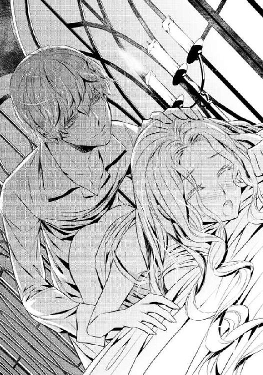
「......ん......リュシア、入れる、よ......」
「......あ、うん......っ」
初めてのときとは違う角度のためか、感じる場所を新たに知ってたまらない。獣のような体位なのに、と恥ずかしくなるが、エドアルドのいやらしい腰の動きに、喘ぎしか出てこなかった。
エドアルドの腰は、リュシアの感じる場所を探るように動く。そうやって教えられる新たな快感の場所に、リュシアは背をしならせて高い喘ぎを上げた。
「......あ、あっ、あ......も、もう......っ」
新たな高みがやってくる。リュシアはシーツに額を擦りつけるようにしながら、嘆願した。
エドアルドは上体を倒し、リュシアの肩口から耳元に囁きかける。
「もうイッちゃいそう？ 俺はまだなのに？」
ぐちゅぐちゅとつながった場所から淫らな水音をさせながら、エドアルドの雄が出入りする。少し強めに奥を押されると身体が大きく跳ねて、エドアルドを置いて達してしまいそうだった。
それだけは何とか避けようとシーツを握りしめるが、長くはもたない。エドアルドはリュシアの背中に覆い被さりながら片手を伸ばし、震える手を包み込む。
「リュシアが一生懸命我慢してくれてる顔が見れないのが、残念。今度、ちゃんと見せてね」
「......あ......っ！」
なんだかとんでもないことを言われたような気がするが、今のリュシアにはもうわからない。エドアルドが、激しくリュシアを貫き、揺さぶる。
「......エ、エド......っ!!」
高い喘ぎとともにリュシアは達する。エドアルドの手が、きつくリュシアの手を握り返した。
熱い迸りを身体の一番奥で受け止めて、リュシアは大きく息をついた。エドアルドも熱い息を吐き出して、リュシアの頬にくちづける。
「大好きだよ、リュシア。俺がいない間、浮気なんかしたら絶対に許さないからね」
「......そんなこと......しない、わ......」
情事の気だるさに意識を失ってしまいそうになりながらも、リュシアは反論する。エドアルドはその答えに嬉しげに笑った。
「リュシアなら、そう言ってくれると思ったよ。でも......そうだな。だったら離れている間ずっと俺のことを考えてくれるように──新しいハンカチをおねだりしてもいい？」
「ハンカチ......？」
エドアルドはリュシアの頬に軽くくちづける。
「うん、そう。リュシアの刺繍が入ったハンカチ。もう一枚、欲しいな」
浮気なんて絶対しないのに、その独占欲が嬉しくて、リュシアはエドアルドに満面の笑みを返す。
「わかった、わ......新しいハンカチを、もう一枚作って......待ってるわ」
「じゃあ、ほんの少しだけ離ればなれだけど、すぐに迎えにいくからね」
馬車の中に入ったリュシアに向かって、エドアルドは言う。マシューや国王たちもわざわざ見送りに来てくれて、リュシアは嬉しかった。離れがたいものがどうしても消えなかったが、エドアルドと一緒にいるためだと自らに言い聞かせる。
アイリーンも見送ってくれて、エドアルドの言葉に続いた。
「ぐずぐずしているようだったら、私が叱りつけますから安心してくださいね」
「......まあ、アイリーンったら......」
エドアルドと結ばれたことを知ったときのアイリーンには、なんだか怖いような感じを受けたが、こうしてみると気のせいだったのだろう。フレディアス国でできた初めての友達だと、改めて思う。
「アイリーンにも、手紙を書くわ。返事をくれる......？」
「ええ、嬉しいですわ！ お待ちしています！」
アイリーンとの話が終われば、一通りの別れが終わる。ユリウスが御者に出立を伝えると、御者は馬車の扉を閉めようとした。
「あ、ちょっと待って。忘れもの」
エドアルドが言って、馬車の中に上体を入れる。何を忘れたのかとリュシアが問いかけようとエドアルドに身を寄せると──ふいに肩を掴まれて引き寄せられた。そして。
「......んん......っ!!」
素早く唇を奪われて、リュシアは大きく目を見張った。ユリウスが、がたっと席からずり落ちそうになる。
「ハンカチ、楽しみにしてるからね。ずっと俺のことを考えててよ？」
耳元で囁いたあとエドアルドはすぐにリュシアを離し、何事もなかったかのように馬車を降りる。リュシアは真っ赤になったまま動きを固まらせた。
そんな中で、御者は何も見なかったかのように扉をそっと閉める。素晴らしい下男としての心得だ。ユリウスが我に返り、固まったままのリュシアの身体をきちんと席に座らせてやる。
馬車が、ゆっくりと走り出した。その揺れをしばらく感じたあとようやくリュシアは耳まで真っ赤になって、自分の頬を両手で押さえた。
「......や、やだ、もう......」
「......エドアルドはずいぶんとお前に惚れているようだな」
一瞬とはいえ兄にくちづけを目撃され、リュシアは何を言えばいいのかわからない。身を縮める妹の様子に、ユリウスは苦笑する。だがそこには妹への優しさだけが含まれていて、リュシアは恐る恐る顔を上げることができた。
向かいの席に座ったユリウスが、片手を伸ばしてリュシアの頭を撫でる。幼い頃によくこうして頭を撫でてもらったことが、思い出された。
「エドアルドで、いいんだな？」
初恋の王子さまのことを問うているのだと、わかる。リュシアは強く頷いた。
「あの子は、憧れの人だったの」
──まだ、恋に恋していたときの。
ユリウスが、伏し目がちに小さく笑う。
「......そうか」
しみじみとした口調には、兄から妹に向ける愛情が感じられる。ユリウスがリュシアの頭から手を離し、両腕を広げた。
「......おいで」
言われるままに兄の腕の中に身を寄せる。お互い結婚もそろそろと言われるほどの年頃になっていたため、こんなふうに身を寄せ合うのは、ずいぶんと久しぶりだ。
「ついにリュシアも結婚か......なんだかしんみりしてしまうな」
「兄さま......なんだか父さまみたいですよ」
「ああ。なんだか父上の嘆きがわかったような気がする。とにかく娘はつくらない方がいいと思ったぞ。妹だってどんなに可愛がってもいなくなるんだからな！」
「......兄さま......」
意外なところで妹に甘い人だったのだと実感して、リュシアは嬉しいやら情けないやら、なんとも言えない複雑な気持ちだ。
だがその頬には、満面の笑みが浮かんでいた。
第四章 囚われの王子さま
「......一週間、ですわ......」
おどろおどろしい空気を背後に立ち昇らせながら、リザが言った。リュシアは庭のガーデンセットで刺繍をしていたが、その声の低さに驚いて顔を上げる。
リュシアのためのティーセットを銀のトレーに載せたリザが、ひどく険しい表情でこちらにやってきた。顔は険しいけれども、召使いとしての手際は完璧だ。リュシアの前にふくいくとした香りとともに、ティーカップが差し出される。
刺繍の手を休め、礼を言ってカップを受け取る。口に含めばいつもと変わらずに美味しい。
「どうしたの、リザ。怖い顔をして」
「怖い顔もしますわ！ リュシアさま、もう一週間でしてよ！ この間、エドアルドさまからのお返事は一切なし！ 加えて、リュシアさまへの婚儀のお話もまったく来ません！ これはいったいどういうことですか!?」
「......それは......」
リュシアは答えを持たない。リザの怒りは当然のことだった。
コルディーナ国に戻ってきてから、すでにもう一週間が経っている。その間、リュシアは毎日のようにエドアルドに手紙を送っていたが、一度も返事は返ってこなかった。......彼にねだられたハンカチも、すでに一枚は完成してしまい、二枚目に入っていた。
同時に、婚儀の申し出もいっこうに進んでいない。リュシアの両親は結構温厚な性格だが、この件の遅さについては怒りを見せ始めている。
ユリウスの方もエドアルドに連絡を取ろうとしてくれているが、返信はないようだった。
「リュシアさまを離したくないとかおっしゃっていましたけど！ だったら早く迎えに来なさいというのが、私の正直な気持ちですわ！ 何をぐずぐずしていらっしゃるんでしょうかね!?」
「そ、それは......何か、理由が......」
リュシアは口ごもる。......考えないようにしていることを改めて突きつけられていた。
（どうして、何の返事もないの......？）
返事がないと、フレディアス国で過ごした日々が、すべて夢だったのかと不安になってくる。自分を好きだと言って求めてくれたエドアルドという青年が、実際のところは存在しなかったのではないかと。
（ううん、私はちゃんと覚えているわ）
リュシアは己の腕で自分を抱きしめた。
目を閉じれば、エドアルドのキスも抱きしめてくれる力強い腕も、身体中を愛してくれる唇と舌と指の動きも──身体が熱くなってしまうほどに、覚えている。夢ではない。
ならばなぜ、エドアルドからの返事がないのか。
（......心変わり......？）
ふいに浮かんだその可能性に、胸の奥がズキリと痛む。
エドアルドは大国フレディアスの次期国王だ。今の彼では、よほどのことがない限り、王妃は好きな相手を選ぶことができる。
自分とのことは、ひとときの戯れだったのだろうか。引っ込み思案で内気で──変わりたいと思っても、一つ成長するのにひどく時間がかかるような相手は、少しの間戯れる相手としてはよかったのだろうか。
だが、弱ってしまう心を励ましてくれるのも、エドアルドの言葉だ。
『──そこにいるだけでいいって存在もあるってことだよ。リュシアはそういうことももっと知らないと駄目だなあ』
（......あれが嘘だなんて、思えない）
リュシアは揺れてしまった己の心を叱責するかのように、強く唇を噛みしめた。その痛みが、俯いた顔を上げさせる。
「......リザ、まだ何もわかっていないうちからエドアルド殿下を責めるのは、いけないと思うの。私たちはエドアルド殿下が見えないところにいるのよ。何か返事を出せない理由があるのかもしれないわ」
リザが、主の言葉に軽く目を見開く。驚きの表情のままで、彼女は言った。
「リュシアさま......少し、お変わりになられました......？」
「え......？」
リュシアは軽く小首を傾げた。リザは嬉しそうに笑う。
「なんだかお強くなられたようですね！ とてもよいことだと思います」
「......え？」
その言葉こそ、リュシアにとっては意外なものだった。理由を追及しようとしたとき、部屋の扉がノックされる。
リュシアは軽く咳払いをして場を整えると、入室を許可した。
召使いの一人が、リュシアのところに一通の手紙を届けてくれる。手紙を受け取ると彼女はすぐに下がった。
「まあ、お手紙ですか。では、お邪魔をしないように私は下がらせていただきますね。何かありましたら、お呼びくださいませ」
「ええ、ありがとう」
封筒を裏返して差出人を確認する。リュシアは思わず小さく声を上げた。
差出人は、エドアルドだった。
「......エドから......っ？」
「え......!? エドアルド殿下からですか!?」
リザも声を上げて、リュシアの傍に戻ってくる。デスクからペーパーナイフを持ってくることも忘れない。
急いで中を確かめたいがために少し震える手で、リュシアは手紙を開ける。エドアルドは息災なのだろうか。心配を抑えきれずに読み始めた。
『こんにちは、リュシアさま。こんな手紙を書くのはとても心苦しいのですが......エドが書くのをためらってしまっていたので、私が代わりに書くことにしました。そうしないと、いつまで経ってもリュシアさまへのお返事を書かなくなってしまうことになるから。それに、お友達に嘘や誤魔化しを続けるのはとても心苦しくて......』
読み進めているうちに、リュシアの手はがくがくと揺れ始めた。
（どうして......どうしてアイリーン嬢が、エドの代わりに手紙を書く必要があるの......!?）
『エドは、あなたとの婚儀を破棄したいと考えています。私とエドは実は結婚を前提にこっそりおつきあいをしていました。でもリュシアさまが好意を向けてくださっていることに気づいたエドは、賓客でもあり、アルフレッドさまのご遺志もあることから、つれない素振りはできなくて......あなたに優しくするしかありませんでした。奇しくもあなたに婚儀を申し込むことになってしまい......エドは今、とても後悔しているんです。なぜならエドは、私と結婚したいと思っているからです』
「......っ!!」
リュシアは大きく息を呑んで、手紙を落とした。
あと少し何かが書いてあるようだったが、所詮はリュシアとの婚儀を断るための理由にすぎない。それ以上読み進めることなどできず、リュシアは真っ青になったまま全身を小さく震わせた。
（どういうこと......エドは、アイリーン嬢と恋仲で......やがては結婚するつもりだったということなの......!?）
確かに、アイリーンとはずいぶん気さくなやり取りがあった。一緒に並んでいる姿はとてもお似合いで、リュシアが初めて嫉妬という感情を覚えたほどだ。
ではなぜ、エドアルドは自分に好意を寄せてきたのか。
（私とのことは......やっぱり遊び......？）
「......リュシアさま？ いったいどうされましたの!?」
「......な、なんでも......」
リザに心配かけないように答えようとしても、リュシアの声は震えてうまく出てこない。リザは眦をつり上げると、強引に手紙を奪い取った。
「あ......っ、リザ......！」
「無礼のお叱りは、あとでたっぷりお受けいたしますわ！ 今はこの手紙の内容を確認させていただきますっ!!」
リュシアが止めるのも聞かず、リザは手紙を読んでしまう。
読み進めるうちにリザの顔は真っ青になり、次いで真っ赤になり──そして最後には、怒りでわなわなと全身を震わせ始めた。読み終えたあとには力任せに手紙をくしゃりと強く握りしめる。
「これは......どういうことですの!? エドアルド殿下はリュシアさまを、も、も、弄んだ、ということですの!?」
今にも発狂しそうな勢いで、リザが叫ぶ。リュシアの心を代弁している叫びだった。
（私のこと......エドは、流れで好きと言って......抱いた、ということ......!?）
わからない。アイリーンの書いたこの手紙には、エドアルド自身の言葉はどこにもないのだ。
（でも、確かめる方法なんて何も......!!）
「......リュシアさま、気をしっかり持ってくださいませ！ リュシアさまは何も悪くないんですから......!!」
真っ青になったまま震えるばかりのリュシアをますます心配して、リザがエプロンのポケットに手紙をしまいながら、主の肩を掌で抱きしめる。そのままリュシアの髪を、優しく撫でた。
「......リザ、これはいったいどういうことなのかしら......？」
とにかく理由を知りたい。真実を、はっきりさせたい。そう強く思っても今は困惑の方が大きくて、まともに動くこともできなかった。
リザはリュシアの頭をもう一度優しく撫でたあと、言った。
「とにかくリュシアさま、こちらでお待ちくださいませ。ユリウスさまに、お話をしてきます。陛下たちにお話ししたら、エドアルドさまを殺せと命じられてしまいますもの！ そうなれば、大国フレディアスと戦争になりますわ」
確かにその判断は正しいだろう。だがユリウスだって、いくら友人だといっても妹をこれだけ勝手にされて納得するわけがない。
リザを止めなければならない。だがリュシアは動くことができなかった。リザは、急ぎ足で出て行ってしまう。
（エド......私はどうすればいいの......？）
リュシアはふらりと椅子から立ち上がる。そしてぼんやりとした頭でゆっくりと部屋を出ていった。
誰かに話したい。自分がどうしたらいいのかを、指し示してほしい。
......頭の中に思い浮かぶのは、いつだってリュシアの相談に乗ってくれるカーラだった。
見知らぬ他人と話すことが苦手なリュシアのために、あのおまじないをつくり出してくれた偉大なる魔法師。エドアルドとの婚約はすでに伝えてあり、アルフレッドの孫である彼との縁談をとても喜んでいた。
次第に駆け足になって、リュシアはカーラの部屋へと走り込む。扉はリュシアが触れるよりも先に、まるで待っていたかのように開いた。
室内に飛び込むと、扉は背後で自動的に閉まった。リュシアはまっすぐにドレッサーの方へと向かう。
カバーを外し、リュシアは鏡面に掌を押しつけて叫ぶ。
「......おばあさま......!!」
ひんやりとした冷たい感触が、リュシアの心をほんの少しだけ落ち着かせてくれる。（泣いちゃ、駄目。泣いたって......今の事態がよくなるはず、ないんだから......！）
リュシアは小さく息を呑んで、もう一度声を発する。
「おばあさま、リュシアです。声が届いていますか？」
沈黙は短かった。数瞬のあと、鏡面の下から上に向かって光が走ると、映る景色が一瞬にして変わった。
籐編みの一人掛けカウチにゆったりと腰かけた美女が、鏡に映し出される。いくつも押し込まれたクッションの中で、カーラは優しく微笑んだ。
「可愛いリュシア。いったいどうしたんだい、そんなに哀しそうな顔をして」
「おばあさま......」
優しくあたたかい声をかけられて、再び泣きそうになる。だがそれをぐっと堪えて、リュシアは言った。
「おばあさま、ご相談に乗っていただきたいことがあって......」
「可愛い孫が困っているんだよ？ 私が嫌だと言うわけないね。さあ、お話し」
カーラの片手が、リュシアに差し出される。話を促すように命じる仕草に、リュシアは感情が迸らないように気をつけながら、すべてを話した。
カーラは余計な口を挟まずに、リュシアの話を聞いてくれている。カウチの肘掛けの上で頬杖をついて、リュシアを見つめる瞳を細めた。すべてを見透かすかのような瞳に、リュシアは小さく息を呑んだ。
「おばあさま......私、どうしたらいいのかわからなくて......」
「なるほどね。アルフレッドの孫が、そんなくだらないことをするわけがないと思うのだけど......お前は、どうしたいんだい？」
カーラの問いに、リュシアは軽く目を見開く。カーラの問いの意味がよくわからなかった。
「......私が......どうしたい......？」
「そう。お前がどうしたいのかを、私は知りたいよ」
カーラの唇は、笑みを刻んでいる。だが瞳は、リュシアの心を暴くかのように、鋭い。
リュシアはその視線に圧されるかのように、息を詰めた。
「私はね、たぶんお前がどうすればいいのか知っているよ。そのために力を貸してやることもできる。けどね、お前がどうしたいのかがわからないと、力を貸してやれないねぇ」
（私が、どうしたいか）
カーラはいつも、お願いしたからといってすぐに願いを叶えてくれることはない。自分が何をどうしたいのか、まずはそれを問いかけてくる。そしてその願いが軽いものでないからこそ、力を貸してくれるのだ。
だからリュシアに、おまじないを教えてくれた。......そして今また、リュシアは彼女に願いの強さを試されている。
（私が、どうしたいか）
「おばあさま......私、エドに会って話がしたい、です。話を聞かなくちゃ、どうしてこんなことになってしまったのか......わからないもの......!!」
感情が溢れ出しそうになって、リュシアは唇を噛みしめる。カーラは優しく笑った。
「リュシア、感情を抑える必要はないよ。お前の言葉で誰かが傷つくことは滅多にない。安心してお言い」
「......私......っ、エドのことが好き......っ。だから、最初から私のこと、遊びだったのかどうかを知りたいの。アイリーン嬢の言葉じゃなくて、エドの言葉でちゃんと知りたいの......っ」
カーラの頬に、新たな笑みが浮かんだ。今度はリュシアを試すようなものではなく、孫の成長を喜ぶような笑みだった。
「いい顔をしているね、リュシア。恋をしている顔だよ。知っているかい？ 女はね。そういう顔が一番綺麗なんだ。そして私はそういう顔をしている子をね、応援したくなるんだよ」
カーラの手が、リュシアの方へと伸ばされる。鏡越しでは届かないはずだ。だが、まるで水面に指を入れたかのように、鏡に波紋が広がった。そこから、カーラの手が出てくる。
魔法の存在を知っているとしても、これは驚いてしまう。カーラのものでなければ、悲鳴を上げてしまっただろう。
カーラがリュシアに向かって笑いかける。
「ではまず、エドアルドがどこにいるのかを確認しようかね。ただそのためには、お前がエドアルドを強く想う媒体が必要だよ。何かないかい？」
（私がエドを......）
リュシアはハッとする。
「エドのために作っていた刺繍入りのハンカチがあるわ......!!」
「それはいいね、使えるよ。けれど、それを犠牲にしてしまっていいのかい？ あの子のために、一生懸命作ったのだろう？」
確かに、あのハンカチにはリュシアがエドアルドに込めた想いと時間がある。もったいないと言われればそうかもしれないが──今自分が知りたいことが知れるのならば、なんてことはない。
そのくらいで、本当のエドアルドがわかるのならば。
「いいんです。すぐに持ってきますから、待っててください！」
リュシアはすぐさま身を翻し、自室に戻る。リザはおらず、室内はしんと静まっていた。
目的のハンカチを手に取り、急ぎ足でカーラの元に戻る。待っていた掌にハンカチを載せると、彼女は満面の笑みを浮かべて頷いた。
「......うん、いいね。お前のエドアルドへの気持ちが伝わってくるよ。これはいい魔法が使えそうだ」
魔法のことはよくわからないリュシアは、小首を傾げてしまう。カーラはハンカチを握りしめると、なにやら小さく呪文を呟いた。
掌に載ったハンカチが次の瞬間、真っ白い鳥に変化する。あまりにも突然の異変に、リュシアはこぼれんばかりに瞳を見開いた。
白い羽の一部には、刺繍したエドアルドのイニシャルが刻まれている。間違いなくリュシアが作ったハンカチが変化したものだとわかった。
白い鳥は天井を一回転したあと、カーラの魔法によって開いた窓から飛び立っていく。リュシアは慌てた。
「おばあさま、鳥が出ていってしまうわ......!!」
「いいのだよ。さあ、手をお出し」
リュシアは息を呑み、ひとまずカーラが言うままに従う。指先をそっと乾いた掌に触れさせると、急に視界が変化した。
放り投げられたような感覚が、リュシアの全身を包み込む。何なのかと疑問に思うよりも先に、リュシアの周囲は一面の空になった。
しかも、視界の端を雲の切れ端が掠めて流れ去っていく。かなりの上空だ。晴天の青空の中に放り出されたことに気づいたリュシアは、悲鳴を上げてしまう。
だがそんなリュシアの耳に、すぐにカーラの宥める声が届いた。
「落ち着きなさい、リュシア。お前は今、私が作った鳥に同調しているんだよ」
（ど、同調......!?）
「そう。お前の身体は私の傍にある。だが、心は鳥と同調しているから、この子と同じものを見て、聞いて、感じることができるようになっているんだよ」
それ以上問いかけは必要ない。これはすべて、カーラの魔法なのだ。納得すると、驚愕もすぐに落ち着いた。
鳥の羽ばたきが、耳に届く。風も感じられる。まずはここがどこなのかを確認しなければ。
視線を落とすと、つい最近見たばかりの白亜の城が見えた。フレディアス城だ。
「お前の想いが、引き寄せているんだよ。素晴らしいね。お前は自分が思っている以上にあの子に惚れているらしい」
カーラの言葉は少しからかいの響きを持っていた。いつもならば耳まで真っ赤になって慌ててしまうリュシアだったが、今は違う。エドアルドに会いたい願いが、気持ちを急かしていた。
（エドの部屋に行かなくちゃ......!!）
鳥はゆっくりと城を旋回して、エドアルドの部屋に向かう。......不思議なことに、心にエドアルドを思っていれば行かなければいけないところが教えられなくともわかるのだ。
エドアルドの部屋の窓は開いていて、エドアルドの好みそうな青色のカーテンが風に揺れている。リュシアの意識を乗せた小鳥は、そこに降りた。
小鳥の目を通して、室内を見回す。エドアルドはいなかった。
部屋にいないのならば、執務中だろうか。......だが、うまく言えない何か嫌な感じがするのも確かだ。
（何かしら、この感じ......）
直後、扉が荒々しく開かれる。息を切らしてやってきたのは、マシューだった。
穏和な性格の彼とは思えないほどに、慌てて飛び込んでくる。息を乱し必死の表情で、マシューは室内を見回した。
「兄上！ いらっしゃいますか!?」
もちろん、返答はない。マシューは室内に踏み込み、様々なところを探し始めた。だが、マシューの願いに反してエドアルドの姿はどこにもなかった。
マシューは部屋の中心で、途方に暮れたように呟く。
「兄上......いったいどちらに......」
マシューのあとから、部下と思われる揃いの制服を纏った青年が数人、同じく部屋に走り込んできた。
「マシューさま！ エドアルド殿下はいらっしゃいましたか!?」
彼らも必死の表情で、その額に少し汗が滲んでいる。彼らも同じようにエドアルドを探して奔走していたのだろう。
マシューも同じ表情で、首を振った。
「駄目だ。やっぱりどこにもいらっしゃらない......!!」
「これは何者かがエドアルド殿下を連れ去ったということでしょうか......!!」
とんでもないことを、部下たちは言う。リュシアは目の前が真っ暗になった。
（エドが......連れ去られた......!? そんな......っ）
衝撃の強さに、倒れてしまいそうになる。だがリュシアはぐっと心に力を込めて、窓辺から落ちそうになる小鳥を支えた。
「殿下のお姿が見えなくなったのは昨日の夜です。衛士たちも探していますが、これほど王城内を探しても見つからないとなると......」
マシューが唇をきつく噛みしめた。
一国の王子の姿が見えない。それは、いい想像を生まない。攫われたのか──あるいは、殺されたのか。
（い、いいえ......エドは、剣の腕も相当強かったわ。簡単にやられてしまうことは......ないわっ）
「何もわかっていないのに、いたずらに民たちを不安がらせる発表はできないよ。それは兄上が一番お嫌いになることだ。とにかく見つかるまで、探して。僕は父上にもう一度ご相談してみるから」
「......かしこまりました！」
マシューの命を受けて、青年たちは一斉に礼をしたあと次々と部屋を出ていく。兄の部屋に一人残されたマシューは、再度室内を見回したあと──ぐっと拳を握りしめる。
「......どこにいらっしゃるのですか、兄上......っ」
（エド......!!）
ぐん......っと、今度は何かに引っ張られるような感覚が全身を包み込む。小鳥との同調が、はがされていくのだろう。リュシアはぎゅっと目を閉じ、その感覚がおさまるのを待った。
身体に、実感が戻ってくる。ハッと目を見開くと、そこはカーラの鏡の前だった。
「おばあさま......!! エドがどこにもいないって......!!」
「どういうことだい、それは」
カーラも、軽く眉を上げる。リュシアは青ざめながらも小鳥になって聞いた情報を伝えた。
祖母の表情は、どんどん厳しくなっていく。そして軽く顎先を指で摘みながら、呟いた。
「それは、予想よりあまりよくない状態かもしれないね......すぐにエドアルドを見つけた方がいいだろう」
「ど、どうしたら......」
「エドアルドのことを強くお想い。お前が捧げた『犠牲』の効果はまだ効いているよ」
具体的にどうすればいいのかは、よくわからない。だがわからなくても何とかしなければエドアルドを見つけることができないのだ。
やるしかない。
（エド......私、あなたと会いたい）
無事な姿を、確認したい。リュシアは心の中で、エドアルドのことを強く想う。
（エド......どこにいるの......!?）
☆☆☆
誰かに呼ばれたような気がして、エドアルドは俯いていた顔を上げる。その声は、愛しい彼女の声のように思えた。
「......リュシア......？」
まさか、とエドアルドは軽く首を振る。今のこの状況で、どうやってコルディーナ国にいるリュシアの声を聞けるというのか。......それほどに、自分の心が弱っているというのか。
（リュシアを手に入れて、まだ一週間。彼女を手に入れるまでにかかった時間は、十年近く。我慢できるはずなのに、ね）
手に入れてしまったら、たった数日でも離れるのが苦しい。リュシアが傍にいないと、不安にも似た思いを抱いてしまう。自分以外の誰かに笑いかけたり、話しかけたり、自分ではない誰かと楽しいひとときを過ごしているのではないかと。
たとえそれがリュシア自身の血縁でも、許せない。これほどまでに、独占欲を抱くとは思わなかった。ユリウスにはずいぶんと呆れられてしまったが、これが正直な気持ちなのだから仕方がない。
（ごめんね、リュシア。俺はそれくらい君のことが好きで好きでたまらないんだ）
「だからこんなところに俺を閉じこめても、何の意味もないんだけどなぁ......」
呆れを隠すことなく、エドアルドは呟く。この場にはエドアルド一人きりだが、きっと呟きは犯人とこの空間をつくり上げている相手に届いているだろう。
──アイリーンがエドアルドの部屋を訪ねてきたのは、昼食を終えてすぐのことだった。
午後の執務に入る前に部屋で休憩していたエドアルドは、当然のことながら婚儀のための手はずを整えつつ、毎日届くリュシアの手紙に返事を書いていた。
だがその日、リュシアから届いた手紙に少々妙な文面を見つけた。忙しいところにこんなに手紙を送りつけていて迷惑ではないか、と遠慮するものだ。エドアルドにしてみれば、まったくもって無用な心配である。
さらに加えて、返事は無理に書かなくてもいいけれど寂しい、無事に過ごしていてほしい、などと健気な言葉も綴られていた。エドアルドはそこで、返事がリュシアに届いていないのではないかという疑惑を持った。......自分はリュシアに、毎日手紙を書いて現状を知らせているのに。
手紙がリュシアに届いていないかもしれない。それは、誰かが自分たちの間を妨害しているということだ。そしてそれをしそうな相手といえば──現状では、ただ一人しか考えられなかった。
（アイリーン）
父親とは違い、野心を持ったらそれを叶えるための実行力を持つ存在だ。今のところ彼女の野心は権力にはなく、自分に向けられていたようだったが。
充分に警戒はしていたはずだった。リュシアとの婚儀のことを知れば、彼女に矛先が向くかもしれない。ユリウスにはその警告を彼が迎えに来たときに告げ、大魔法師カーラにもその旨を伝えて万が一のときには対策をしてもらえるように根回しはしておいた。......だが、リュシアにではなく自分にその攻撃が向けられるとは。
訪ねてきたアイリーンは、黒衣の青年を連れていた。その青年の魔法によって、エドアルドはこの部屋に連れ去られ、閉じこめられている。
どこの部屋なのかは、すぐにわかった。開かれた窓から見える景色は、見たことがある。クロード公爵が持つ私邸の一つだった。エドアルドもいとこという関係上、過去に何度かこの私邸に招かれたことがある。......主に、アイリーンによる招待だったが。
エドアルドは何度か試してみたことをもう一度試みてみることにした。もしかしたら、今度は何か突破口が見つかるかもしれない。じっとしているよりもましだ。
開かれた窓に、手を伸ばす。外の景色は普通に見えるのだが、差し出した手は外に出ない。ふにゅん、と何か柔らかいゼリー状のものが掌を押し返してくる。
軽く息をついて、エドアルドは身を屈めた。
ブーツの踵に仕込んであった短剣を引き抜き、手首を素早く返して見えない何かに斬りつける。だが空間が崩れることはなく、エドアルドの手には同じく柔らかい感触が返ってくるだけだった。
そのとき、窓から見える回廊を、畳んだシーツを持って歩いていく召使いの姿が見えた。エドアルドは声を張り上げるが、召使いはまったく気づかない。どの窓からも、それは同じだった。
次に、出入口となるだろうドアに、体当たりする。こちらはエドアルドが体当たりするとドア自体が柔らかいゼリー状のものに変化してしまい、開く様子がまったくなかった。壁も叩いたり斬りつけたりしてみるが、効果は一切ない。
急に自分が姿を消したとあれば、マシューたちも動くだろう。ことが大事にならないうちに、何とかしなければならない。次期国王候補である自分が行方不明になれば、国民に不必要な不安を与える。それは本意ではない。
（それに、返事が来ないってリュシアが悲しんで俺のこと嫌いになったりしたら、嫌だからね）
さて、どうするべきか。打開策を思案するために、ひとまず室内にあった椅子に腰かけようとしたとき──扉がノックされた。
エドアルドはわざわざ返事をしない。そして来訪者もそれがわかっていたのか、扉は無遠慮に開いた。
「エド、お待たせ」
入ってきたのはアイリーンだ。彼女の傍には黒衣の青年がつき従っている。
エドアルドは侮蔑の目でいとこを見つめた。
「別に、待っていないけど？」
「嫌だわ、なんだか反抗的」
「反抗的にもなるんじゃない？ この状況、どういうことかわかってるよね？」
「私だってこんなこと、したくなかったわよ。薬に頼るなんて馬鹿なまねはね」
アイリーンが両手を腰に当てて、大きくため息をつく。眉根を寄せる表情は、口にした言葉に嘘はなく本気で嫌悪感を抱いているようだった。
エドアルドは椅子に腰かけたまま、脚を組む。
「薬？ 君、俺に何かしたわけ？」
「ええ、したわよ。リュシア姫が来たときに、何となく嫌な予感がしていたから」
アイリーンは苦々しい口調で続けた。
「私がブレンドしたお茶。美味しかったでしょう？」
「......ああ、あれか」
エドアルドには、心当たりがありすぎるものだった。時々少し強引にも思える勧め方で飲まされたが──あの茶を飲んだところで身体には何の異常もなかった。
自分だけではなく、リュシアや他の者も口にしている。そして変化は見られなかった。
「......あの茶に、何をしたんだ？ 答えろ、アイリーン」
エドアルドの声が、低くなる。アイリーンですらその声の低さには、背筋に震えを覚えるほどだ。
次期国王としての未来を約束された者が持つ、他者を圧倒的に威圧する声だった。
「茶に何かを仕込んで、俺をここに閉じこめて、どうするつもりなんだ？ こんなことをして、ただで済むとは思ってないよな？」
荒っぽい口調は、彼が本気で怒ったときに発せられるものだ。これは、聞きたいと思って聞けるものではない。アイリーンは口元を引きつらせた。
だがすぐに、勝ち誇ったように笑う。エドアルドはその笑みに、嫌悪感を表に出した。
「ねえ、エド。あなた、自分の伴侶はもう少し考えた方がよくってよ」
アイリーンがこちらに歩み寄ってきた。
ドレスに包まれた身体は若い妖艶さを持っていて、大抵の男ならばあっという間に骨抜きにされるだろう。
ましてやアイリーンはクロード公爵の娘だ。フレディアス国では相当の権力を持つ魅力的な令嬢である。アイリーン自身の話術や教養も高い。
アイリーンの手が伸ばされ、エドアルドの頬に触れる。だがエドアルドはその指先に、気持ち悪さしか感じなかった。だから、虫を叩き落とすかのように邪険に振り払う。
「勝手に触れるな」
「つれないわね。......まあいいけど。そのうちそんな口も利けなくなるし」
それはいったいどういうことだ、とエドアルドは眉根を寄せる。だがアイリーンは含み笑いをするだけで、その方法について教えるつもりはないようだった。
「だからね、エド。とにかくもう一度この婚儀を考え直した方がいいと思うのよ。あなたにあの子はふさわしくないわ」
「俺の妻だ。俺にふさわしいかどうかは俺自身が決める。お前が口を出すことではないぞ、アイリーン」
「よく考えて。あんな温室育ちの子、大国の王妃にはなれないわ。引っ込み思案で臆病で......ただ優しくおっとり笑っていればいいなんて、小国では大丈夫でもこの大国では無理よ。食うか食われるかの関係が、いつ生み出されるかわからないのが大国というもの。そんな国で夫を支えるとなったら、あの子では駄目だわ」
「......一応聞くがな。だったら俺の伴侶にふさわしいのは誰だと進言するつもりなんだ？」
「それはもちろん私でしょ」
自分の胸を片手で押さえるようにして、アイリーンは自信たっぷりに言う。わかりきった答えに、エドアルドは呆れのため息をついた。
「よくそれを自分で言えるな......」
「あら、だって私以外にあなたの妻にふさわしい相手はいないでしょ。私の夫として、あなた以外の者がいないようにね」
エドアルドは、今度こそ嫌悪の吐息をついた。......結局のところエドアルドのことを想っての忠告ではなく、自分のステータスを上げるための脅迫だ。自分本意にもほどがある。
エドアルドは顔をしかめた。こんな馬鹿馬鹿しくくだらない会話は、一刻も早く終わらせたい。
正式にリュシアを妻に娶るためには、王宮会議にかけて、許可を得なければならない。間違いなく許可は下りるとわかってはいるが、主要貴族たちの承認をもらう面倒な手順は踏まなければならないのだ。
「話はそれだけか、アイリーン？」
「ええ、それだけよ。答えは一つしかないわよね？」
「ああ、一つしかない。......答えはきっぱり、ノーだ。俺はお前を妻にするつもりはまったくない」
エドアルドの答えを、アイリーンはある程度予想していたようだ。こちらもひどく呆れたようにため息をつく。
「馬鹿な男。......ガディス、お願い」
呼ばれた黒衣の青年が、一歩を踏み出した。
エドアルドは不穏な気配を剣士として感じ取り、再び隠し持っていた短剣を手に身構える。先手必勝と、エドアルドは素早く短剣を投擲した。
鋭く空間を斬っていく短剣は、黒衣の青年の眉間を間違えることなく目指した。その速さは、よほど鍛えた者でなければ避けることはできないだろう。
だが青年が軽く片手を目の前に掲げると、短剣はその掌の前で、ぴたりと止まった。
エドアルドは、軽く目を見開く。直後、短剣が粉々に砕け散った。
「な......っ」
驚きの声を上げるエドアルドの身体に、強風が叩きつけられた。魔法の力だと本能的に察し取ったときには身体は吹き飛ばされ、壁に叩きつけられていた。
背筋の鈍い痛みに、一瞬息が詰まる。だがそれを飲み込み、エドアルドはすぐさま黒衣の青年に体術での攻撃を仕掛けようとした。......だが、身体が動かなかった。
壁に吸いついてしまったかのように、見えない力に縛められて動けない。
黒衣の青年は目深に被ったフードの下で、何か唇を動かしている。......おそらくは、魔法を発動させるための呪文を唱えているのだろう。エドアルドの方までその声は届かないが。
「......く、そ......っ」
下町に降りてから少々汚い言葉も覚えたために、エドアルドは呻くように毒づく。アイリーンはヒールの踵をことさらに響かせながら、エドアルドの前に近づいた。
歩きながら、ドレスの隠しポケットに手を差し入れる。そこから取り出したのは、小さなガラス瓶だった。
中には無色透明の液体が入っている。軽く揺すると、ちゃぷり、と小さく水音がした。
「あなたに飲ませていたお茶は、惚れ薬だったの。でもあなたは魔法薬を口にするのは初めてだし、分割して飲ませていたの」
（なるほど、そういうことか）
エドアルドは小さく笑ってみせる。
「少量ずつ、か......だが、これまでお前に何の魅力も感じなかったがな」
「......そうなのよね。何でなのかしら？ ガディス？」
アイリーンの問いかけに、黒衣の魔法使いは低い声で答えた。
「ですが、それを飲ませれば仕上げとなります」
「そうね。......本当、こんなことに頼らなくちゃならなくなるなんて、情けないけど。あの子、目障りだし」
アイリーンはエドアルドの顎を指先で捕らえ、つい......っと上向けさせる。片手でガラス瓶の蓋を開けると、それをエドアルドの唇に押しつけた。
「これであなたは私の夫になるの」
「笑えない冗談だぞ」
拒みたいが、ままならない。アイリーンは妖艶に笑った。
ガラス瓶を傾けて、アイリーンは中身をエドアルドの唇に注ぐ。飲みたくはないのだが、自然落下で口の中に広がってくるそれを拒むことができない。
こくり、と小さくエドアルドの喉が鳴った。すべてを注ぎ終わったあと、アイリーンはガラス瓶を足元に落とし、エドアルドの頬を両手で包み込んだ。
そして額を押しつけるようにして、視線を合わせる。
「さあ、エド。あなたが恋する相手は私。あの子じゃないわ」
☆☆☆
（──やめ、て......!!）
パンッ!! と何かが弾けるような音が、空間に響き渡る。今まで見てきた光景に亀裂が走り、砕け散った。
リュシアははっと目を見開く。瞳が受け取る景色はカーラの部屋からどこも変わっていない。
（今、のは......）
とても冗談だと笑い飛ばせるものではない。事実、鏡のカーラはカウチから立ち上がりこそしなかったが、ひどく難しい表情で考え込んでいる。その表情が、エドアルドの心の危機をリュシアに否応なく伝えていた。
アイリーンがエドアルドに飲ませたもの──惚れ薬。それは、心を薬で強引にねじ伏せて、自分に向かわせるものだ。そんなことをして、許されるわけがない。
（誰かを想う気持ちは、その人が自然と抱いていくものよ。それを薬の力で強引に、なんていけない......!!）
「......急がないと駄目だね。どんな惚れ薬を使ったのかはわからないけれど、あれは時間との勝負だよ。解毒するにも、一日経ってしまったらできなくなってしまう」
リュシアの背後で、ノックもなしに扉が開いたのはその直後のことだった。
「リュシア！ カーラおばあさま！」
現れたのは、ユリウスだ。リザの知らせを受けたからだということは、その手に握りしめられている手紙でわかった。
「この手紙は偽りだ！ あいつがどれだけリュシアに惚れていると思っている!? 戯れ言にすぎん!!」
「まあ、そのあたりはわかっているよ、私も充分にね」
ユリウスの怒声に、カーラは低く笑って答えた。
しかし、あの状態ではエドアルドの心が薬によって強引にねじ曲げられてしまう。そんなことは、許されない。
「兄さま、おばあさま！ エドを助けなくちゃ......!! あのままでは薬によって、好きでもない人と結婚することになってしまうわ!! そんなのは、駄目......っ!!」
（何か、いい方法は......っ!?）
「おばあさま......!! 私......私、エドを助けに行きたい......!!」
考えるよりも先に、口が動いている。自分からこんなふうに積極的に行動するなど初めてだということに、リュシア自身が気づいていなかった。
カーラが驚きに軽く目を見開く。
「......リュシア!?」
とんでもない提案に、ユリウスが仰天して目を剥いた。カーラはすぐに面白そうに笑った。
「お前が助けに行くのかい？」
「おばあさまの魔法ならば、私をエドのいるところに送ることができますよね!?」
「できるよ。ただ、そんなに大きな魔法を使うとなると、それなりに『材料』が必要だよ。さっきみたいにね」
（材料......そうだわ！）
自分がエドアルドのために一針一針想いを込めて作ったハンカチが魔法の糧として利用できるのならば、今自分が持っているものでもっと強い証がある。
左手の薬指にはまっている花の指輪が使えるのではないか。
（エドから贈られて、私が受け取って──二人の想いの一番初めの証）
それを失うことは、とても哀しい。だが、証ならばこれからいくらだって作ることができる。エドアルドとともにいればそれが可能だが、彼がいなければできない。
（だったら、惜しんではいけないわ）
リュシアは指輪を抜き、カーラに差し出した。
「おばあさま、これが使えませんか？」
カーラは指輪を受け取り、鏡の中に引き入れる。そして近くで検分するように見つめたあと、満足げに頷いた。
「いいね、使えるよ」
「ちょ......ちょっと待ってください、おばあさま！ リュシアも！ 助けるってどういうことだ!?」
カーラが少々面倒くさそうにエドアルドの現状を話す。理解したユリウスは、とんでもないと首を振った。
「おい、待て、リュシア！ その黒衣の男も魔法使いなんだろう!? お前が太刀打ちできる相手じゃない!!」
「しかしあの女もやるねぇ。あれだけの魔法を使えるとなったら、うちの国の魔法使いだろうに。どこで引き抜いてきたんだか......」
「おばあさま！ 今それを感心する場面ではないでしょう！ リュシア、馬鹿なことを言っているんじゃないぞ！」
ユリウスの叱責に、カーラは軽く肩を竦めた。もちろんそこに、反省の色は見られない。
リュシアは胸元をきつく握りしめながら言った。
「で、でも、兄さま。エドは私の婚約者です。未来の夫が危険な目に遭っているのならば手助けするのが未来の妻の役目だと、思います」
リュシアは決意を込めた瞳で、ユリウスとカーラを見返す。
「おばあさま、どうかお力をお貸しください！ 私、エドを助けたいんです......!!」
「......うん、いい顔をするね、リュシア。お前にそんな顔をさせるのは、あの王子なんだね」
カーラが実に満足そうに頷く。反して、ユリウスが押し被せるように言った。
「リュシア！ 言うことを聞け！」
だがリュシアはその叫びに怯えるように震えながらも、首を振った。
「嫌、です。エドを、助けるの......!!」
（いつも、私を助けてくれたあなた。何もできないままでは、いたくない......!!）
兄妹の間にカーラの笑みが落ちる。カーラはどこかからかうように言った。
「いいだろう、リュシア。お前が私に捧げたこの指輪は、結構な材料になるからね。二つだけ、魔法をあげるよ」
「ふた......つ......？」
「一つは解毒薬だ。もう一つは、お前をエドアルド王子が囚われている魔法の檻に送ってあげる魔法だよ」
「おばあさま！」
とんでもないとユリウスがさらに声を高める。カーラはうるさそうに眉根を寄せると、ぱちんと指を鳴らした。......直後、ユリウスの喉から声が失われる。
「やれやれ。これで静かになったね。さあ、今度はこれだ」
カーラがもう一つ、指を鳴らした。今度はリュシアの手の中にガラス瓶が生まれる。
中には薄桃色の液体が入っている。リュシアはそれを目の高さまで掲げた。
「......これが、解毒薬......？」
「そう。エドアルド王子が飲まされた惚れ薬の、解毒薬だよ。私がお前にあげられる魔法はここまで。あとはお前が何とかしなければいけないよ」
リュシアはぎゅっとガラス瓶を握りしめて、強く頷いた。カーラは笑みを深め、そしてリュシアと再び掌を重ねる。
「さあ、リュシア。エドアルドのことを強く思い浮かべてごらん。その想いが、お前を恋する男のところへ連れていくよ」
「はい......!!」
リュシアは心の中に、エドアルドの姿を思い浮かべる。彼を助けたいと強く願う。
身体がふわりと奇妙な浮遊感に包まれた。そう思うと同時に、意識が軽く薄れる。
何か、ふわふわとした雲の上を歩くようだった。直後、一気に落下する感覚が身体を包み込んでくる。
「......きゃ......っ!!」
小さな悲鳴が、思わず唇から漏れた。だが落下は止まらない。自分はこのままどうなってしまうのかと、言葉にできない不安がやってくる。
（でも、エドを助けるため......!!）
『......ド、は......目覚め......に時間が、かか......のね......？』
途切れがちなアイリーンの声が聞こえ始めた。まだ落下は止まらない。その声に耳を澄ます。
『......い。数十分......どの、じか......です、が......』
アイリーンの声に加えて、耳慣れない男の声も聞こえる。だんだんと、その声ははっきりと捉えることができ始めた。
『仕方ないわ。ではこの檻に厳重に魔法をかけておいてちょうだい。絶対に私以外の女が入ったりしないように』
『かしこまりました』
（ああ、これは、アイリーンとあの黒衣の魔法使いの、会話......!!）
リュシアがそう理解した直後、踵が急に硬いものに触れた。あまりにも唐突に落下が止まり、リュシアは体勢を崩して前のめりに倒れ込んでしまう。
ぼふんっ、と柔らかい感触に受け止められた。何だろうと瞬きをしながら見れば、それはぐったりと目を閉じて壁にもたれかかっているエドアルドだった。
「エド......!!」
思わず呼んで軽く揺すぶってみるが、目を覚ます気配はない。リュシアはエドアルドを守るように両腕の中に抱きしめながら、周囲を見回した。あのときリュシアが見た、エドアルドが閉じこめられていた部屋だ。
（じゃあここは、魔法の檻......!!）
室内には自分とエドアルドしかいなかった。
落下の途中で耳に入ってきた会話は間違いなくアイリーンと黒衣の魔法使いのものだろう。あの会話によれば、数十分は戻ってこないようだったが自分が侵入してきたことは、魔力を持つ者ならばすぐにわかってしまうかもしれない。ならばぐずぐずせずに、解毒薬をエドアルドに飲ませなければ。
「......エド、ねえ、エド！ 起きて！」
意識のない彼に薬を飲ませるのは至難の業だ。リュシアはエドアルドの頬を軽く叩き、目を覚まさせようとする。だが、アイリーンに飲まされた魔法薬のせいか、瞼はぴくりとも動かない。
（どうしたら......）
次の対策を考えられないうちに、リュシアの耳に走ってくる足音が届いた。二人分のそれは、間違いなくアイリーンとあの黒衣の魔法使いだろう。
（......ああ、そうだわ......!! 口移し......!!）
いい方法に気づき、リュシアはガラス瓶の蓋を開け、中身を口にしようとする。だがそれよりも先に扉が勢いよく開き、アイリーンと黒衣の青年が姿を現した。
直後、黒衣の青年が何かを呟いた。リュシアが持っていたガラス瓶が、一気に割れる。
「......きゃ......っ」
ガラス瓶は粉々になって、床に飛び散ってしまう。解毒薬も床に染みて、エドアルドの薬の効果を消す方法はなくなってしまった。
「あ......」
絶望感に吐息を漏らしてしまいながらも、リュシアはエドアルドの身体を自分へと引き寄せるように抱き寄せた。何かあっても自分の身を盾にするくらいはできる。
その様子を見て、アイリーンが眦をつり上げた。
「どうしてあなたがここにいるの、リュシア姫！」
初めて聞く鋭い怒声だった。リュシアは身を竦めたものの、すぐに己の心を奮い立たせてアイリーンを見返した。
「エ、エドを、助けにきたのよ......!!」
「あら、そうなの。でももう無駄なことよ。エドには最後の分の薬を飲ませたから」
そして今、カーラから託された解毒薬も失われてしまった。もうエドアルドの心を救う方法はない。
リュシアは泣きたい気持ちを堪えて、アイリーンに言った。......言わずには、いられなかった。
「アイリーン嬢......あなたは、人の心を力でねじ伏せようとしているわ。人の心は、力では変えられないわ......!!」
幼い頃のリュシアを誘拐した大伯父も、今のアイリーンと同じようなものだ。他人を自分の思うままにしようとしても、いずれ報いを受ける。
「こんなことをしても、エドの心が本当に手に入るわけではないのよ......!!」
「......素直で可愛らしい顔をしているのに、嫌なことを言ってくるのね」
ふう、と深いため息をついて、アイリーンは言う。そして面倒くさそうに続けた。
「ガディス」
頷いた黒衣の魔法使いが歩み寄ってくる。リュシアはエドアルドの身体を、守るようにぎゅっと強く抱きしめた。
（エド......!!）
「リュシア姫、あなたはアイリーン嬢にとっては邪魔です。退いていただきます」
黒衣の魔法使いの手が、軽く動いた。次の瞬間、そこには短剣が握られている。
キラリと室内の光を弾いた短剣に、リュシアはぎゅっと強く目を閉じた。
（刺される......!?）
「ちょっと黙って聞いてれば、ずいぶん勝手なことをしてくれてるよね」
腕の中で、エドアルドの声が上がった。えっ、とリュシアが思ったときにはもう彼は立ち上がっていて、短剣を握った手首を蹴り上げている。
黒衣の魔法使いが低く呻いて、後ろによろめいた。突然のことに驚いて茫然とするリュシアの身体を次には素早く抱き寄せて、エドアルドは男が落とした短剣を拾い上げている。
「エ、エド......!! だ、大丈夫なの......!?」
リュシアがエドアルドの顔を見上げて問いかける。エドアルドは強く頷いた。
「うん、大丈夫。油断させてから反撃しようと思ってたら、急にリュシアが現れてびっくりしたよ」
「薬が......効いていない......!?」
痛みに痺れる手首を押さえて、黒衣の魔法使いが驚愕の声で叫ぶ。アイリーンは言葉もなかったが、彼と同じく驚きに大きく目を見張っていた。
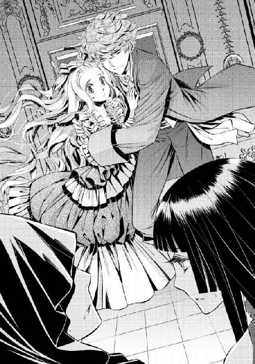
エドアルドは軽く肩を竦めた。
「うん、効いてない。飲まされたやつは、ただの水と同じだったよ。意識を失ったふりはしたけど」
「......なぜ......!?」
「なぜって言われても、俺にもよくわからないなぁ。でも、惚れ薬なら何となく理由はわかるかも。俺はずっとリュシアのことしか好きじゃないからね」
エドアルドは、リュシアを自分の背の後ろに押し込む。そして懐に手を忍ばせると、そこに隠し持っていた短剣を新たに二本取り出した。
指の間に挟んで、構える。
「俺はね、リュシアしか欲しくない。キスしたいのも抱きたいのも、リュシアだけ。他の女じゃだめだよ。欲情もしない。アイリーン、君と結婚したりなんかしたら、子供ができないよ？世継ぎができないと、まずいことになるんじゃないかな」
「......っ」
アイリーンが、身を打ち震わせる。
女性としてのプライドを傷つけられたのは、エドアルドの言葉を聞けば明らかだ。もし同じようなことをリュシアが言われたら、二度と立ち直れないだろう。
だがアイリーンはエドアルドの言葉に泣き寝入りするつもりはないらしい。気を取り直したように笑みを浮かべると──それは少し引きつっていたのだが──言った。
「そう、せっかく穏便にことを済ませてあげようと思ったのだけど......そうはいかせてもらえないようね」
アイリーンは黒衣の青年に軽く顎をしゃくる。何を命じているのかわかったらしい青年は、少し怯む表情を見せながらもエドアルドに向かって片手を突き出した。
その掌に、小さな風が渦巻き始める。いったいどこからやってきたのか、あっという間に手で包み込めるくらいまでの大きさになり、エドアルドに放たれた。
エドアルドはリュシアの身体を抱き寄せて、飛び離れる。二人がいた位置の床に、穴が開いた。ただの風の固まりだと馬鹿にすることはできない。
（魔法の攻撃だわ......!! ど、どうしたら......!!）
おまじないを唱えるのがやっとの自分には、対抗策など考えられない。だがエドアルドのために何かできないかと、リュシアは必死に考えを巡らす。
その間にも風の弾は放たれ続けていて、エドアルドはリュシアを抱き抱えたまま華麗なステップで避け続けていた。
「あら、エド！ 避け続けるばかりじゃ、力尽きてしまうのではなくて!? あなたの恋人は、足手まといにしかならないようね!?」
ズキリ、とリュシアの胸に痛みが生まれる。アイリーンの言葉を否定できないことが、悔しい。
だが、エドアルドはまったく気にしていないというように答えた。
「君は心が狭いね、アイリーン。俺は別にリュシアに助けてほしいとかどうしてほしいとかいう願いはないよ。そんなこと言わなくても、リュシアは自分で自分を成長させようと頑張れる子だからね。リュシアは傍にいてくれるだけでいいんだ」
「......役に立たないじゃないの!!」
「役に立つとか立たないとか、それも関係ないね。リュシアはリュシアのままでい続けてくれればいい。それが俺の癒しになるんだよ。......何でも損得でしか考えられない君には一生わからないことだろうけどね」
エドアルドの短剣が一本、魔法使いの眉間を狙って放たれた。わかりやすい攻撃に、武術の心得のない青年もすぐ反応し、もう片方の掌を額の前に翳す。短剣は魔法によって鋼の硬さとなったそこに食い込むことができなかった。
だが、額を狙って放った直後に、別の短剣が投げられている。黒衣の青年の、脇腹に向かって。
「......っ!!」
一瞬後に遅れてやってきた衝撃に、黒衣の青年が前のめりに倒れ込む。アイリーンが驚きに大きく目を見張った。
エドアルドはリュシアを抱き寄せたままで、今度は自分の腰辺りに掌を差し入れる。そこから抜き出されたのは、また新たな仕込み短剣だ。
鋭い切っ先をアイリーンに迷うことなく定めて、エドアルドは苦笑した。
「ま、これも大国の王子としてのたしなみだよね。......さあ、どうする、アイリーン？ 俺は、リュシアを傷つける者は、身内であろうと絶対に許さない」
エドアルドの緑の瞳が細められ、そこから強烈な殺気にも似た空気が放たれる。それを向けられている対象ではないリュシアですら震え上がるほどなのだから、アイリーンは真っ青になって唇を打ち震わせたまま、動けない。
エドアルドはゆっくりと黒衣の青年に歩み寄ると、爪先で彼の顎をしゃくった。
「この檻を、さっさと解除してくれるかな？ 俺にはやらなくちゃいけないことが多くて、ここで遊んでいる暇はないんだけど」
「......う、あ......」
「......急所はきっちり外しているぞ、魔法使い。できないとは言わせない」
その通りなのかもしれないが、痛みはあるにちがいなかった。黒衣の青年は不平を一切口にせず、のろのろと唇を動かした。
リュシアには聞こえない呪文を紡ぎ出したとき、パンッ!! と何かが破裂する音が響いた。魔法の檻が、効力を失ったのだろう。
「......外に......出れる......？」
思わず呟いたリュシアの身体を、エドアルドが横抱きに持ち上げた。突然のことに身体がついていかず、リュシアは落ちてしまいそうな気持ちになって、慌ててエドアルドの首にしがみついてしまう。
あまりにも勢いがつきすぎて、エドアルドの頬に唇が触れてしまったほどだ。意図しなかった頬へのキスに、エドアルドが軽く目を見開く。対してリュシアは真っ赤になった。
「ご、ごめん、なさ......」
「ここで謝っちゃうのがリュシアだよねぇ。別にかまわないでしょ。俺たちはもうすぐ結婚するんだし」
それはそうなのだが、恥ずかしいものは恥ずかしい。だがそれがエドアルドのいつも通りの様子に思えて、ほっと安堵した。
小さく身を震わせながら目尻に涙を滲ませると、エドアルドの唇がそっとそこに押しつけられて、雫を吸い取ってきた。リュシアは目を伏せて、淡く笑う。
「......エドに惚れ薬が効かなくて、よかった」
「当たり前だよ。俺はリュシアが一番なんだからね。余計な心配はしないこと。......でも、助けに来てくれて、ありがとう」
自分の気持ちをすべて受け止めてもらえたように思えて、リュシアの涙はさらに溢れてくる。エドアルドはよしよしと子供を宥めるように頭を撫でて、扉へと歩き出した。
その途中で思い出したように足を止め、黒衣の魔法使いとアイリーンを肩越しに見やる。
「ああ、そうだ。逃げようとしたり後ろから攻撃なんて卑怯なまねしたりしたら、どうなるかわからないからね？ 何しろリュシアは、あの偉大なる大魔法師カーラの加護を受けてて、本当に死にそうな危険が迫ったら、お前たちなんてあっという間に消し炭になっちゃうからね？」
アイリーンはさほどでもなかったが、黒衣の青年は面白いほどにビクッと身を震わせた。魔法師だけあって、カーラの名はある意味恐怖なのだろう。
リュシアはエドアルドの耳元で、慌てて囁く。
「エ、エド......っ！ 私にそんな魔法はかかってないわ......っ!!」
エドアルドは部屋を出ていきながら、にっこりと笑う。
「うん、知ってる。だってはったりだからね」
リュシアは絶句した。あまりにも堂々としすぎていて悪びれた様子が欠片も見られず、たしなめることすら忘れてしまう。
エドアルドはリュシアの唇にちゅ......っと軽くくちづけて、笑った。
「これが処世術ってやつだからね。リュシアも俺がちゃんと教えるから、おいおい覚えていってね」
（すごい言い切りよう......）
リュシアを抱き上げたまま廊下を歩いていく。エドアルドはこの屋敷の造りを知っているようで、進む足に迷いは見られなかった。
しばらく歩いていると、向こうから召使いが一人やってくる。エドアルドの姿に気づき、彼女は驚きの表情になった。
「......まあ......エドアルドさま......!? どうしてこちらにいらっしゃいますの!?」
「うん、ちょっとアイリーンに用があって来てね。悪いんだけど城にすぐに戻りたいから、馬を一頭借りられないかな？」
「か、かしこまりましたわ、すぐに！」
さすがに公爵に仕える召使いだけあって、戸惑いながらもきちんと仕事は果たしてくれる。かくしてリュシアはあっという間にエドアルドとともに一頭の馬に乗ることができた。
手綱を握る腕に囲われるように、リュシアは横座りになる。召使いはエドアルドが立ち去る前にこれだけは聞きたいようで、思い切ったように口を開く。
「あの......っ！ そちらの可愛らしいお方は、エドアルドさまの......!?」
「ああ、あとで正式に紹介することになると思うけどね。俺の妻になる人だよ」
「......えっ!?」
召使いが、仰天する。エドアルドは一気に馬を走らせた。
第五章 勇気の証
「あ、兄上......!! ご無事で......!!」
城に戻ったエドアルドを、マシューが一番初めに出迎えた。続いて王妃や王も知らせを受けてエドアルドの元にやってきて、安堵の抱擁を与えてくる。
ひとしきり言葉をかけたあと、皆の視線が一斉にリュシアに集中した。
「それで、どうして姫がここに？」
「......あっ、あの......それは......っ」
急に注目を浴びることになり、リュシアの心が萎縮してしまう。説明しなければと気が焦ってしまって、うまく言葉が出てこない。
エドアルドがそれに気づき、リュシアの肩をそっと抱き寄せた。
「俺も説明は手伝うよ。大丈夫」
エドアルドがそう言ってくれると、とても安心する。カーラのおまじないがなくても国王たちにことの次第を話して聞かせることができた。
「そうだったんですか。アイリーンがそんなことを......」
マシューたちがため息をつく。その様子を見て、彼らがさほど衝撃を受けていないことにリュシアの方が驚いた。
「まあ、あの子は一度、痛い目を見ないとダメだろうな。何しろクロードの娘だ」
「なまじ頭がキレる分、自分がこうだと思ったことには手段を選ばないのが困りますね......」
「すぐにアイリーンを押さえよう。あとのことは任せなさい」
国王が部屋の隅に控えていた部下に視線で命じる。二人の部下は余計なことを一切口にせず、主の命を正確に受け取って、すぐに部屋を出ていった。
「さあ、これで大丈夫よ、リュシア」
国王とマシューの言葉を、王妃は否定することなく当たり前のように受け止めている。彼らにとってアイリーンはある意味、警戒する人物だったのかもしれない。
「本当に......無事でよかったわ。アイリーンにひどいことをされなかった？」
「い、いいえ......私は......無事、です」
「今回は無事に済んだからよかったけど、次は絶対こんな無茶しちゃダメだよ、リュシア」
エドアルドが少しばかり怒りの表情でリュシアに言う。リュシアもまた、少しばかり不満そうにエドアルドに言い返した。
「で、でも......好きな人が危ない目に遭っていたら、やっぱり助けたいって思うのが......普通だと、思うの......。だからエド、危険な目に遭っては......ダメよ？」
リュシアがエドアルドの袖を軽く引いて、忠告する。
リュシアはまったく意図していなかったが、その表情は軽く上目遣いで、おねだりをするかのようなものだ。......間近で見ているエドアルドはもちろんのこと、マシューたちでさえ思わずぎゅっと抱きしめたくなるほどの可愛らしさだった。
エドアルドは大きく息をついて、額を押さえる。
「......あのね、リュシア。そういうのは......二人きりのときにしてね」
「......えっと......あの......？」
エドアルドの言葉の意味が、よくわからない。王妃が苦笑した。
「エドアルド、これからずいぶん忍耐力が試されそうね？」
「......笑い事じゃありませんよ、母上......」
「ところかまわず発情しちゃダメですよ、兄上。ところで姫は、お帰りはどうされるんですか？ 魔法でお戻りになるんでしょうか......」
マシューの問いに、リュシアは首を振った。
「おばあさまが貸してくださった魔法は二つだけだったの。解毒薬と、エドのところに行くための魔法。だから、帰りは自力で帰らないと......」
「魔法でびゅーんっていうのはダメなんですか？」
マシューが無邪気に問いかけてくる。リュシアは苦笑した。
「そういうのは、もういけないと思うわ。......コルディーナ国でも、力のある魔法師は生まれなくなってきているし......きっと魔法は、これからどんどん失われていく奇跡になると思うの。いつかはなくなることを考えていかなくちゃいけない。......そういうことだと思うの」
真剣に話してしまってから、リュシアは少しいたたまれない気持ちで肩を竦めた。
「で、でも、今回は......おばあさまに頼ってばかりになってしまったけれど」
「......確かに、リュシアの言うとおりかもしれんな。我が国にはもう魔法がない。だがコルディーナにはそれがあるなどと頼らないように、いつか魔法がなくなる世界も考えていなければならんな」
国王が、顎先を指先で撫でながら神妙に頷いた。そしてリュシアに満足げな笑みを向ける。
「王太子妃は、国の行く末をきちんと考えられる目を持っているようだ。我が国の次代の行く末が、楽しみだぞ」
「......お、王太子妃......っ？」
まるで知らない言葉のようだ。だがエドアルドと結婚すれば、確かにその通りになる。......なんだか妙に恥ずかしい。
頬を赤くして俯くと、王妃がくすくすと楽しげに笑った。
「リュシアはもう少し、その恥ずかしがり屋なところをなんとかしなければダメね」
「も、申し訳ありません......」
「いいよ。俺がちゃんと少しずつ克服していかせるから」
「あら、どうやって克服させるの？ 方法を知りたいわ、エドアルド」
「それは、母上でも内緒です。夫婦間のことですから」
「まだ夫婦じゃないでしょう？ 今から夫面していたら、リュシアに嫌われますよ」
エドアルドがぐっと言葉を詰まらせる。一瞬前までは不遜なほどに自信満々だったのに、今はリュシアの反応をうかがうような目線だ。
リュシアは思わず笑ってしまう。
「嫌いになんて、ならないわ」
「......すでにもう尻に敷かれているな」
妙にしみじみとした口調で、国王が呟く。だがその呟きは小さすぎて、リュシアたちには届かない。
王妃がさらに笑みを浮かべて言った。
「今日はこちらに泊まっていきなさい、リュシア。明日、コルディーナ国へ馬車を出してあげるわ」
「それがいい。リュシア、俺の部屋においで」
エドアルドがそれ以外は許さないとでも言うように、強い口調で言う。リュシアは一瞬ためらったものの、エドアルドの傍が一番安心するのも確かだ。
「......ええ......そうさせて、もらうわ」
「......エドアルド。ちゃんとリュシアを休ませてあげなくちゃダメよ？」
エドアルドはそれには答えず、意味深な笑みを返しただけだった。
兄のユリウスとカーラには、早馬で手紙を送っておく。カーラの遠見の魔法を使えば、リュシアたちの無事は確認できただろうとは思うが、念のためだ。
リュシアは入浴のあとエドアルドのベッドに横になり──うとうととしてしまった。いろいろなことがあって、さすがに疲れていたようだ。入浴を終えたエドアルドがベッドの中に潜り込んできて、その動きで先に眠ってしまったことに気づいてハッとする。
「ご、ごめんなさい......っ」
エドアルドも疲れているだろうに、自分が先に眠ってしまうなんて優しくない。リュシアは慌てて謝るが、エドアルドは微笑んで身体を抱き寄せてくれた。
「謝ることなんてないよ。起こしちゃってごめんね」
「......いいえ......」
リュシアは恋人の頬に手を伸ばし、自分がしてもらったようにいたわるように撫でた。
「エドの方が疲れていると思うわ。大丈夫......？」
「うん、大丈夫だよ。心配してくれてありがとう」
エドアルドの笑顔はこうして見る限りでは、無理をしているようには思えない。だがやはり心配なことは心配だ。
「私にできること......ある......？」
「そんなこと、気にしなくてもいいんだけどね。君が俺の傍にいてくれれば、それだけでいいんだよ。それ以外は何もなくても大丈夫」
声も優しいのに、ひどく情熱的に思える言葉だ。リュシアは赤くなって目を伏せたが、同時にあることが思い出された。
「......あ、あの......ね、エド。聞きたいことがあるの......」
「何？」
「あの、ね......どうして私のこと、そんなに好きになってくれているの？ だって私とあなた......まだ会ってとても長いわけでもないのに......ずっと前から、私のことを想ってくれてるような感じがするから......」
エドアルドが、枕に頭を沈めたままでこちらをじっと見つめてきた。甘く見つめられてどきどきするが、目を逸らすことはしない。自分に何かを話そうとしているのを感じたからだ。
「話す前にもう一度確認するんだけど、リュシアは俺のことが好きだよね？」
「......え、ええ......」
「初恋の王子さまよりも？」
「ええ、もちろん。初恋は、初恋だったの。恋に憧れていただけの話だって......あなたが教えてくれたのよ」
リュシアの言葉に、エドアルドは嬉しげに笑った。そして身を起こすと、夜着のボタンをぷちぷちと外し始める。
夜着の上を脱ぐのだとわかって、リュシアは慌てた。
「エ、エド......!! な、何を急に......っ!!」
「あれ、俺の裸くらいもう大丈夫じゃない？」
確かに、情事は幾度か重ねた。だが初めてのときはリュシアに余裕があったわけではなく、エドアルドも服を着ていた。
二度目のときは部屋を暗くしてもらっていたために、やはりはっきりとエドアルドの肌を見たわけではない。それに愛撫によって心を乱され、彼の裸などまともに見ることはできなかった。
リュシアはベッドから抜け出すこともできず、とりあえず両手で顔を覆ってしまう。衣擦れの音だけが耳に届き、エドアルドがこちらの制止も気にせず夜着を脱いでいることがわかる。
（ど、どうしたら......）
「リュシア、いいよ」
エドアルドの呼び声がするが、リュシアは掌を離すことができない。エドアルドは苦笑すると、リュシアの手首を掴んだ。
「リュシアの知りたいことがここにあるんだけど」
「......で、でも......」
「ちゃんと見て、俺を」
どこか切実に言われてしまえば、閉じた瞳を開くしかなくなる。リュシアは仕方なく恥ずかしさを堪えて、瞼を開いた。
裸の胸が目に入り、リュシアは慌てる。だが手首を掴まれたままのため、身動きもできない。エドアルドは身じろぎすると、リュシアに左の二の腕を見せた。
リュシアはそこに刻まれて残っている傷跡に、気づかされる。うっすらと肉が盛り上がった皮膚の色は、ずいぶんと古く、かなり深いもののようだった。
リュシアは恥ずかしさを忘れて、痛ましげに眉根を寄せた。手を伸ばして、傷跡をそっと撫でる。
「......痛い......？」
古傷だから、もう痛みはないだろう。それがわかっていても問いかけてしまう。
エドアルドはリュシアに笑いかけながら、首を振った。
「大丈夫だよ。もう痛くない。俺にとってこれは、君が与えてくれた勲章みたいなものなんだ」
「私が......？」
「そう。......ねえ、よく思い出して、リュシア。初恋の王子さまのこと。初恋の王子さまは、あのとき、怪我をしたんじゃなかった？」
リュシアは瞳を瞬かせる。
確かにその通りだ。だがエドアルドにそこまで詳しく話してはいないのに。
「エド......？」
「この傷、覚えがないかな？」
「......傷......？」
エドアルドの傷を、リュシアは丁寧に指先で撫でる。そうしながら、記憶を思い出す。
（あのとき、私は......）
☆☆☆
──コルディーナ国に、カーラの知り合いの子がやってきていた。
男の子で、兄より二つ年下の子だった。自分の方が歳が近いこともあって、カーラはリュシアにも引き合わせてくれた。男の子は子供ながらに整った綺麗な顔をしていた。
リュシアに対して男の子はとても優しく接してくれたけれど、それが儀礼的なものだと子供心にわかった。あの頃はまだ大伯父によるトラウマもなく、明るく少し怖いもの知らずだったリュシアだ。嫌われているわけではないと思えたが、その子の表情がとても悲しそうだったために、思わず問いかけてしまった。
「ね、ねえ......どうしてそんなにつまらなそうなの？」
「......つまらなそう......かな？ そんな顔をしてる？」
幼いからこその不躾さで尋ねたリュシアに、少年は軽く目を見張って尋ね返した。
「ご、ごめんなさい。私には......そう見えるの......面白いこと、何も知らない？」
「そうだなぁ......うん、そうかも。僕、大抵のことは何でもできるんだ。僕って優秀なんだって」
「そうなの？ じゃあ......リュシアに花冠を作ってくれる？ 私、あんまりうまく編めないの」
「......花、冠......？」
丁度庭に咲いていた目の前の白い花を指し示して、リュシアは言った。だが少年はひどく戸惑ったようにリュシアを見返す。
「......僕は男だよ。花冠なんて、作ったことないよ」
「じゃあできないの？」
「......う、うん......」
「お母さまより美味しいクッキーを作ることもできない？ あとね、お母さまの召使いのイザベラは、リュシアのドレスを作ってくれるのよ。イザベラよりも可愛いドレスを作ってくれない？」
少年は、俯きがちになりながら言った。
「それは、女の子がすることだよね。僕は男の子だからできないよ」
その声がどこかふてくされたように聞こえたから、リュシアは慌てて少年の顔をのぞき込んだ。
「あのね、教えてもらえばできるよ。私もできるようになりたいから、一緒にやらない？ あのねぇ、新しいことを一つ知ると、私はすごく楽しくなるの。だからあなたも、楽しくなるよ！」
花冠やクッキー作り、それからドレス作り。リュシアがやりたいと思ったことに少年はつきあってくれて、とても楽しそうだった。初めて会ったときに感じたつまらなそうな表情はあっという間に笑顔に変わり、リュシアはそれをとても好きになった。
少年がいる間はカーラも王城に滞在してくれて、それも嬉しかった。暖炉の前でカーラは自分と少年に絵本を読み聞かせてくれたりもした。
先に少年の方が眠ってしまったとき、カーラはリュシアの頭を撫でながら聞いた。
「お前、この子が好きかい？」
「うん、大好き！ 一緒に遊んでくれるし、優しいの。笑顔がとっても素敵なの」
「そうかい。でもね、この子は優秀すぎて自分の目指す未来をどうすればいいのかわからなくなってしまったんだよ。次期国王として、この子は何でもできる。必然的に、周囲は期待をかける。この子は優しいからそれに応えようとする。......そうしているうちに、周囲が望むから国王になる、という未来を抱くようになってしまった。それが違うとわかっても、どうしようもできなくなってしまったんだねぇ......」
絵本の続きのように、カーラは話してくれた。だが幼い心には、カーラの話の意味がよくわからない。
「おばあさま、それ、どういうことなの？」
「うん？ そうだねぇ......リュシアにはまだ早かったかねぇ......でも、お前ならあの子を何とかしてくれると思うんだよ。お前はあの子が好きだろう？」
「うん、だーいすき」
リュシアは笑って頷く。それがリュシアにとっては至極当然のことだったからだ。
──そしてその日は少年とともに、庭の一画で、リュシアがねだるままに花冠を作るため、材料の花たちを摘んでいた。
もっと花を摘まなければと、無意識のうちにリュシアは庭の奥へ奥へと向かっていく。召使いたちの目が行き届かないところにまで向かってしまったが、少年はちゃんとついてきてくれた。......そこで、どこからか紛れ込んだ犬に襲われ、リュシアを庇った少年は左腕を噛まれて大怪我をしてしまったのだ。
衝撃と恐ろしさにリュシアは気を失ってしまった。それでも目が覚めれば少年のことがとても心配になり、召使いたちに頼んで、彼の元へ連れて行ってもらった。......何よりも、少年がリュシアに傍にいてほしいと願ったらしい。
少年の怪我のガーゼを取り替えるときにも隣にいることになり、真っ赤に染まっているガーゼに、危うくまた失神してしまいそうになった。
だが痛いのは、自分ではなく少年だ。それがわかっているからこそ、リュシアは泣きたいのを堪えて手当てのときも離れず、少年の手を握っていた。
怪我の処置が終わって召使いたちが去り、ベッドに二人だけになる。
「......ごめんね......ごめんなさい。痛かったよね......？」
どう償えばいいのかわからず、リュシアはただ謝罪を繰り返す。少年はリュシアの頬を無事な方の手で撫でながら笑い、首を振った。
「痛いけど、いいんだ。ちゃんとわかったんだ。僕は、誰かを助けることができるんだって」
「......うん。あなたは私を助けてくれたよ」
「僕にはそれが必要だったんだ。僕の手はちゃんと、誰かを助けることができる。だから僕は、王になれる。......王に、なるんだ。僕の国のみんなが、リュシアみたいに楽しそうに笑って過ごせる国をつくるんだ。誰かに言われたからなるんじゃない。僕がなりたいから、なるんだ」
「......王さまに、なるの？」
少年の言葉の意味をすべては理解できず、とりあえずそこだけは理解する。リュシアが尋ねると、少年は頷いた。
「うん、なるよ」
「......もう、コルディーナには遊びに来れなくなっちゃう......？」
国王になるというのがどういうことかは、よくわからない。だが、忙しくなるのだろうということはわかる。
ユリウスも歳を重ねるごとに、リュシアと遊んでくれる時間が減っていった。少年もまた、自分と一緒に遊んでくれなくなってしまうのだ。
それが寂しくて、リュシアはしくしくと泣き出してしまう。せっかく仲良くなれたのに、もう遊べなくなるのは寂しい。......会えなくなるのは、寂しい。
少年がリュシアの方に身を寄せて、額に軽くくちづけた。
「泣かないで、リュシア。僕が王様になったら、僕の妃はリュシアがなってよ。そうしたら、一緒にいられるよ」
「お妃さまに？ あなたの？」
「うん。......嫌かな？」
少し不安そうに問いかけてくるから、リュシアは満面の笑みを浮かべて首を振った。
「ううん、嫌じゃない。あなたと一緒にいるのはとても楽しいもの。おばあさまが言っていたの。好きな人といると、それだけでとても楽しいんだって」
「うん、じゃあ約束ね。僕の妃は、君だよ、リュシア」
☆☆☆
傷跡に触れて過去を思い返してみると、まるで昨日のことのように鮮やかに思い出された。
きっかけさえ与えられれば、リュシアの記憶は次々とよみがえってくる。どうして忘れてしまっていたのだろう。
「......私の初恋の王子さまは......あなた？」
「そう。この傷が証拠だよ。嘘じゃないでしょ？」
「......嘘......あなたは私のこと覚えていて......だから、あの仮面舞踏会のときに......？」
エドアルドはいたずらっぽく笑って頷く。
リュシアはふるふると身を震わせたあと、思わず握りしめた拳をエドアルドの胸元に打ちつけた。もちろん、リュシア程度の力でエドアルドに痛みを与えられることはないが。
「......馬鹿！ 馬鹿馬鹿馬鹿!! どうして黙っていたの!? ちゃんと教えてくれたらよかったのに......!!」
「だってリュシア、忘れちゃってるんだもん。ユリウスから話は聞いてたけど、結構ショックだったんだよ」
「ショックだったなら、私を責めてくれたらよかったのに......!!」
そうしたらそれをきっかけにして、記憶が戻ったかもしれないのに。
文句を続けるリュシアの腰に両腕を絡めて、エドアルドは抱きしめながら転がる。エドアルドを下にして、彼の上に抱きつくような格好になってしまった。
「そうなんだけど、それって男らしくないじゃない？ だったらもう一度俺を好きになってもらえばいいのかなって思って。......誘惑しまくったけど、効果あったみたいでよかったよ」
「......馬鹿！」
リュシアの拳が、エドアルドの胸にもう一度当たる。エドアルドは笑った。
「ごめんよ。でも、好きだから」
「そう言えば全部許せると思ったらまちが......ん......！」
エドアルドの唇が、リュシアの唇に重なった。
軽く吸われ、舐められる。そのままそっと舌を差し入れられて、柔らかく舌に絡みつかれた。
最初は優しくゆったりとした動きだったのに、すぐに激しく深いものになる。リュシアの腰に回る腕にも力がこもり、ぎゅっと強く抱きしめられた。
しかも体勢のためか、リュシアがエドアルドにキスしているように思えてしまう。リュシアはエドアルドの胸に両手をついて身を起こそうとしたが、無理だった。
「......ん......ん、エ、エド......も、駄目、よ......っ」
このままこんなに深く熱いキスをされたら、あとに引けなくなってしまう。なのにリュシアの身体を、エドアルドの掌が官能を引き出すように撫で回し始めた。
「......だ、駄目......」
「駄目じゃないよ。......いい、でしょ？」
いやらしく囁きながら、エドアルドの両手がつるりと後ろの双丘を撫でた。
指が胸を愛撫するときと同じようにそれぞれに力を込めて、そこを揉みほぐしてくる。リュシアは背筋を仰け反らせた。
「......あ......や、ん......」
エドアルドは上体を起こし、リュシアの首筋に顔を埋めた。感じやすいそこに、舌を這わせる。唾液を乗せてぬめった舌の熱さに、リュシアは身を震わせた。
「......あ......ん、んん......っ」
エドアルドの手がさらに下り、リュシアの大腿を撫でる。撫で上げる仕草で、夜着の裾から肌に直接触れてくる。エドアルドの熱い掌は、夜着の下でさらに上がり、リュシアの腰から胸の膨らみへと上がった。
胸を優しく揉みしだいてくる。同時に指の腹で、胸の頂を弄り回す。あっという間に硬く尖った頂を、エドアルドの指は摘んで、軽く引っ張った。
「......んぁ......っ！」
「あ、痛かった？ ごめんね」
エドアルドが指を離す。代わりにエドアルドの舌が、夜着越しに頂を舐めてきた。
唾液で、薄い布地がしっとりと濡れる。エドアルドの舌の愛撫は布地越しではもどかしく、リュシアは思わず身を揺らした。
「......あ......あぁ......」
「......腰、揺れてる」
「あ......だって......」
エドアルドの腰に回った両手が動き、リュシアを自分の腰の間に跨がせるようにする。エドアルドの夜着越しに、彼の張りつめた熱い高ぶりが感じられた。
「......エ、エド......」
「うん。俺も、リュシアが欲しくてたまらない」
エドアルドが、リュシアの腰を片手で優しく撫でてくる。リュシアは思わずエドアルドの首にしがみつくように抱きついた。
「......ど、どうしたら......？」
「うん、ちょっと待って」
エドアルドが身じろぎし、下肢の夜着を脱いだのがわかった。直後、リュシアの足の間にエドアルドの熱い高ぶりが押しつけられる。
エドアルドはリュシアの耳元に唇を寄せて、そっと囁いた。
「......降りてきて」
「......え......」
「大丈夫、できるよ。降りてきて」
甘い囁きに促されるままに、リュシアは軽く腰を下ろす。だが濡れた入口にぬるりとエドアルドの鈴口が触れて、その熱さと大きさにおののいた。......本当に、受け入れられるのだろうか。
「......君の中に、入らせて」
「......あ......ん......」
エドアルドの熱い嘆願に、勇気が少し湧いてくる。リュシアはエドアルドの肩を掴み、そっと腰を落とし始めた。
ずぶずぶと、エドアルドの雄が花弁を押し広げて入り込んでくる。これまで以上にエドアルドが入ってくる様子が伝わってきて、リュシアは喘いだ。
「......あ......無、無理......よ。大き......い......っ」
「大丈夫、大きく息を吐いて......ほら......」
「あ......はぁ......っ!!」
エドアルドの促しに合わせて、徐々に腰を下ろしていく。やがて、ぐぷり、と奥までエドアルドを飲み込んだ。
「......あぁ......っ」
リュシアはエドアルドの肩に顔を伏せるようにして、抱きつく。エドアルドがリュシアの背中を優しく撫でた。
「......ん......熱いよ、リュシアの中......」
「......エドも、とても......熱いわ......」
「リュシアが欲しくてたまらないからね。ああ、駄目だ。我慢できない。......動くよ」
「え......あ......待、待って......ぇ!!」
エドアルドの腰が動く。リュシアの身体が浮き上がるほどの激しい突き上げだ。
「あ......あっ、あんっ!! あ......エ、エド......っ!!」
突き上げる動きに合わせて、柔らかな胸が揺れる。エドアルドの片手が伸ばされ、ふくらみを少し強めに掴んで揉みしだいてきた。強めの刺激も、今は甘い快感に変わる。
つながった場所は、ぐちゅぐちゅと淫らな水音を立てるほどに激しく抽挿が繰り返された。リュシアはエドアルドの肩を強く掴む。そうでもしないと、意識が焼け切れてしまいそうなほどの快感だ。
「......リュシア......っ!!」
「エ、エド......っ!! は、激し......っ、の......っ!!」
「仕方ないよ、俺がそれだけリュシアのことが好きだから。こういうのは、嫌いかな？」
そんな聞き方はずるい。リュシアはエドアルドを涙目で見返す。
エドアルドはリュシアの瞳に魅入られたように視線を返して──深く、飲み込むようにくちづける。
「......あ......はぁ......っ」
熱い呼気を互いに吐きながら、唇を離す。リュシアは揺さぶり上げられながら、エドアルドを軽く睨みつけた。
「......嫌いじゃ、ないわ......」
「それは、よかった」
エドアルドの腰の動きが、さらに激しくなる。リュシアはエドアルドの腕の中で、嬌声を上げ続けるしかなかった。
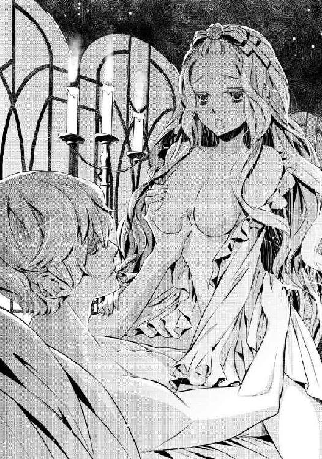
あれから朝方近くまで抱かれて、リュシアは動くのがやっとという状態だった。もっと眠っていたいが、コルディーナ国に帰らなくてはならない。
妙にすっきりとしたエドアルドの表情にやはり一言文句を言いたくなって、リュシアは言う。
「......エド。あの......お願いだから、もう少し手加減してほしいの......」
ベッドの中でシーツにくるまりながら言うリュシアの文句に、エドアルドはガウンを纏いながら肩越しに笑った。
「それは無理。我慢して」
「......そ、そんな......」
「仕方ないよ。俺は溺愛主義者みたいだし。好きな子は、愛して愛して愛しまくりたいんだよ」
......結婚したら、どうなるのだろうか。少し想像するだけでも身体が保つのかと不安になってくる。
それなのに、嬉しくなってしまうのだから自分も大して変わらないのかもしれない。
「それに」
エドアルドがリュシアの傍に歩み寄って、リュシアの左手を取った。エドアルドを助けるために捧げてしまったので、薬指に花の指輪はない。
エドアルドは指輪がはめられていた場所に、そっと唇を押しつける。
「すぐに新しい指輪を贈らせてね。君が俺のものだって証を」
リュシアは小さく笑った。今度は手紙の返事が来ないと怯えることはない。
「ええ、待ってるわ」
終章 プリンシア・マリッジ
大国フレディアスの次期国王の婚儀ということもあって、国中がお祭り騒ぎだった。
国民たちへのお披露目として、飾り立てた馬車で王城の周囲をパレードする。真っ白なウェディングドレス姿に百合の花束を持ったリュシアは、ダイヤモンドのティアラを頭に載せた姿で、レースの白手袋に包まれた手を、パレードを見にやってきた民たちに振り続けた。
聖堂での誓いのときに顔を隠していたヴェールは、今はない。リュシアのまだ少し愛らしさの残る顔を、このときばかりは国民たちもじっくりと見ることができるのだ。
肩に金の房飾りのついた白い礼服を纏い、白手袋をはめた手を振りながら、エドアルドはリュシアの隣に座っている。手を振っていない方の手は、互いにつないでいた。
「エドアルドさま、万歳！ リュシアさま、万歳！」
国民たちの歓声を受け止めるリュシアたちの馬車の後ろには、国王夫婦の馬車が続く。その後ろにはコルディーナ国王代理として、ユリウスの馬車が続いた。
ユリウスの後ろには、フレディアス国の高官たちが続く。......クロード公爵もその中に入っていたが、彼の隣にアイリーンの姿はなかった。アイリーンは今回の件に関して、異国に留学というかたちでしばらく追放されたのである。
エドアルドの胸ポケットには、白いハンカチが飾りとして綺麗に差し込まれている。それは、リュシアが刺繍してプレゼントした二枚目のハンカチだ。
そしてリュシアの指には結婚の証がはめられている。
「大人気だね、リュシアは。もうすでに国民の気持ちを掴んでるよ」
エドアルドが誇らしげに言う。リュシア自身は特に何もしていないのだが、民たちは二人の仲睦まじい様子にとても満足しているらしい。......二人の様子は王城に勤める者たちから少しずつ漏れていた。人の口に戸は立てられないため、それは仕方のないことだ。
「わ、私......何もしていないけど......」
「リュシアはそこにいるだけでいいんだよ。国民は、決して何も考えていないわけじゃない。リュシアのことをちゃんと見て、自分たちの次期王妃にふさわしいのかどうかを判断するよ」
さらりと何でもないことのように言ってくれるが、それはとても厳しい状況ではないだろうか。常に自分たちは国民の審判の目に晒されていることになる。......だがそれは、『王』が担う責務なのだ。
そしてエドアルドは自らの責務を決して放棄しない。自分は彼の隣でその手伝いをしたい。
「ねえ、エド。大好きよ」
溢れるいとおしさが、リュシアにそれを口にさせた。もうカーラのおまじないは必要ない。
エドアルドが軽く目を見開いたあと、微苦笑する。
「リュシアにはほんと、敵わないなぁ......」
言いながら身を寄せてくる。何を望んでいるのかをすぐに悟ったリュシアは、真っ赤になって上体を引いた。
「だ、駄目よ、エド。今は、パレードの最中よ......！」
民たちの目があるのに、はしたない。リュシアらしい叱責に、エドアルドは低く笑う。
「大丈夫。それどころか俺たちがすごーく仲がいいところを見せておいた方がいいと思うけど。今度は俺たちの子供が早く見たいって言われるだろうし」
「......こ、こど......っ？」
まだ結婚したばかりで、さすがにそこまでは想像していなかったリュシアは、真っ赤になって口ごもる。エドアルドが、目を閉じて端正な顔をこちらにさらに寄せてきた。
リュシアは恥ずかしさで瞳をさ迷わせてしまうが、結局のところ、言うことを聞いてしまう。エドアルドのこういう強引さを拒むことができないのは、恋した弱みだろうか。
リュシアは目を閉じ、そっとエドアルドの唇にくちづける。直後、民の歓声がひときわ高くなり、リュシアたちに向かって祝いの花が次々と投げられた。
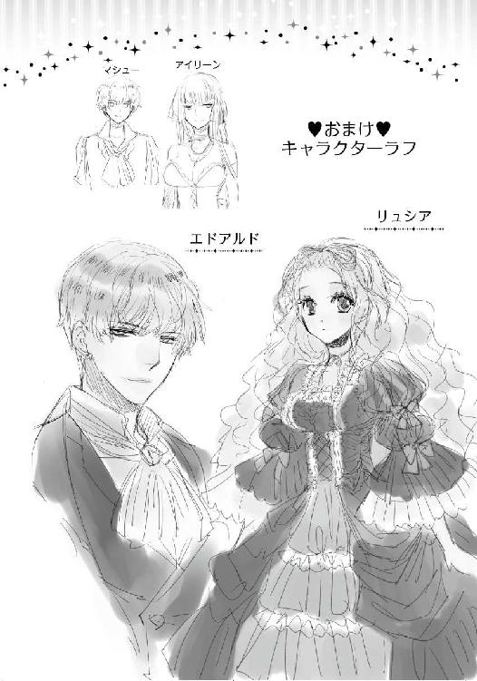
あとがき
初めまして、舞姫美です。このたびは、本作をお手にとっていただきましてありがとうございました！
そしてロイヤルキス文庫創刊、おめでとうございます!!
創刊企画メンバーの中に呼んでいただき、光栄です。お話をいただいたときに、夢かな......とか思いました（笑）。夢じゃなくてよかったよかった（感涙）。
プロットの段階からこちらのお話は、まったく苦労することなくできあがったお話です。過去に書いてきたヒロインの中では一番おとなしい子なのですが、その分ヒーローが暴走気味というか自由気ままというか......！ 他キャラも、いや待ちなさいというくらいに動いてくれて、あっという間に書き上がったお話です。
とにかく糖度が高く！ 甘いお話が書きたい!! という気持ちのまま、こちらのお話はできました。
うん......愛されまくってるよね、リュシア......（遠い目）。リュシアの身体が今後果たして保つのかどうか疑問ですが、エドアルドに愛されまくって幸せだと思うので、これでよし!! とします。
......でもエドアルドがあまりにも幸せそうなので、もうちょっと慌てて欲しいなぁとかも思ったりもしています。いつか機会があったらそういうお話も書けたらいいな。
書きたいものを自由に書かせていただき、とても楽しいひとときでした。特に元気をいただいたのは、担当さんからの「おっぱいサプリ」かもしれません！ あれはいろいろ効きました！ 日々の疲れも眠りも吹き飛びました！
さてそのサプリとは、坂本先生のイラストのラフチェックです。担当さんから進行の関係上、添付ファイルをスマフォに送られてきまして......受け取った場所は狙いすましたかのように、電車の中！ いろんな意味で挙動不審になってしまった次第です......!!
ほんと、歓喜の悲鳴を噛み殺すのに苦労しました（笑）。
イラストを、大好きな坂本あきら先生に描いていただけて、とっても嬉しいです。ありがとうございます！
お願いできるのかどうかおそるおそるお名前を挙げさせていただきましたが、お引き受けくださったとの連絡を聞いたときには、狂喜乱舞でした。言ってみるもんだ......!!
坂本先生のヒーローのキメ顔が好きなのです......。そしてヒロインの可愛くて胸が素敵なところが好きなのです......。ラフが届くたびにぎゃーとかわーとか叫んでいました（汗）。
見せて頂いた表紙の完成版は、予想以上の素敵さでした。眩しい！ 眩しいよ......!!
すでにエドが、リュシアは俺のものだからという顔をしているように見えて、ニマニマしてしまいました。
こうして新たな本を出すことができたのも、担当さん、編集部の方々、そして坂本先生のおかげです。一冊の本を出すのに、たくさんの人の手が入ることを改めて実感し、感謝の気持ちでいっぱいです。ありがとうございます。
そして何よりも、この本をお手に取ってくださった方に、最大級の感謝を。ありがとうございます。
読み終わったあとに、少しでも幸せな気持ちになっていただければとても嬉しいです。
またどこかで、お会いできることを祈って。
溺愛王子の甘やかな誘惑 ―プリンシア・マリッジ― 番外編
リュシアを妻として迎えたことで、エドアルドには以前にも増して次期国王としての自覚が出てきたらしい。それに呼応するかのように公務も増え、彼は忙しい日々を送っている。
リュシアも皇太子妃としてフレディアス国の歴史や習慣、現状の改善しなければならないところなどを勉強して、少しずつ公務が増えていた。とはいえエドアルドにはまだ及ばず、ここ数日は彼とは夜も一緒ではない。
エドアルドは次の春に実行しようとしている新たな施策について、国王や貴族議会と詰めの会議に入っていて、この棟を留守にしていた。
住む棟は違っても、会いたければリュシアが足を運べばいいのだが、帰ってこれないほど忙しいのならば邪魔になってしまうだろうと遠慮している。それでも夫の応援はしたくて、差し入れはしていた。
エドアルドからは感謝と愛の想いが込められたメッセージカードが返ってきたが、とてもそれでは満足できない。
（エドに、会いたいわ......）
そんなときに義弟となったマシュー王子がリュシアの部屋を訪れて、一匹の子猫を連れてきたのである。
「義姉上がお寂しくしているかと思って」
「まあ......！ 可愛い......!!」
バスケットの中にキルト布が敷き詰められ、そこに子猫が座っている。まだ生まれて二ヶ月ほどしか経っていないため、身体は小さく、目は濡れて大きくくりくりしていて、すべての仕草がおぼつかなかった。
「僕付きのメイドの家で生まれた子なんです。兄上がずっと会議にかかりきりだと聞いたから、少しでもお心の慰めになるようにと思って」
「どうもありがとう、マシューさま。とても嬉しいです」
バスケットから、子猫を抱き上げる。子猫はずいぶん人なつっこく、リュシアの胸元に前足を置いて、こちらを見上げてきた。
にゃーん、と小さく鳴かれて、リュシアは微笑む。抱き潰してしまいそうなほど、可愛い。
子猫はリュシアの顎先を、ぺろりと舐めてきた。リュシアが声を立てて笑うと、マシューも笑う。
子猫は喜んでもらえたと思ったのか、更に身を乗り出して今度はリュシアの唇を舐めてきた。
「あ、キスしちゃいましたね。その猫、オスですよ。見る目があります」
「本当？ 駄目よ、レディに許可なくキスをしたら」
「──何を笑ってるのかな、リュシア？」
突然予想もしていなかったエドアルドの声が聞こえ、リュシアはビクリと身を震わせた。子猫を抱いたまま振り返れば、エドアルドが大股に近づいてくるところだった。
数日ぶりに見るエドアルドの姿にリュシアは満面の笑みを浮かべようとしたが、緑の瞳に怒りの炎が浮かんでいるのを認めて立ち尽くしてしまう。
「リュシア、獣はね。いけないときはいけないともっとしっかり叱らないと駄目なんだよ？」
何かエドアルドの怒りに触れてしまったことはわかるのだが、原因がさっぱりわからず、リュシアは子猫を抱いたまま動けない。子猫はリュシアの腕の中で、気持ちよさげに喉を鳴らし、胸のふくらみに小さな頭をこすりつけた。
マシューが苦く顔をしかめ、片手で額を押さえる。エドアルドの顔がぴくりと引きつった。
「エ......エド、どうしたの？ 私、何かしてしまったかしら......」
リュシアは泣きそうな気持ちになりながら、問いかける。エドアルドにせっかく会えたのに、笑顔ではなく怒った顔を見ることになるとは、哀しい。
エドアルドはリュシアの胸元に手を伸ばしながら、答えた。
「わからないの？ それは皇太子妃としていけないね。ちゃんと教えてもらってない？」
エドアルドが、子猫の首元をつまみ上げる。突然のことに子猫は暴れることもなく、きょとんと目を丸くしていた。
「──俺以外の奴と、キスなんかしちゃダメだって」
エドアルドが子猫をマシューへと差し出す。兄がしようとしていたことにすでに気づいていたマシューは、無言のまま手を差し出し、子猫はそこにちまっと乗せられた。
エドアルドの怒りの理由に、リュシアは唖然としてしまう。
「......子猫よ......？」
「でも、オスだよね？」
「それは、そうだけど......でも、子猫よ......？」
「義、義姉上！ ここは謝っておいた方が......っ」
マシューが潜めた声で、慌てて忠告する。だがリュシアがそれに応えるより早く、エドアルドがにっこり笑いかけた。......その笑みに、何か嫌な予感を覚えたのは、どうしてか。
「あ、あの、エド......？」
「わからないのなら、お仕置き」
エドアルドがリュシアの腕を掴み、自身に引き寄せた。体勢を崩してエドアルドの胸に倒れ込んでしまい、リュシアは焦って顔を上げる。
直後、エドアルドの唇が押しつけられた。
「......んん......っ!?」
慌ててエドアルドを押しのけようとするが、その手首は彼に捕らえられてしまう。片腕は腰に絡んでぴったりと引き寄せられ、身動きもままならない。
「......ん......んぅ......っ」
エドアルドが軽く首を振る仕草で、リュシアの唇を押し割った。すぐに熱くぬめった舌が押し込まれて、リュシアの小さなそれに絡みついてくる。
こすりつけられ、強く吸われ、力が抜けてしまったところで甘く噛まれる。膝が震えて立っていられなくなり、リュシアはエドアルドの胸にもたれかかった。
それでも角度を変えて与えられるくちづけの合間に、途切れがちに言う。
「エド......見、見られて......」
「はい、義姉上、見ていません！」
マシューが言って、子猫を抱いたまま背中を向けた。そういう問題ではないと反論したいが、エドアルドのくちづけはますます深くなる。
「あ......は、あ......っ」
エドアルドの胸にぐったりと完全にもたれかかるまで、唇を味わわれてしまう。ようやく気が済んだのか、エドアルドは濡れた唇をぺろりと舐めてから、顔を上げて微笑んだ。
「わかった？ この唇は俺のものなんだから、誰にもキスされちゃいけないんだよ」
「ね......猫、でも......？」
「猫でも。当然でしょ？」
笑っていながらも、その口調は有無を言わせないものだ。リュシアは少々の理不尽さを覚えながらも、仕方なく頷く。
リュシアは気を取り直し、改めて夫に笑いかけた。
「会議の方は、終わったの？」
「昼食の時間だけ、抜けられたんだ。リュシアと一緒に食べようと思ってね。会えないのもそろそろ限界だし」
「嬉しい......!!」
先ほどの怒りも忘れて、リュシアは満面の笑みを浮かべる。
「だったら、マシューさまも一緒に......」
「マシューは、ダメ。いらないから。同席させたら、さっきよりひどいお仕置きをするけど？」
押しかぶせるように笑顔で言われて、リュシアは身を強張らせる。......さっきよりひどいお仕置きとなると、どんな淫らなことになるのか。
絶句するリュシアの傍を、マシューは何もかも悟った表情で通り過ぎ、扉へと向かった。
「お気になさらず、義姉上。兄上はこういう性格です。......兄上、まだ陽も高いんですから、ほどほどになさってください」
（ほ......ほどほど!? ほどほどって何!?）
マシューはさっさと部屋を出て行く。そしてエドアルドはリュシアを抱きしめたまま、艶めいた笑顔で言った。
「さあ、リュシア。午後の会議を頑張れるように、俺を癒してよ」
溺愛王子の甘やかな誘惑―プリンシア・マリッジ―
電子第１版発行 ２０１４年６月１日
著 者 舞 姫美
発行所 株式会社ジュリアン
東京都千代田区九段北１―５―９―３Ｆ
０３―３２６１―２７３５
ＨＰ http://www.julian-pb.com/
※本電子書籍は左記の作品に基づき製作されました。
発行 株式会社ジュリアン
ロイヤルキス文庫『溺愛王子の甘やかな誘惑―プリンシア・マリッジ―』
（初版発行 ２０１４年１月30日）
(c)Himemi Mai/julian Publishing2014
※本書の一部、あるいは全部を無断で複製複写（コピー）、転載、上演、放送することは法律で認められた場合を除き、著作権の侵害となるため、禁止します。